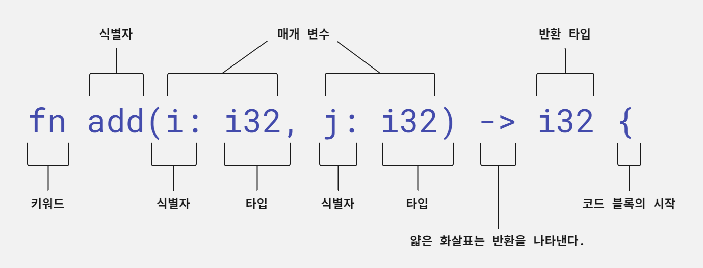
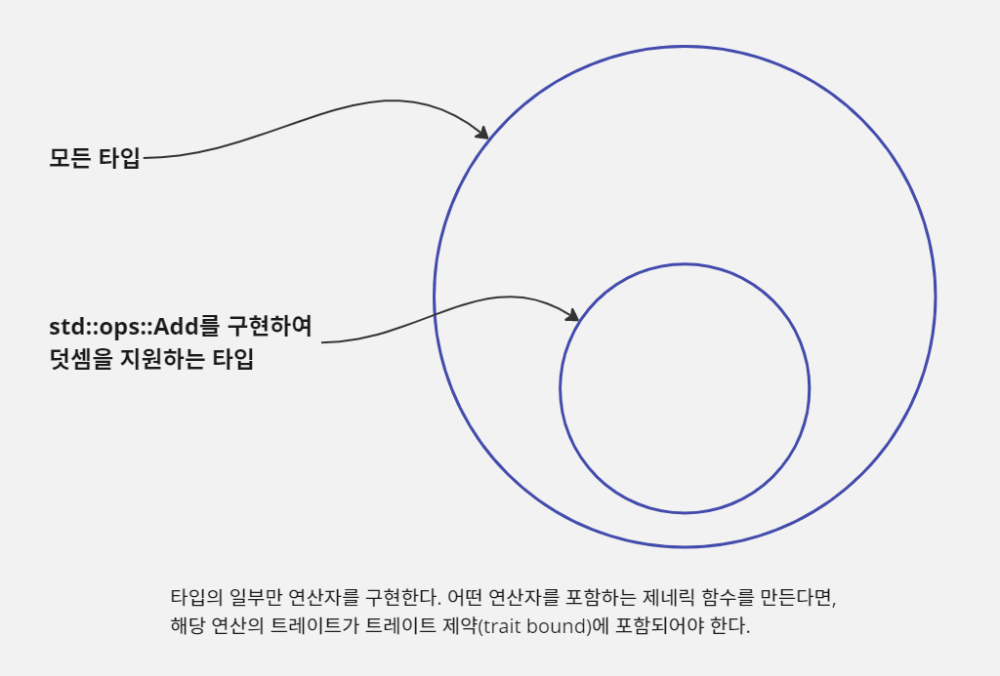
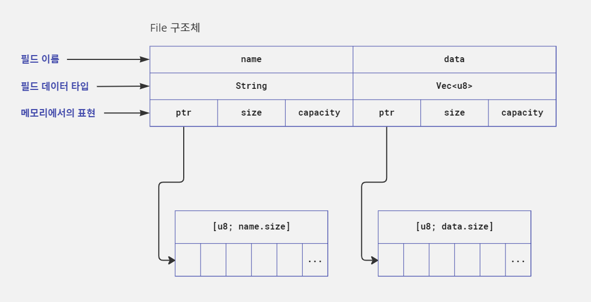
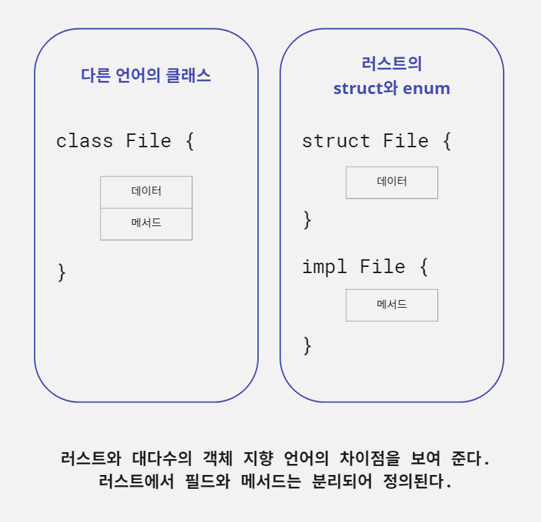
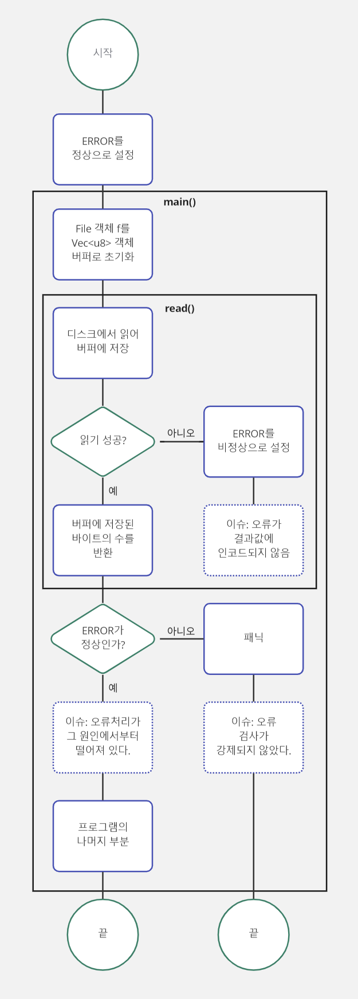
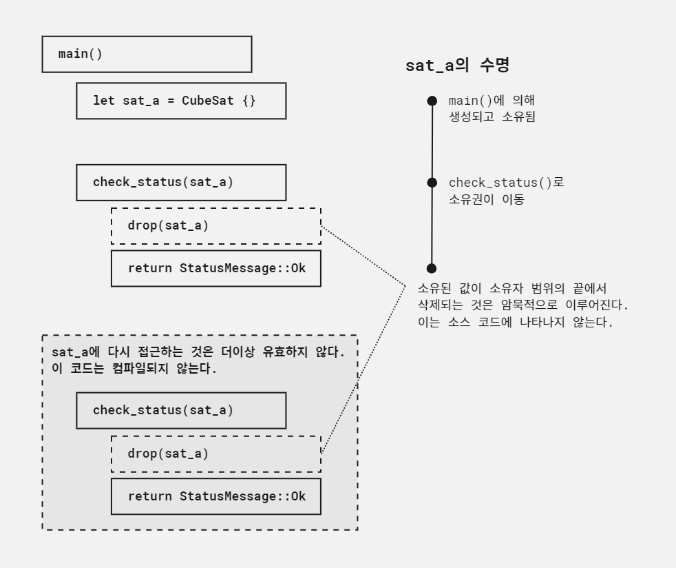

#패스트캠퍼스, #국비지원교육, #메가바이트스쿨, #MegabyteSchool, #개발자취업부트캠프, #내일배움카드
Introduction
이 작업을 왜 하는가?
- 'Rust in Action'의 번역서인 '러스트 프로그래밍'은 저를 프로그래밍의 세계로 뛰어들게 만든 책입니다.
- 우연히 만난 이 책으로 인해 제 인생은 완전히 다른 방향으로 바뀌게 되었고, 이 책을 만나게 된 것을 정말 감사하게 생각합니다.
- Rust는 제 프로그래밍의 첫 시작이었으며 Rust에 대해 무한한 애정을 갖고 있습니다.
- 이 책을 처음 몇번을 읽다가 실패했고, 겨우 한번 완독했지만 내용을 많이 이해하지 못해서 이번 기회에 한번 정리해 보려고 합니다.
방향과 계획
- 프로그래머로서의 저의 방향은 러스트와 관련된 일을 하는 것이고, 장기적으로 깊게 공부할 계획입니다.
- 'Rust'에 관한 책은 많지만, 대부분 영어로 된 책들이고, 정리하는데 많은 시간이 들어갑니다.
- 우선은 'Rust in Action', 'Rust Programming Language 2nd Edition', '동시성 프로그래밍'을 좀 건드려 보려고 합니다.
저장소
- Github Repository에 모든 md파일, 작성해본 예제 파일, 빌드 파일들을 저장해 놓았습니다.
- https://github.com/jerok-kim/rust_in_action
러스트 소개
이 장에서 배울 내용
- 러스트의 특징과 목표
- 러스트 문법 살펴보기
- 러스트를 사용할 경우와 사용하지 말아야 할 경우
- 첫 번째 러스트 프로그램 만들기
- 객체 지향 언어 및 그 외 언어와 러스트 비교 설명
러스트가 어디에 사용되는지, 러스트를 실무에서 추천하는지에 대한 내용은 생략한다.
언어 맛보기
"Hello, world!" 프로그램을 편법으로 만들어 보기
명령 프롬프트를 열고 다음 명령을 입력해 보자.
C:\> cd %TMP%
$ cargo new hello
Created binary (application) `hello` package
$ cd hello
$ cargo run
Compiling hello v0.1.0 (C:\Users\jerok\projects\study_blog\rust_in_action\code\ch01\hello)
Finished dev [unoptimized + debuginfo] target(s) in 0.90s
Running `target\debug\hello.exe`
Hello, world!
헬로 월드가 찍혔으니 이제부턴 러스트 개발자이다. 가즈아!
러스트의 카고(cargo) 도구는 빌드 시스템이면서 패키지 관리자다. 즉, 카고는 러스트 코드를 실행 가능한 바이너리로 변환하며, 프로젝트의 의존성을 다운로드하고 컴파일하는 프로세스도 관리할 수 있다.
cargo new명령은 표준 템플릿을 따르는 프로젝트를 만든다. tree명령을 쓰면 cargo new실행 후 생성되는 프로젝트 구조와 파일을 볼 수 있다. 카고로 만든 러스트 프로젝트의 구조는 전부
동일하다. 기본 디렉터리에는 Cargo.toml이라는 파일이 있는데 이 파일에는 프로젝트의 이름, 버전, 의존성 같은 메타데이터가 들어 있다. 소스 코드는 src디렉터리에 있다. 러스트 소스 코드의 파일
확장자는 .rs다. cargo new로 만들어지는 파일을 보려면 tree명령을 쓴다.
그 다음에 실행했던 명령은 cargo run인데, 이 부분은 실제로 보이는 것 이상으로 많은 일을 했다. 해당 명령을 실행했을 때 실제로는 실행할 수 있는 것이 전혀 없고, 최대한 많은 오류 관련 정보를
제공하도록 사용자 대신 코드를 디버그 모드로 컴파일하게 설정한다. 여기까지 진행되면 src/main.rs파일은 항상 Hello, world!문구를 출력하는 코드를 포함하게 된다. 컴파일 결과 hello(
또는 hello.exe)라는 파일이 생성된다.
cargo run을 실행하면 프로젝트에 새로운 파일과 디렉터리가 추가된다. 이제 Cargo.lock파일과 target/디렉터리가 프로젝트의 기본 디렉터리에 추가되었다. 이 파일과 디렉터리는 카고에 의해
관리된다. 이는 컴파일 과정에서 만들어지는 것들로 이 파일과 디렉터리를 건드릴 필요는 없다.Cargo.lock은 모든 의존성에 대한 정확한 버전 번호를 지정하는 파일로, Cargo.toml파일이 변경되기
전까지는 이후에도 동일한 방식으로 빌드가 정확히 이루어진다.
tree를 다시 실행하면 hello프로젝트를 컴파일하기 위해 cargo run을 호출해서 생성된 새로운 구조가 나타난다.
첫 번째 러스트 프로그램
첫 번째 프로그램으로 다음과 같이 여러 언어로 된 문장을 출력하는 프로그램을 만들려고 한다.
Hello, world!
Grüß Gott!
안녕, 세상아!
ハロー・ワールド
예제 1.1 "Hello, World!"를 네 가지 언어로 출력하기
fn greet_world() { println!("Hello, world!"); // 1 let southern_germany = "Grüß Gott!"; // 2 let korean = "안녕, 세상아!"; // 3 let japanese = "ハロー・ワールド"; let regions = [southern_germany, korean, japanese]; // 4 for region in regions.iter() { // 5 println!("{}", ®ion); // 6 } } fn main() { greet_world(); // 7 }
- 느낌표 표시는 매크로를 의미한다. 나중에 알아보자.
- 러스트에서의 할당문이다. 좀 더 정확히 말하자면
let키워드를 이용한 변수 바인딩이다.- 유니코드가 기본으로 제공된다.
- 배열 리터럴을 표현할 때는 대괄호(
[])를 쓴다.- 많은 타입에 반복자(iterator)를 반환하는
iter()메서드가 있다.- 앰퍼샌드(
&) 기호는 영역 내의 값을 읽기 전용으로 대여(borrow)할 때 사용된다.- 함수를 호출한다. 괄호가 함수명에 붙어 있는 것에 유의한다.
러스트에서는 다양한 범주의 문자를 사용할 수 있다. 문자열(string)은 UTF-8로 인코딩되어 있다. 이는 비영어권 언어를 상대적으로 쉽게 사용할 수 있다는 것을 의미한다.
println뒤에 붙는 느낌표는 매크로를 사용했음을 알려 줄 때 사용한다. 매크로를 사용하면 비슷비슷하게 중복되는 코드 조합(boilerplate code)을 쓰지 않아도 된다. println!을 예로 들면,
어떤 데이터 타입이라도 화면에 출력할 수 있도록 내부적으로 타입을 감지하는 기능이 들어 있다.
러스트의 생김새와 느낌
러스트는 해스켈 개발자나 자바 프로그래머와도 잘 어울리는 언어다. 해스켈과 자바같은 표현력이 풍부한 고수준 언어이면서, 동시에 저수준 언어에서 볼 수 있는 베어 메탈(bare-metal) 수준의 성능을 보여준다.
예제 1.2는 기본적인 텍스트 처리를 러스트에서 어떻게 하는지 간단히 보여 준다. 주목해야 할 몇 가지 부분은 다음과 같다.
- 일반적인 흐름 제어 메커니즘 -
for반복문과continue키워드를 포함한다. - 메서드 문법 - 러스트는 객체 지향 언어가 아니어서 상속 등을 지원하지는 않지만, 객체 지향 언어에 있는 메서드 관련 요소를 가져왔다.
- 고차 프로그래밍 - 함수는 인자로도, 반환값으로도 쓰일 수 있다. 예를 들어 21행(
.map(|field| field.trim()))은 익명 함수 또는 람다 함수로 알려진 클로저(closure)를 포함하고 있다. - 타입 애너테이션(type annotation) - 상대적으로 적게 쓰이지만 이따금 컴파일러에 일종의 힌트를 줄 때 필요하다(
if let Ok(length)로 시작하는 27행을 보자). - 조건부 컴파일(conditional compilation) - 21~24행(
if cfg!(...);)은 프로그램을 릴리스 버전으로 만들 때에는 포함되지 않는다. - 암묵적 반환 - 러스트에는
return키워드가 있지만 보통 생략한다. 러스트는 표현 기반 언어(expression-based language)다.
예제 1.2 몇 가지 기본적인 CSV 데이터 처리를 보여 주는 러스트 코드
fn main() { // 1 let penguin_data = "\ // 2 common name, length (cm) Little penguin,33 Yellow-eyed penguin,65 Fiordland penguin,60 Invalid,data "; let records = penguin_data.lines(); for (i, record) in records.enumerate() { if i == 0 || record.trim().len() == 0 { // 3 continue; } let fields: Vec<_> = record // 4 .split(',') // 5 .map(|field| field.trim()) // 6 .collect(); // 7 if cfg!(debug_assertions) { // 8 eprintln!("debug: {:?}->{:?}", record, fields); // 9 } let name = fields[0]; if let Ok(length) = fields[1].parse::<f32>() { // 10 println!("{}, {}cm", name, length); // 11 } } }
- 프로젝트를 실행하기 위해서는
main()함수가 꼭 필요하다.- 뒤에 오는 줄 바꿈을 피한다.
- 제목과 공백이 있는 줄은 처리하지 않고 넘긴다.
- 한 줄 텍스트로 시작한다.
record를field로 나눈다.- 각
field의 양 끝 공백을 지운다.field모음을 벡터 하나로 합친다.cfg!는 컴파일 시에 주어진 환경 설정을 검사한다.eprintln!은 표준 오류(stderr)로 내용을 출력한다.- 해당 필드를 부동 소수점 수로 분석한다.
println!은 표준 출력(stdout)으로 출력한다.
- 17행에서
fields변수는Vec<_>타입으로 표기했다.Vec은vector를 줄여 쓴 것으로, 동적으로 확장할 수 있는 컬렉션 타입이다. 밑줄(_)은 해당 요소의 타입을 추론하라고 러스트에 지시한다. - 22~28행에서는 콘솔 화면에 정보를 출력하도록 지시했다.
println!매크로는 주어진 인자를 표준 출력에 출력하며,eprintln!은 표준 에러에 출력한다. 매크로는 함수와 비슷하지만 데이터 대신 코드를 반환한다. 매크로는 공통 패턴을 단순화하는 데 이용한다.eprintln!과println!둘 다 출력을 제어할 목적으로 첫번째 인자에 문자열 리터럴을 사용한다.{}자리 표시자는{:?}를 이용한 기본 표현 방식이 아닌, 프로그래머가 값을 문자열로 표현하기 위해 정의한 메서드를 사용하도록 러스트에 지시한다. - 27행에는 몇 가지 독특한 특징이 있다.
if let Ok(length) = fields[1].parse::<f32>()는 "fields[1]를 32비트 부동 소수점 수로 해석을 시도해서 성공할 경우length변수에 그 값을 할당한다"라고 읽는다.if let구문은 데이터를 처리하고 조건에 따라 지역 변수에 값을 할당하는 축약된 방법이다.parse()메서드는 문자열 해석에 성공하면Ok(T)(여기에서T는 임의의 타입을 의미)를, 실패하면Err(E)(여기에서E는 오류 타입을 의미)를 반환한다.if let Ok(T)의 효과는 처리 도중 나타나는 오류는 처리하지 않고 넘어가는 것이다. 러스트는 주변 문맥을 보고 타입 추론이 불가능하면, 해당 타입을 구체적으로 설정해 달라고 요청한다.parse()에는 인라인으로 타입 애너테이션을parse::<f32>()로 했다.
소스 코드를 실행 가능한 파일로 변환하는 작업을 컴파일이라고 한다. 러스트 코드를 컴파일하려면 러스트 컴파일러를 설치하고 소스 코드를 대상으로 컴파일러를 실행해야 한다.
cargo run을 실행한다. 결과는 다음과 같다.
$ cargo run
Finished dev [unoptimized + debuginfo] target(s) in 0.08s
Running `target\debug\ex_01_02.exe`
debug: " Little penguin,33"->["Little penguin", "33"]
Little penguin, 33cm
debug: " Yellow-eyed penguin,65"->["Yellow-eyed penguin", "65"]
Yellow-eyed penguin, 65cm
debug: " Fiordland penguin,60"->["Fiordland penguin", "60"]
Fiordland penguin, 60cm
debug: " Invalid,data"->["Invalid", "data"]
debug:로 시작되는 눈에 띄는 줄이 있다. 해당 줄은 카고의 --release플래그를 이용해서 릴리스용으로 빌드하면 없어진다. 이런 조건부 컴파일 기능은 예제 1.2의 22~
24행 cfg!(debug_assertions) {...}블록에서 쓰였다. 릴리스 빌드는 실행 시에는 더 빠르지만 컴파일하는 데는 더 오래 걸린다.
$ cargo run --release
Compiling ex_01_02 v0.1.0 (C:\Users\jerok\projects\study_blog\rust_in_action\code\ch01\ex_01_02)
Finished release [optimized] target(s) in 0.48s
Running `target\release\ex_01_02.exe`
Little penguin, 33cm
Yellow-eyed penguin, 65cm
Fiordland penguin, 60cm
cargo명령에 -q플래그를 쓰면 좀 더 간결한 결과를 얻을 수 있다. -q는 quite이 준 말이다. 실행결과는 다음과 같다.
$ cargo run -q --release
Little penguin, 33cm
Yellow-eyed penguin, 65cm
Fiordland penguin, 60cm
러스트 프로그램이 고수준의 느낌과 저수준의 성능을 겸비했다는 점을 확인했으면 한다. 이제 언어의 특징 말고 이면에는 어떤 생각이 있는지, 프로그래밍 언어 생태계에서 어떤 곳에 걸맞는지 살펴보자.
러스트는 어떤 언어인가?
다른 프로그래밍 언어와 러스트를 구분 짓는 특징은 컴파일 시에 잘못된 데이터에 접근하는 것을 방지하는 능력이다. 프로그램에 눈에 띄는 성능 손실 없이 메모리 안전성을 담보한다. 다른 언어와의 비교 내용은 생략하자.
러스트는 시스템 프로그래밍 언어라는 꼬리표를 달고 있다. 하지만 이 언어가 여러 다른 영역에도 적용 가능하다는 것을 많은 러스트 프로그래머가 알게 되었다. 안전성, 생산성, 통제력은 모든 소프트웨어 엔지니어링 프로젝트에 유용하다.
러스트의 목표: 안전성
러스트 프로그램은 다음으로부터 자유롭다.
- 댕글링 포인터(dangling pointer) - 프로그램 실행 과정에서 유효하지 않게 된 데이터에 대한 참조(예제 1.3)
- 데이터 경합(data race) - 외부 요인의 변화로 인해 실행할 때마다 프로그램이 어떻게 동작할지 결정할 수 없음(예제 1.4)
- 버퍼 오버플로 - 배열의 범위를 벗어난 값에 접근하려고 하는 것(예제 1.5)
- 반복자 무효화(iterator invalidation) - 실행 도중 변경된 항목에 대해 반복 작업을 함으로써 발생하는 이슈(예제 1.6)
프로그램을 디버그 모드로 컴파일하면 러스트는 정수 오버플로도 방어한다.
다음 예제는 댕글링 포인터에 대한 것이다.
예제 1.3 댕글링 포인터 만들기
#[derive(Debug)] // 1 enum Cereal { // 2 Barley, Millet, Rice, Rye, Spelt, Wheat, } fn main() { let mut grains: Vec<Cereal> = vec![]; // 3 grains.push(Cereal::Rye); // 4 drop(grains); // 5 println!("{:?}", grains); // 6 }
Cereal열거형을 출력할 때println!매크로를 사용할 수 있도록 한다.enum(enumeration: 열거형)은 사용할 수 있는 값의 종류가 정해져 있는 타입이다.Cereal을 항목으로 하는 빈 벡터grains를 정의한다.grains벡터에 항목을 하나 넣는다.grains를 삭제하고 내부 항목들도 지운다.- 삭제된
grains에 접근하여 그 값을 출력하려 한다.
예제 1.3에는 grains안에 포인터가 있으며 12행에서 생성된다. Vec<Cereal>은 기본 배열을 가리키는 내부 포인터로 구현된다. 하지만 이 예제에는 컴파일되지 않는다. 컴파일하려고 하면 '옮겨진(
moved)'값을 '대여(borrow)'하려고 한다는 오류 메시지가 출력된다. 해당 에러 메시지를 어떻게 해석하고 해결할지는 나중에 알아보자. 예제 1.3을 컴파일하면 다음과 같이 오류가 출력된다.
$ cargo run
Compiling ex_01_03 v0.1.0 (C:\Users\jerok\projects\study_blog\rust_in_action\code\ch01\ex_01_03)
error[E0382]: borrow of moved value: `grains`
--> src\main.rs:15:22
|
12 | let mut grains: Vec<Cereal> = vec![];
| ---------- move occurs because `grains` has type `Vec<Cereal>`, which does not implement the `Copy` trait
13 | grains.push(Cereal::Rye);
14 | drop(grains);
| ------ value moved here
15 | println!("{:?}", grains);
| ^^^^^^ value borrowed here after move
|
= note: this error originates in the macro `$crate::format_args_nl` which comes from the expansion of the macro `println` (in Nightly builds, run with -Z macro-backtrace for more info)
For more information about this error, try `rustc --explain E0382`.
예제 1.4는 데이터 경합에 대한 예다. 이전에 이 상태는 외부 요인 변화로 인해 실행할 때마다 프로그램의 동작 방식을 결정할 수 없기 때문에 발생한다고 했다.
예제 1.4 러스트가 경합 조건을 방지하는 예
use std::thread; // 1 fn main() { let mut data = 100; thread::spawn(|| { data = 500; }); // 2 thread::spawn(|| { data = 1000; }); // println!("{}", data); }
- 다중 스레드 관련 기능을 현재 범위로 가져온다.
thread::spawn()은 인자로 클로저를 받는다.
위 코드는 결정적이지 않다. main()이 종료될 때 data가 어떤 값을 가질지 알 수 없다. 5행과 6행에서 thread::spawn()을 호출하면 스레드 두 개가 생성되고 각각 호출될 때 수직 막대(||)와 중괄호 ({})로 표기되는 클로저를 인자로 받는다. 5행에서 생성되는 스레드에서는 data변수를 500이라는 값으로 설정하려고 하고, 반면 6행에서 생성되는 스레드에서는 1000으로 설정하려고 한다. 이 스레드들에 대한 실행 순서는 프로그램이 아닌 운영 체제에 의해 결정되므로 어떤 스레드가 우선순위를 가져 먼저 실행될지 알 수 없다.
예제 1.4를 컴파일하면 엄청난 양의 에러 메시지를 보게 된다. 러스트는 한 애플리케이션의 여러 곳에서 데이터에 접근하는 것을 허용하지 않는다. 위 코드에서는 이러한 접근을 세 군데에서 시도했다. 하나는 main()에서 실행되는 주 스레드이며, 나머지는 thread::spawn()에서 만들어지는 각각의 자식 스레드다. 다음은 컴파일러를 실행하면 볼 수 있는 메시지다.
$ cargo run
Compiling ex_01_04 v0.1.0 (C:\Users\jerok\projects\study_blog\rust_in_action\code\ch01\ex_01_04)
error[E0373]: closure may outlive the current function, but it borrows `data`, which is owned by the current function
--> src\main.rs:6:19
|
6 | thread::spawn(|| { data = 500; });
| ^^ ---- `data` is borrowed here
| |
| may outlive borrowed value `data`
|
note: function requires argument type to outlive `'static`
--> src\main.rs:6:5
|
6 | thread::spawn(|| { data = 500; });
| ^^^^^^^^^^^^^^^^^^^^^^^^^^^^^^^^^
help: to force the closure to take ownership of `data` (and any other referenced variables), use the `move` keyword
|
6 | thread::spawn(move || { data = 500; });
| ++++
error[E0499]: cannot borrow `data` as mutable more than once at a time
--> src\main.rs:7:19
|
6 | thread::spawn(|| { data = 500; });
| ---------------------------------
| | | |
| | | first borrow occurs due to use of `data` in closure
| | first mutable borrow occurs here
| argument requires that `data` is borrowed for `'static`
7 | thread::spawn(|| { data = 1000; });
| ^^ ---- second borrow occurs due to use of `data` in closure
| |
| second mutable borrow occurs here
error[E0373]: closure may outlive the current function, but it borrows `data`, which is owned by the current function
--> src\main.rs:7:19
|
7 | thread::spawn(|| { data = 1000; });
| ^^ ---- `data` is borrowed here
| |
| may outlive borrowed value `data`
|
note: function requires argument type to outlive `'static`
--> src\main.rs:7:5
|
7 | thread::spawn(|| { data = 1000; });
| ^^^^^^^^^^^^^^^^^^^^^^^^^^^^^^^^^^
help: to force the closure to take ownership of `data` (and any other referenced variables), use the `move` keyword
|
7 | thread::spawn(move || { data = 1000; });
| ++++
error[E0502]: cannot borrow `data` as immutable because it is also borrowed as mutable
--> src\main.rs:8:20
|
6 | thread::spawn(|| { data = 500; });
| ---------------------------------
| | | |
| | | first borrow occurs due to use of `data` in closure
| | mutable borrow occurs here
| argument requires that `data` is borrowed for `'static`
7 | thread::spawn(|| { data = 1000; });
8 | println!("{}", data);
| ^^^^ immutable borrow occurs here
|
= note: this error originates in the macro `$crate::format_args_nl` which comes from the expansion of the macro `println` (in Nightly builds, run with -Z macro-backtrace for more info)
Some errors have detailed explanations: E0373, E0499, E0502.
For more information about an error, try `rustc --explain E0373`.
error: could not compile `ex_01_04` due to 4 previous errors
예제 1.5는 버퍼 오버플로 예다. 버퍼 오버플로는 메모리상에 존재하지 않는 요소나 비정상적인 요소에 접근하려는 상황을 뜻한다. 이 예제에서는 fruit변수가 세 가지 과일 정보만 가지고 있는데 fruit[4]에 접근하려 해서 프로그램이 비정상 종료된다.
예제 1.5 버퍼 오버플로로 패닉을 일으키는 예
fn main() { let fruit = vec!['🥝', '🍌', '🍇']; let buffer_overflow = fruit[4]; assert_eq!(buffer_overflow, '🍉') }
예제 1.5를 컴파일하고 실행하면 다음과 같은 에러 메시지가 나온다.
$ cargo run
Compiling ex_01_05 v0.1.0 (C:\Users\jerok\projects\study_blog\rust_in_action\code\ch01\ex_01_05)
Finished dev [unoptimized + debuginfo] target(s) in 0.48s
Running `target\debug\ex_01_05.exe`
thread 'main' panicked at 'index out of bounds: the len is 3 but the index is 4', src\main.rs:4:27
note: run with `RUST_BACKTRACE=1` environment variable to display a backtrace
error: process didn't exit successfully: `target\debug\ex_01_05.exe` (exit code: 101)
다음으로는 반복자 무효호에 대해 살펴보자. 이것은 반복을 수행하는 도중에 값이 변경되는 경우 발생한다.
예제 1.6 반복이 일어나는 동안 값을 변경하려고 시도하는 예
fn main() { let mut letters = vec![ // 1 "a", "b", "b", ]; for letter in letters { println!("{}", letter); letters.push(letter.clone()); // 2 } }
- 가변 벡터
letters를 만든다.- 각 글자를 복제한 후 벡터 끝에 덧붙인다.
예제 1.6을 컴파일하면 실패하는데, 러스트는 letters변수가 반복문 안에서 수정되는 것을 허용하지 않기 때문이다. 오류 메시지는 다음과 같다.
$ cargo run
Compiling ex_01_06 v0.1.0 (C:\Users\jerok\projects\study_blog\rust_in_action\code\ch01\ex_01_06)
error[E0382]: borrow of moved value: `letters`
--> src\main.rs:8:9
|
2 | let mut letters = vec![
| ----------- move occurs because `letters` has type `Vec<&str>`, which does not implement the `Copy` trait
...
6 | for letter in letters {
| ------- `letters` moved due to this implicit call to `.into_iter()`
7 | println!("{}", letter);
8 | letters.push(letter.clone());
| ^^^^^^^^^^^^^^^^^^^^^^^^^^^^ value borrowed here after move
|
note: this function takes ownership of the receiver `self`, which moves `letters`
--> C:\Users\jerok\.rustup\toolchains\stable-x86_64-pc-windows-msvc\lib/rustlib/src/rust\library\core\src\iter\traits\collect.rs:261:18
|
261 | fn into_iter(self) -> Self::IntoIter;
| ^^^^
help: consider iterating over a slice of the `Vec<&str>`'s content to avoid moving into the `for` loop
|
6 | for letter in &letters {
| +
For more information about this error, try `rustc --explain E0382`.
error: could not compile `ex_01_06` due to previous error
에러 메시지가 기술 용어(borrow, move, trait 등)으로 가득하지만, 러스트는 프로그래머가 함정에 빠지지 않도록 보호한다. 그러니 두려워하지 말자. 기술 용어들은 자꾸 하다보면 익숙해지고, 이해할 날이 올 것이다.
언어가 안전하다는 것을 알기만 해도 프로그래머는 많은 자유를 얻는다. 프로그램이 깨지지 않는다고 확신하면 프로그래머는 더 적극적으로 실험을 하기 때문이다. 러스트 커뮤니티의 '두려움 없는 동시성(fearless concurrency)'이란 말은 이런 자유를 토대로 나온 표현이다.
러스트의 목표: 생산성
선택지가 있다면 러스트는 개발자에게 가장 쉬운 선택지를 제공한다. 많은 절묘한 기능이 생산성을 높이기 위한 것들이다. 하지만 프로그래머의 생산성은 책 한 권에서 예제를 통해 표현하기에는 어려운 개념이다. 초보자에게 문제가 되는 상황, 예컨대 동등 비교(==)를 해야 할 표현식에 대입(=)을 사용하는 경우를 살펴보자.
fn main() { let a = 10; if a = 10 { println!("a equals ten"); } }
위의 러스트 코드는 컴파일되지 않는다. 컴파일러는 다음과 같은 메시지를 출력한다.
$ cargo run
Compiling snippet v0.1.0 (C:\Users\jerok\projects\study_blog\rust_in_action\code\snippet)
error[E0308]: mismatched types
--> src\main.rs:4:8
|
4 | if a = 10 {
| ^^^^^^ expected `bool`, found `()`
|
help: you might have meant to compare for equality
|
4 | if a == 10 {
| ~~
For more information about this error, try `rustc --explain E0308`.
error: could not compile `snippet` due to previous error
먼저 mismatched types라는 에러 메시지가 낯설게 느껴진다. 당연하지만 변수가 어떤 값과 동일한지 검사하는 것은 문제가 없다.
좀 더 생각해 보면, 왜 if검사가 잘못된 타입을 받았다고 하는 것인지 분명해진다. if는 정수를 받지 않는다. 대입식의 결과를 받는다. 러스트에서 이는 빈 형(blank type)이며 ()로 표기한다. ()는 유닛(unit)이라고 읽는다.
유닛이라는 명칭은 OCaml과 F#을 비롯한 ML 계열 언어로부터 물려받은 유산의 일부다. 이 용어는 수학에서 유래했다. 이론적으로 유닛 타입은 단일한 값을 가질 수 있다. 이는
true와false두 값을 가지는 불 타입이나 무한대의 유효한 값을 가지는 문자열과 대조된다.
의미 있는 반환값이 없는 경우 표현식은 ()를 반환한다. 다음과 같이 두 번째 등호 기호를 넣으면 비로소 a equals ten이라고 제대로 출력한다.
fn main() { let a = 10; if a == 10 { println!("a equals ten"); } }
러스트는 인간 공학적 편의 기능을 많이 가지고 있다. 러스트는 제네릭, 정교한 데이터 타입, 패턴 매칭, 클로저를 제공한다. AOT(ahead-of-time) 컴파일 언어를 써본 사람들은 러스트의 빌드 시스템이자 종합적인 패키지 관리자인 카고를 고마워 할 것이다. 카고는 러스트 프로그래머에게 다음과 같은 추가적인 기능을 제공한다.
cargo new는 새로운 디렉터리에 러스트 프로젝트의 뼈대를 만든다(cargo init)은 현재 디렉터리를 이용한다.cargo build는 의존성 패키지를 다운로드하고 코드를 컴파일한다.cargo run은cargo build를 실행하고 나서 그 결과로 생성된 실행 파일을 실행한다.cargo doc은 현재 프로젝트의 모든 의존성 패키지에 대한 HTML 문서를 만든다.
러스트의 목표: 통제력
프로그래머는 러스트로 데이터 구조의 메모리 배치 방식과 그 접근 패턴을 세밀하게 제어할 수 있다. 러스트는 '무비용 추상화(zero cost abstraction)' 철학에 부합하는 합리적인 기본값을 사용하지만, 이러한 기본값이 모든 상황에 적합하지는 않다.
때로는 애플리케이션 성능을 관리하는 것이 필수다. 데이터가 힙이 아닌 스택에 저장된다는 것이 중요할 수 있다. 값에 대한 공유 참조를 생성하기 위해 참조 카운트(reference count)를 추가하는 것이 합리적일 수 있다. 경우에 따라 특정 접근 패턴에 대해 고유한 유형의 포인터를 만드는 것이 유용할 수 있다. 설계 영역은 넓고 러스트는 선호하는 솔루션을 구현할 수 있는 도구를 제공한다.
예제 1.7은 a: 10, b: 20, c: 30, d: Mutex{ data:40 }을 출력한다. 각 표현은 정수를 저장하는 또 다른 방식이다. 지금 기억해야 할 중요한 점은 데이터 타입 선택이 매우 포괄적이라는 사실이다. 사용하는 상황에 맞춰 적합한 방식을 선택해도 된다.
예제 1.7은 또한 정수를 생성하는 여러 방법을 보여 준다. 각 방식은 그 의미와 실행 시 특성이 서로 다르다. 하지만 프로그래머는 자신이 원하는 대로 완전히 절충할 수 있다.
예제 1.7 정숫값을 생성하는 여러 방식
use std::rc::Rc; use std::sync::{Arc, Mutex}; fn main() { let a = 10; // 1 let b = Box::new(20); // 2 let c = Rc::new(Box::new(30)); // 3 let d = Arc::new(Mutex::new(40)); // 4 println!("a: {:?}, b: {:?}, c: {:?}, d: {:?}", a, b, c, d); }
- 스택에 정수를 생성한다.
- 힙에 정수를 생성한다. 박스된(boxed) 정수라고도 한다.
- 참조 카운터 안에 박스된 정수를 담는다.
- 원자적(atomic) 참조 카운터에 담긴 정수이며, 상호 배제(mutual exclusion) 잠금 방식으로 보호받는다.
러스트가 왜 특정 방식으로 무언가를 하는지 이해하려면 세 가지 원칙을 살펴보는 것이 도움이 된다.
- 언어의 최우선 사항은 안전성이다.
- 러스트의 데이터는 기본적으로 불변형이다.
- 컴파일 시 검사를 강력하게 우선시한다. 안전성은 '무비용 추상화'여야 한다.
러스트의 큰 특징
성능
러스트는 컴퓨터의 성능을 가능한 한 전부 뽑아낸다. 러스트는 메모리 안전성을 가비지 컬렉터에 의존하지 않는다.
안타깝게도 더 빠른 프로그램을 만드는 데는 한 가지 문제가 있다. CPU 속도가 정해져 있다는 것이다. 따라서 소프트웨어가 더 빠르게 동작하려면 더 적은 작업을 수행해야 한다. 그런데 언어는 거대하다. 이런 충돌을 해결하기 위해 러스트는 이런 부담을 컴파일러가 지게 한다.
러스트 커뮤니티는 컴파일러가 적게 일하는 간단한 언어보다는, 컴파일러가 더 많이 일하는 큰 언어를 선호한다. 러스트 컴파일러는 프로그램의 크기와 속도를 적극적으로 최적화한다. 덜 두드러져 보이지만 러스트에는 다음과 같은 기법도 있다.
- 캐시 친화적인 데이터 구조가 기본적으로 제공된다. 일반적으로 배열은 포인터로 만들어진, 깊이 중첩된 트리 구조 대신 러스트 프로그램 안에 데이터를 보관한다. 이를 데이터 지향 프로그래밍이라고 한다.
- 최신 패키지 관리자인 카고 덕분에 수많은 오픈 소스 패키지를 쉽게 활용할 수 있다. C와 C++는 일관성이 훨씬 낮아서 의존성이 많은 대규모 프로젝트를 빌드하기가 대체로 어렵다.
- 메서드는 동적 디스패치를 명시적으로 요청하지 않는 한 늘 정적으로 디스패치 된다. 그 덕분에 컴파일러는 코드를 강력하게 최적화할 수 있으며, 때로는 함수 호출 비용을 완전히 없앨 수도 있다.
동시성
컴퓨터에 동시에 한 가지 이상의 작업을 요구하는 것은 소프트웨어 엔지니어에게 어려운 일이다. 운영 체제에서 프로그래머가 심각한 실수를 하면 두 개의 독립적인 실행 스레드는 서로를 멋대로 파괴할 수 있다. 그러나 러스트는 두려움 없는 동시성이라는 표현을 만들어 냈다. 안전에 대한 강조는 독립적인 스레드의 제약을 넘는다. 스레드의 속도를 제한하는 전역 인터프리터 잠금(global interpreter lock) 같은 것은 없다.
메모리 효율성
러스트를 이용하면 최소한의 메모리만 필요로 하는 프로그램을 만들 수 있다. 필요한 경우 고정 크기 구조체를 사용할 수 있으며 모든 바이트가 어떻게 관리되는지 정확히 알 수 있다. 반복 및 제네릭 타입과 같은 고차원적 구조는 실행 시 최소한의 부하만 일으킨다.
러스트의 단점
순환 데이터 구조
러스트에서는 임의의 그래프 구조 같은 순환 데이터를 모델링하기 어렵다. 러스트의 안전 검사는 이중 링크 리스트를 구현하는 데 방해가 된다. 러스트를 배운다면 더 익숙해질 때까지 이러한 데이터 구조를 구현하지 않도록 한다.
컴파일 시간
코드 컴파일 속도가 동종 언어보다 느리다. 러스트는 여러 중간 표현을 받아 LLVM 컴파일러에 많은 코드를 전달하는 복잡한 컴파일러 툴체인을 가지고 있다. 러스트 프로그램의 '컴파일 단위'는 개별 파일이 아니라 전체 패키지다('크레이트'라고 부름). 크레이트(crate)에는 여러 개의 모듈이 포함될 수 있으므로 컴파일하기에 매우 큰 단위가 될 수 있다. 전체 크레이트 최적화가 가능하지만, 이 때문에 전체 크레이트에 대한 컴파일도 필요하다.
엄격성
러스트로 프로그래밍할 때 게을러지는 것은 불가능한, 아니 어려운 일이다. 러스트 프로그램은 모든 것이 정확히 맞아떨어지기 전까지는 컴파일되지 않는다. 러스트 컴파일러는 엄격하지만 도움이 된다. 러스트는 실행 전 개발 단계에서 실패를 미리 경험하게 하여 이후 사용자가 실행 시 충돌로 인해 좌절하지 않게 해 준다.
언어의 크기
러스트는 큰 언어다! 풍부한 타입 시스템과 많은 키워드, 다른 언어에는 없는 많은 기능이 포함되어 있다. 이러한 요소가 결합되어 학습 곡선이 매우 가파르다. 이런 어려움을 조절해 나가려면 단계적으로 배워 나갈 것을 추천한다. 언어의 가장 작은 부분부터 시작해서 필요한 세부 사항을 익히는 데 시간을 투자하자.
과대광고
러스트도 보안 문제에서 완전히 자유롭지 않고, 소프트웨어 공학의 모든 병폐에 대한 만병통치약이 아니다.
TLS 보안 사례 연구
러스트가 모든 오류를 완화해 주지는 못한다는 것을 보여 주기 위해 인터넷에 연결되는 거의 모든 장치를 위협한 보안 결함 사례를 살펴보고, 러스트로 이러한 위험을 막을 수 있을지 살펴보자. 2015년 러스트가 한창 유명세를 얻고 있을 때 SSL·TLS 구현(OpenSSL과 애플 자체 포크)에 심각한 보안 허점이 발견되었다. 비공식적으로 하트블리드(Heart-bleed)와 goto fail;이라고 알려졌는데, 이 두 가지 공격 모두 러스트가 주장하는 메모리 안전성을 검증할 수 있는 기회가 되었다. 러스트가 이 두 경우에 도움이 될 수 있겠지만, 여전히 비슷한 문제가 있는 러스트 코드를 만들 수도 있었다.
하트블리드
하트블리드는 공식적으로 CVE-2014-0160으로 분류된 버그로, 버퍼의 부정확한 재사용으로 인해 일어난다. 버퍼는 입력을 받는 메모리의 공간이다. 메모리에 쓰는 도중에 버퍼의 내용이 제대로 지워지지 않았다면, 그다음 내용을 읽어 들일 때 특정 데이터가 누출될 수 있다.
왜 이런 상화이 발생할까? 프로그래머들은 성능 향상을 추구한다. 버퍼는 애플리케이션이 운영 체제에 메모리를 요청하는 빈도를 최소화하기 위해 재사용된다.
여러 사용자로부터 얻은 어떤 비밀 정보를 처리하려 한다고 가정해 보자. 어떤 이유에서든 프로그램에서 단일 버퍼를 재사용하기로 결정한다. 이 버퍼를 사용한 후 초기화하지 안흥면 이전에 호출했을 때의 정보가 이후 호출될 때 유출된다. 다음은 이 오류가 발생할 수 있는 프로그램의 일부다.
let buffer = &mut[0u8; 1024]; // 1
read_secrets(&user1, buffer); // 2
store_secrets(buffer);
read_secrets(&user2, buffer); // 3
store_secrets(buffer);
- 0으로 초기화된 1024 길이의 부호 없는 8비트 정수(u8)를 담은 가변 배열(
[...])을 가리키는 참조(&)를 변수buffer에 바인딩한다.user1로부터 얻은 내용을buffer에 담는다.user1로부터 얻은 내용을 이미 가지고 있는 상태에서user2로부터 얻는 내용으로 덮어쓸 수도, 덮어쓰지 못할 수도 있다.
러스트는 논리적 오류로부터 사용자를 보호하지 못한다. 러스트는 사용자의 데이터가 동시에 두 군데에서 기록될 수 없게 막는다. 그렇지만 러스트로 만든 프로그램이 모든 보안 이슈로부터 자유로운 것은 아니다.
goto fail
goto fail;버그는 C 언어 설계 문제(그리고 잠재적으로 컴파일러가 결함을 지적하지 않음으로써 발생하는 문제)와 프로그래머의 실수가 결합되어 일어났다. 이로 인해 암호화 키 쌍을 검증하도록 설계된 함수가 모든 검사를 건너뛰게 된다. 관련 내용은 http://mng.bz/RKGj 에서 확인해 보자.
아무튼, 특수한 경우에도 러스트는 문법 오류를 잡아낸다. 중괄호 없는 논리 검사는 허용되지 않는다. 러스트는 또한 코드에서 사용되지 않는 부분이 있다면 경고를 보낸다. 그렇더라도 러스트에서 오류가 절대 나오지 않는다는 말은 아니다. 프로그래머들은 마감이 촉박해져 스트레스를 받으면 실수를 한다. 대개 이런 사례와 비슷한 코드는 컴파일도 되고 실행도 된다. 주의를 기울여 코딩하자.
러스트는 어디에 잘 맞을까?
시스템 프로그래밍 언어로 설계되었지만 러스트는 범용 언어다. 다음과 같은 많은 분야에 성공적으로 진출했다.
명령행 유틸리티
러스트는 명령행 유틸리티를 만드는 프로그래머에게 빠른 시작 시간, 적은 메모리 사용, 간편한 배포라는 주요한 세 가지 이점을 제공한다. 러스트는 인터프리터(파이썬, 루비 등)나 가상 머신(자바, C# 등)을 초기화할 필요가 없기 때문에 프로그램이 빠르게 시작된다.
베어 메탈 언어로서, 러스트로 만든 프로그램은 메모리를 매우 효율적으로 사용한다. 많은 데이터 타입이 크기가 0이다. 다시 말하자면 많은 데이터 타입이 컴파일러에 대한 힌트로만 존재하고, 실행 중인 프로그램에서는 메모리를 전혀 사용하지 않는다.
러스트로 만든 유틸리티는 기본으로 정적 바이너리 파일로 컴파일된다. 이렇게 컴파일하면 프로그램을 실행하기 전에 의존하는 공유 라이브러리를 설치할 필요가 없다. 별도 설치 단계가 없는 프로그램을 만들면 쉽게 배포할 수 있다.
데이터 처리
러스트는 텍스트 처리와 그 외 데이터 변환 처리에 탁월하다. 프로그래머는 메모리 사용을 통제할 수 있으며 시작 속도가 빠르다는 점에서 혜택을 볼 수 있다. 2017년 중반, 세계에서 가장 빠른 정규식 엔진이 러스트로 만들어졌다. 2019년에는 파이썬 및 R용 데이터 과학 생태계의 기반인 아파치 애로(Apache Arrow) 데이터 처리 프로젝트에서 러스트 기반의 DataFusion 프로젝트를 받아들였다.
이외에도 러스트는 여러 검색 엔진, 데이터 처리 엔진, 로그 구문 분석 시스템을 구현할 때 그 기반이 되었다. 러스트의 데이터 타입 시스템과 메모리 제어를 통해 적은 메모리를 안정적으로 사용하는 고성능 데이터 처리 파이프라인을 만들 수 있다. 러스트로 만든 작은 필터 프로그램은 아파치 스톰(Storm), 아파치 카프카(Kafka) 또는 아파치 하둡(Hadoop) 스트리밍 등 더 큰 프레임워크에 쉽게 포함될 수 있다.
애플리케이션 확장
러스트는 동적 언어로 만들어진 프로그램을 확장하는 데 적합하다. JNI(Java native interface) 확장, C 언어 확장 또는 얼랭·엘릭서(Erlang·Elixir) NIF(native implemented function) 등이 러스트에서 사용 가능하다. C 언어 확장은 전형적으로 까다로운 부분이다. 해당 확장은 런타임과 상당히 밀접하게 통합되는 경향이 있다. 실수라도 하면 메모리 누수 또는 충돌로 인해 메모리를 급격히 소모할 수 있다. 러스트를 사용하면 이런 걱정을 많이 덜게 된다.
자원이 제한된 환경
C 언어는 수십 년 동안 마이크로컨트롤러 영역을 점유해 왔다. 하지만 사물 인터넷 시대가 오고 있다. 이는 안전하지 않은 수십억 개의 장치가 네트워크에 노출된다는 것을 의미한다. 어떤 입력 구문 분석 코드라도 반복적으로 취약점이 드러난다. 이러한 장치에 대한 펌웨어 업데이트가 얼마나 자주 일어나는지 고려한다면, 처음부터 최대한 안전한 펌웨어를 만드는 것이 중요하다. 러스트는 런타임 비용을 늘리지 않으면서 안전 계층을 추가하여 이러한 환경에서 중요한 역할을 할 수 있다.
서버 애플리케이션
러스트로 작성된 대부분의 애플리케이션은 서버에서 실행된다. 이는 웹 트래픽을 처리하거나 운영 중인 사업을 지원하는 것일 수 있다. 운영 체제와 애플리케이션 사이에 위치한 서비스 계층도 있다. 러스트는 데이터베이스, 모니터링 시스템, 검색 어플라이언스, 메시징 시스템을 작성하는 데 사용된다.
- 자바스크립트 언어와 node.js를 위한 패키지 레지스트리 npm은 러스트로 작성되었다.
- 내장형 데이터베이스 sled(https://github.com/spacejam/sled)는 쓰기 작업이 5%를 차지하는 10억 건의 작업을 16코어 기기 환경에서 1분 안에 수행할 수 있다.
- 텍스트 검색 엔진 탠티비(Tantivy)는 8GB의 영문 위키백과를 색인하는 데 4코어 데스크톱 기기에서 100초 정도 걸린다.
데스크톱 애플리케이션
러스트의 설계에는 일반 사용자를 위한 소프트웨어를 개발하는 데 방해가 될 요소가 없다. 러스트 초기 개발 기간에 산파 역할을 담당했던 웹 브라우저 엔진 서보(Servo)는 일반 사용자를 위한 프로그램이다. 게임 역시 마찬가지다.
데스크톱
데스크톱 애플리케이션은 복잡하고 만들기 까다롭고 지원하기가 어렵다. 러스트의 인간 공학적 접근 방식과 엄격성이야말로 많은 애플리케이션에게 비밀 무기가 될 수 있다. 러스트가 성숙해질수록 관련 생태계도 성장할 것이다.
모바일
안드로이드에서는 자바를 이용한다. iOS에서는 일반적으로 스위프트(Swift)로 프로그램을 작성한다. 하지만 또 다른 방법도 존재한다.
두 플랫폼 모두 네이티브 애플리케이션을 실행할 수 있다. 이는 일반적으로 게임과 같이 C++로 작성된 애플리케이션을 사용자의 모바일 기기에 배포하기 위한 것이다. 러스트는 별도의 추가적인 런타임 성능 희생 없이 동일한 인터페이스를 통해 기기에 적용할 수 있다.
웹
자바스크립트는 웹 언어다. 시간이 지나면 이 상황은 바뀔 것이다. 브라우저 개발사들은 다양한 언어의 컴파일러 타깃이 될 웹 어셈블리(wasm)라는 표준을 개발하고 있다. 러스트는 그 첫 번째 적용 대상 중 하나다. 러스트 프로젝트를 브라우저로 이식하려면 두 개의 추가적인 명령만 있으면 된다. 여러 회사가 웹 어셈블리를 통해 브라우저에게 러스트를 사용하는 것을 시험하고 있다. 대표적으로 클라우드플레어와 패스틀리(Fastly)가 있다.
시스템 프로그래밍
어떤 면에서 시스템 프로그래밍은 러스트의 존재 이유이기도 하다. 컴파일러(러스트 자체를 포함해서), 비디오 게임 엔진 운영 체제를 비롯한 많은 대형 프로그램이 러스트로 구현되었다. 러스트 커뮤니티에는 파서 생성기, 데이터베이스, 파일 형식을 만들었던 사람들이 함께 활동하고 있다.
러스트는 러스트의 목표를 공유하는 프로그래머들에게 생산적인 환경임을 입증했다. 이 영역에서 주목할 만한 세 가지 프로젝트는 다음과 같다.
- 구글은 퓨시아 운영 체제 개발을 후원하고 있다.
- 마이크로소프트는 윈도우 운영 체제를 위한 저수준 컴포넌트 개발에 러스트를 사용하는 것을 활발히 연구하고 있다.
- AWS는 클라우드 컨테이너를 호스팅하는 전용 운영 체제 보틀로켓을 개발했다.
러스트의 숨은 특징: 커뮤니티
프로그래밍 언어가 성장하려면 소프트웨어 이상의 것이 필요하다. 러스트 팀이 매우 잘 해낸 것 중 하나는 긍정적이고 환대하는 공동체를 육성한 것이다. 러스트 세상 어디를 가든지 여러분은 예의와 존경으로 대접받을 것이다.
러스트 경구
커뮤니티에서 사람들과 교류하다 보면 곧 특별한 의미를 지닌 몇 가지 문구를 접하게 될 것이다. 다음 문구를 이해하면 러스트가 지금처럼 발전한 이유와 해결하려는 문제를 좀 더 쉽게 이해할 수 있다.
- 모두에게 권한을 부여한다(Empowering everyone) - 능력이나 배경에 관계없이 모든 프로그래머의 참여를 환영한다. 프로그래밍, 특히 시스템 프로그래밍을 소수의 축복받은 사람만 하도록 제한해서는 안 된다.
- 엄청나게 빠르다(Blazingly fast) - 러스트는 빠른 프로그래밍 언어다. 동종 언어의 성능에 필적하거나 그보다 빠른 프로그램을 작성할 수 있지만 안전성은 더욱 보장된다.
- 두려움 없는 동시성(Fearless concurrency) - 동시성 및 병렬 프로그래밍은 항상 어렵다고 인식되었다. 러스트는 프로그래머를 괴롭혔던 동종 언어의 모든 오류로부터 우리를 해방시킨다.
- 러스트 2.0은 없다(No Rust 2.0) - 오늘 작성된 러스트 코드는 항상 미래의 러스트 컴파일러에서도 정상적으로 컴파일된다. 러스트는 앞으로 수십 년 동안 의존할 수 있는 신뢰할 수 있는 프로그래밍 언어를 지향한다. 시맨틱(semantic) 버전 관리에 따라 러스트는 하위 호환이 깨지는 일이 없기 때문에 새로운 메이저 버전을 내놓지 않는다.
- 무비용 추상화(Zero-cost abstractions) - 러스트를 통해 얻을 수 있는 기능들은 런타임 비용이 발생하지 않는다. 러스트로 프로그래밍할 때 안전성을 추구한다고 해서 속도가 희생되지는 않는다.
요약
- 많은 회사에서 러스트로 대형 소프트웨어 프로젝트를 성공리에 개발했다.
- 러스트로 작성된 소프트웨어는 PC, 브라우저, 서버, 모바일 기기, 사물 인터넷 기기용으로 컴파일할 수 있다.
- 러스트는 소프트웨어 개발자로부터 많은 사랑을 받고 있다. 스택 오버플로의 '가장 사랑받는 프로그래밍 언어' 타이틀을 계속해서 얻고 있다.
- 러스트로 부담 없이 실험해 볼 수 있다. 런타임 비용 없이도 다른 도구가 제공할 수 없는 정확성을 보장한다.
- 러스트에는 세 가지 명령행 도구가 있다.
- cargo - 전체 크레이트를 관리한다.
- rustup - 러스트 설치를 관리한다.
- rustc - 러스트 소스 코드의 컴파일을 관리한다.
- 러스트 프로젝트가 모든 버그로부터 완전히 안전한 것은 아니다.
- 러스트 코드는 안정적이고 빠르며 적은 자원만 소비한다.
러스트 언어의 기초
이 장에서 배울 내용
- 러스트 문법의 이해
- 기초 데이터 타입과 데이터 구조의 학습
- 명령행 유틸리티 만들기
- 프로그램 컴파일
이 장에서는 러스트 프로그래밍의 기본 원리를 소개한다. 이 장을 마치면 명령행 유틸리티를 만들 수 있을 것이며 대부분의 러스트 프로그램에 대한 요지를 파악할 수 있다.
때때로 맥락 없이 수명 생략(lifetime elision), 깔끔한 매크로, 이동의 의미, 대수적 데이터 타입과 같은 용어에 부딪힐 때 정신이 멍해질 수 있다. 두려워하지 말고 도움을 요청하자. 이런 유용하나 모호한 용어가 쓰이기는 해도 커뮤니티는 우리를 반겨줄 것이다.
이 장에서는 grep 유틸리티의 간이 버전인 grep-lite를 만들어 본다. grep-lite 프로그램은 텍스트 내에서 패턴을 찾아 일치하는 줄을 출력한다. 이 간단한 프로그램을 통해 우리는 러스트의 독특한 특징에 초점을 맞춰 볼 것이다.
실행 프로그램 만들기
모든 일반 텍스트 파일에는 놀라운 힘이 숨겨져 있다. 텍스트 파일에 적절한 기호를 포함한다면 CPU로 해석할 수 있는 파일로 변환할 수 있다. 이것이 프로그래밍 언어가 행하는 마술이다. 이 장의 목적은 러스트 소스 코드를 실행 프로그램으로 변환하는 과정에 익숙해지는 것이다.
rustc로 단일 파일을 컴파일하기
예제 2.1은 짧지만 완전한 러스트 프로그램이다. 이를 실행 프로그램으로 변환하기 위해 컴파일러라는 소프트웨어를 사용한다. 컴파일러의 역할을 소스 코드를 기계 코드로 변환하고 해당 코드가 운영 체제와 CPU에서 실행 가능하도록 하는 많은 일을 관리하는 것이다. 러스트 컴파일러는 rustc다.
예제 2.1 아마도 가장 짧고 유효한 러스트 프로그램
fn main() { println!("ok"); }
러스트로 작성한 단일 파일을 컴파일해서 실행 파일을 만들려면 다음과 같은 절차를 따른다.
- 소스 코드를 파일에 저장한다. 이 경우에는 파일 이름을
ok.rs라고 한다. - 소스 코드가
main()함수를 포함하고 있는지 확인한다. - 터미널, cmd.exe, 파워셸, bash, zsh 등 셸 창을 연다.
rustc <file>명령을 실행한다. 이때<file>은 컴파일하려고 하는 파일 이름이다.
rustc로 컴파일에 성공하면 콘솔에는 아무것도 출력되지 않는다. rustc는 주어진 파일 이름을 이용해서 실행 파일의 이름을 결정한다.
카고로 러스트 프로젝트 컴파일하기
대부분의 러스트 프로젝트는 여러 개의 파일로 이루어진다. 여기에는 일반적으로 의존성이 걸린 패키지도 포함된다. 이를 위해 우리는 카고라는 rustc보다 더 높은 수준의 도구를 사용할 것이다.
카고는 rustc(를 포함한 다른 도구)를 사용하는 법을 알고 있다.
rustc로 단일 파일을 컴파일하는 작업 흐름에서 카고로 다수의 파일을 관리하는 방식으로 이전하려면 두 단계 작업이 필요하다. 첫 번째로 원래 파일을 빈 디렉터리로 옮긴다. 그런 다음 cargo init
명령을 실행한다. rustc와 달리 컴파일된 실행 파일은 <project>/target 하위 디렉터리에 생성된다. 또 다른 차이점은 카고가 기본적으로 훨씬 더 많은 출력을 제공한다는 점이다.
러스트 문법 개요
러스트는 문법 면에서는 진부하고 예상이 가능하다. 러스트는 변수, 숫자, 함수 및 다른 언어에서 볼 수 있는 낯익은 것들을 가지고 있다. 예를 들어 블록은 중괄호({})로 구분하고, 단일 등호 기호(=)를
할당 연산자로 사용하며, 공백 제한이 없다.
변수 정의와 함수 호출
간단한 예제를 통해 몇 가지 기본적인 사항을 살펴보자. 타입 애너테이션을 이용해 변수를 정의하고 함수를 호출하는 내용이다. 예제 2.2는 ( a + b ) + ( c + d ) = 90을 출력하는 프로그램이다.
예제의 2~5행에서 볼 수 있듯이 데이터 타입을 정수로 선언하는 문법이 여러 가지가 있다.
예제 2.2 변수와 타입 선언을 사용해 정수를 더하기
fn main() { // 1 let a = 10; // 2 let b: i32 = 20; // 3 let c = 30i32; // 4 let d = 30_i32; // 5 let e = add(add(a, b), add(c, d)); println!("( a + b ) + ( c + d ) = {}", e); } fn add(i: i32, j: i32) -> i32 { // 6 i + j // 7 }
- 러스트에서는
main()의 위치를 융통성 있게 둘 수 있다.- 데이터 타입은 컴파일러가 추론한다.
- 또는 변수 선언 시 프로그래머가 직접 지정한다.
- 숫자 데이터 타입은 해당 리터럴 형식에 타입 애너테이션을 붙일 수 있다.
- 숫자에는 밑줄(
_)을 쓸 수 있다. 가독성을 좋게 하기 위해서일 뿐 그 외 기능적인 요소는 없다.- 함수 정의에 타입 선언은 반드시 있어야 한다.
- 함수의 최종 표현식 결과를 반환하기 위해 별도의
return문은 필요하지 않다.예제에서
add()함수 선언 시 마지막에 세미콜론을 붙이지 않도록 주의하라. 세미콜론을 붙이면 의미가 달라져,i32타입 결과가 아니라()(유닛) 타입 결과를 반환하게 된다.
1행 fn main() {에서 fn 키워드로 함수 선언이 시작된다. 러스트 프로그램은 main()에서 시작한다. 이 함수는 인자가 없고 어떤 값도 반환하지 않는다. main()은 기본적으로 ()(
유닛)를 반환하지만 Result도 반환할 수 있다. 어휘 범위(lexical scope)라고 하는 코드 블록은 중괄호 ({와 })로 정의된다.
2행 let a = 10;에서 let을 사용하여 변수 바인딩을 선언한다. 변수는 기본적으로 불변 항목으로, 읽기/쓰기가 아니라 읽기 전용이다. 마지막으로 문장(statement)은 세미콜론(;)으로
끝난다.
3행 let b: i32 = 20;에서 컴파일러에 특정 데이터 타입을 지정할 수 있다. 컴파일러가 사용자 대신 고유한 타입을 추론할 수 없을 때 이 작업이 필요하다.
4행 let c = 30i32;에서 러스트의 숫자 리터럴에는 타입 애너테이션을 넣을 수 있다. 복잡한 수식일 때 유용하다.
5행 let c = 30_i32;을 보면 러스트에서는 숫자 리터럴 내에서 밑줄을 사용할 수 있다. 이는 가독성을 높이기 위해서일 뿐 컴파일러에는 중요하지 않다.
6행 let e = add(add(a, b), add(c, d));에서 함수를 호출하는 방식은 대부분의 다른 프로그래밍 언어에서 경험하는 것과 비슷하다.
8행 println!("( a + b ) + ( c + d ) = {}", e);에서 println!()은 함수 같아 보이지만 값이 아닌 코드를 반환하는 매크로다. 콘솔로 출력할 때 모든 입력 데이터 타입은
고유한 방식으로 텍스트 문자열로 표현된다. println!()은 이 인자들에 적용할 정확한 메서드를 결정한다.
문자열은 작은 따옴표(')대신 큰따옴표(")를 사용한다. 러스트는 단일 문자에 작은따옴표를 사용하며 이는 별개의 타입인 char이다. 또한 러스트에서는 문자열을 형식화할 때 자리 표시자로
C의 printf처럼 %s같은 기호를 쓰는 대신 {}를 사용한다.
마지막으로 11행 fn add(i: i32, j: i32) -> i32 {을 보면 러스트의 함수 정의 문법은 명시적 타입 선언을 사용하는 프로그래밍 언어와 비슷하다. 쉼표로 매개 변수를 구분하고, 타입 선언은
변수 이름 뒤에 온다. 얇은 화살표(->)라 부르는 문법은 반환 타입을 나타낸다.
숫자
숫자 타입을 생성하는 방법과 이러한 타입에 대한 연산을 수행하는 방식에 대해 알아보자.
정수와 부동 소수점 수
러스트는 정수(1, 2, ...)와 부동 소수점 수(1.0, 1.1, ...)를 만들 때 비교적 관습적인 구문을 쓴다. 숫자에 대한 연산은 중위(infix) 표기법을 사용한다. 즉, 수식은 대부분의 프로그래밍
언어에서 흔히 볼 수 있는 방식과 비슷하다. 여러 가지 타입에 대한 덧셈을 할 때 러스트는 동일한 토큰(+)을 이용한다. 이를 연산자 오버로딩이라고 한다. 다만 다음과 같이 몇 가지 면에서 다른 언어와 분명한
차이가 있다.
- 러스트에는 다양한 숫자 타입이 포함된다. 바이트 단위로 크기를 선언하는 데 익숙해질 것이며, 이는 해당 타입이 나타낼 수 있는 수의 범위가 어디까지인지 그리고 음수를 나타낼 수 있는지에 영향을 끼친다.
- 타입 간 변환은 언제나 명시적으로 일어난다. 러스트는 16비트 정수를 32비트 정수로 자동 변환하지 않는다.
- 러스트의 수는 메서드를 가질 수 있다. 예를 들어 24.5를 반올림하려면 러스트 프로그래머는
round(24.5_f32)가 아니라24.5_f32.round()를 쓴다. 타입 접미사는 명확한 타입을 지정하기 위해 필요하다.
예제 2.3 러스트의 숫자 리터럴과 기본 수치 연산
fn main() { let twenty = 20; // 1 let twenty_one: i32 = 21; // 2 let twenty_two = 22i32; // 3 let addition = twenty + twenty_one + twenty_two; println!("{} + {} + {} = {}", twenty, twenty_one, twenty_two, addition); let one_million: i64 = 1_000_000; // 4 println!("{}", one_million.pow(2)); // 5 let forty_twos = [ // 6 42.0, // 7 42f32, // 8 42.0_f32, // 9 ]; println!("{:02}", forty_twos[0]); // 10 }
- 러스트는 타입이 지정되어 있지 않은 경우 사용자를 대신하여 해당 타입을 추론한다.
- 타입 애너테이션(
i32)을 붙여 타입을 지정한다.- 타입 접미사를 이용해 타입을 지정한다.
- 밑줄은 단지 가독성을 높여 주는 용도로 컴파일러는 이를 무시한다.
- 숫자는 메서드를 가진다.
- 배열은 모두가 같은 타입이어야 하며 대괄호로 묶어 생성한다.
- 명시적인 타입 애너테이션이 없는 부동 소수점 리터럴은 상황에 따라 32비트 또는 64비트가 된다.
- 부동 소수점 리터럴에도 타입 접미사가 붙을 수 있다.
- 부동 소수점 리터럴과 타입 접미사 사이에 추가적인 밑줄도 쓸 수 있다.
- 배열 내의 요소는 0부터 시작하여 숫자로 인덱싱할 수 있다.
이진, 팔진, 십육진법을 이용하는 정수
러스트는 기본적으로 이진수(binary), 팔진수(octal), 십육진수(hexadecimal)로 정수 리터럴을 정의할 수 있다. 이 표기법은 println!과 같은 형식화 매크로에서도 사용할 수 있다. 예제
2.4에는 세 가지 스타일이 있다.
예제 2.4 이진, 팔진, 십육진 숫자 리터럴
fn main() { let three = 0b11; // 1 let thirty = 0o36; // 2 let three_hundred = 0x12C; // 3 println!("base 10: {} {} {}", three, thirty, three_hundred); println!("base 2: {:b} {:b} {:b}", three, thirty, three_hundred); println!("base 8: {:o} {:o} {:o}", three, thirty, three_hundred); println!("base 16: {:x} {:x} {:x}", three, thirty, three_hundred); }
- 0b 접두사는 이진수임을 나타낸다.
- 0o 접두사는 팔진수임을 나타낸다.
- 0x 접두사는 십육진수임을 나타낸다.
<스칼라 수를 나타내는 러스트 타입>
| 타입 | 설명 |
|---|---|
i8, i16, i32, i64, i128 | 8비트에서 128비트 크기의 부호 있는 정수 |
u8, u16, u32, u64, u128 | 8비트에서 128비트 크기의 부호 없는 정수 |
f32, f64 | 32비트, 64비트 종류가 있는 부동 소수점 수 |
isize, usize | CPU의 '네이티브' 크기를 따르는 정수. 예를 들어 64비트 CPU에서 usize와 isize는 64비트다. |
러스트에는 모든 숫자 타입이 포함되어 있다. 이 타입들은 몇 가지로 분류된다.
- 부호 있는 정수(
i)는 양의 정수뿐 아니라 음의 정수도 나타낸다. - 부호 없는 정수(
u)는 양의 정수만 나타낼 수 있지만, 부호 있는 정수에 비해 2배까지 큰 수를 나타낸다. - 부동 소수점 타입(
f)은 무한대, 음의 무한대, '수가 아님(not a number, NaN)' 값을 표시하는 특수한 비트 패턴이 있는 실수(real number)를 나타낸다.
정수의 크기는 램(RAM)과 CPU에서 데이터 타입이 사용하는 비트 수다. u32와 i8의 예처럼 공간을 더 많이 차지하는 타입은 더 넓은 범위를 나타낼 수 있다. 그러나 아래의 표에서 볼 수 있는 것처럼
작은 숫자에 대해서는 추가로 0을 저장해야 하는 낭비가 생긴다.
<같은 수를 표시할 수 있는 다수의 비트 패턴>
| 수 | 데이터 타입 | 메모리상 비트 패턴 |
|---|---|---|
| 20 | u32 | 00000000000000000000000000010100 |
| 20 | i8 | 00010100 |
| 20 | f32 | 01000001101000000000000000000000 |
숫자만 언급했지만 패턴 매칭 프로그램의 프로토타입을 만들기에 충분할 정도로 러스트에 대해 알아보았다. 하지만 프로그램을 만들기 전에 수의 비교에 대해 살펴보자.
수의 비교
러스트의 숫자 타입은 아마도 이미 익숙한, 다양한 비교 연산자를 지원한다. 이러한 비교 연산은 아직 살펴보지 않은 기능을 통해 제공된다. 바로 트레이트(trait)다.
| 연산자 | 러스트 구문 | 예시 |
|---|---|---|
| 미만, ~보다 작다(<) | < | 1.0 < 2.0 |
| 초과, ~보다 크다(>) | > | 2.0 > 1.0 |
| 같다(=) | == | 1.0 == 1.0 |
| 같지 않다(!=) | != | 1.0 != 2.0 |
| 같거나 작다, 이하(<=) | <= | 1.0 <= 2.0 |
| 같거나 크다, 이상(>=) | >= | 2.0 >= 1.0 |
여기에는 몇 가지 주의해야 할 점이 있다.
서로 다른 데이터 타입은 비교할 수 없다
러스트의 타입 안전에 대한 요구 사항으로 서로 다른 데이터 타입 사이의 비교가 금지된다. 예를 들어 다음 코드는 컴파일되지 않는다.
fn main() {
let a: i32 = 10;
let b: u16 = 100;
if a < b {
println!("Ten is less than one hundred.");
}
}컴파일러 오류를 해결하려면 as연산자를 사용하여 피연산자 중 하나를 다른 타입으로 변환해야 한다. 다음 코드에서는 b as i32로 변환했다.
fn main() {
let a: i32 = 10;
let b: u16 = 100;
if a < (b as i32) {
println!("Ten is less than one hundred.");
}
}작은 타입을 큰 타입(예: 16비트 타입을 32비트 타입)으로 변환하는 것이 가장 안전하다. 이것을 승격(promotion)이라고 부르기도 한다. 위의 경우, a를 u16으로 강등(demote)할 수 있었지만
그러한 처리는 일반적으로 더 위험하다.
프로그램이 의도하지 않은 동작을 할 수 있으므로 타입 변환은 주의해서 사용해야 한다. 예를 들어
300_i32 as i8은 44를 반환한다.
경우에 따라서는 as 키워드를 사용하는 것이 지나친 제약이 될 수 있다. 어느 정도 번거로운 과정을 거치면 변환 과정을 완전히 통제할 수 있다. 다음 예제에서는 변환이 실패할 때 as 키워드 대신에 러스트
메서드를 사용했다.
예제 2.5 데이터 타입 간 변환에 try_into() 메서드 사용하기
use std::convert::TryInto; // 1 fn main() { let a: i32 = 10; let b: u16 = 100; let b_ = b.try_into() .unwrap(); // 2 if a < b_ { println!("Ten is less than one hundred."); } }
try_into()메서드가 구현된u16과 같은 타입에 해당 메서드를 쓸 수 있게 한다. 2021 에디션에서는 프렐류드(prelude)에 추가되어 이 구문을 사용하지 않아도 된다.try_into()는 변환 시도의 결과로Result타입을 반환한다.
예제 2.5에서는 두 가지 새로운 러스트의 개념인 트레이트와 오류 처리가 등장했다. 1행에서 use키워드는 std::convert::TryInto트레이트를 지역 범위로 가져온다. 이로써 try_into()
메서드를 b변수에서 쓸 수 있다. 왜 이런 일이 일어나는지에 대한 자세한 설명은 생략한다. 당분간은 트레이트를 메서드의 집합으로 간주한다. 객체 지향 개발 경험이 있다면 트레이트를 추상 클래스나 인터페이스로
생각해도 된다. 함수형 언어 프로그래밍 경험이 있다면 트레이트를 타입 클래스(type class)로 생각해도 된다.
7행은 러스트에서의 오류 처리를 간략하게나마 보여 준다. b.try_into()는 Result안에 i32값을 감싸 반환한다.Result는 3장에서 자세히 알아보자. 이는 성공값 또는 오류값을 포함할 수
있다. unwrap()메서드는 성공값을 처리하며 여기서 b의 값을 i32로 반환한다. u16에서 i32로 변환하는 데 실패하면 unwrap()이 호출되고 프로그램이 중단된다. 책을 읽어 나가다
보면 프로그램의 안정성을 해치지 않고 Result를 좀 더 안전하게 처리하는 방법을 배우게 될 것이다!
러스트의 눈에 띄는 특징 중 하나는 해당 트레이트가 지역 범위 내에 있을 때만 타입의 메서드를 호출할 수 있다는 점이다. 덧셈과 할당 같은 일반적인 연산 작업은 암묵적인 프렐류드(prelude: 기본적으로 가져오는 표준 모듈)를 통해 가져오므로 명시적인 가져오기(import)가 없어도 된다.
지역 범위에 무엇이 기본으로 포함되는지 알고 싶다면,
std::prelude모듈을 살펴봐야 한다. 해당 문서는 http://doc.rust-lang.org/std/prelude/index.html 에서 찾을 수 있다.
부동 소수점 수의 위험성
부동 소수점 타입(예를 들어
f32와f64)은 부주의하게 사용하면 심각한 오류를 일으킨다. 여기에는 (적어도) 두 가지 이유가 있다.
- 이 타입들은 대개 실제 수의 근사값을 표현한다. 부동 소수점 타입은 이진수로 구현되지만, 우리는 이를 십진수로 계산하고자 한다. 이런 불일치 때문에 애매한 상황이 일어난다. 더욱이 실수를 표현한다고 하지만 부동 > 소수점 값의 정밀도는 제한적이다. 모든 실수를 표현하려면 무한한 정밀도가 필요하다.
- 이 타입들은 비직관적인 의미를 가지는 값을 표현한다. 정수와 달리 부동 소수점 타입에는 설계로 인해 잘 작동하지 않는 값이 있다. 공식적으로 이 타입에는 부분적인 동등 관계만 있다. 이것은 러스트의 타입 시스템에 > 반영되어 있는데,
f32와f64타입은std::cmp::PartialEq트레이트만 구현하지만, 다른 숫자 타입은std::cmp::Eq도 함께 구현한다.이러한 위험을 방지하기 위해 다음 두 가지 사항을 지켜야 한다.
- 부동 소수점 수의 동등성을 검사하는 일은 피한다.
- 결과가 수학적으로 정의되지 않을(undefined) 수 있는 경우 주의한다.
부동 소수점 수를 비교하는 데 동등 비교를 사용하면 큰 문제가 된다. 부동 소수점 수는 이진수를 사용하는 계산 시스템으로 구현되지만, 십진수 숫자에 대한 연산을 수행할 때가 있다. 0.1과 같은 많은 값이 이진수로 정확하게 표현되지 않기 때문에 문제가 된다.
이 문제를 알아보기 위해 다음 코드를 살펴보자. 실행 시 성공해야 할까, 아니면 충돌이 나야 할까? (0.1 + 0.2 = 0.3)은 수학적 동어 반복으로 항상 참이지만, 다음 예제를 실행하면 대부분의 시스템에서 프로그램이 종료된다.
fn main() { // 1 assert!(0.1 + 0.2 == 0.3); // } //
assert!는 인자가 참으로 평가되지 않을 때 프로그램을 강제 종료한다.하지만 모든 경우가 다 그런 것은 아니다. 데이터 타입은 프로그램 정상 실행 여부와 관련하여 영향을 줄 수 있다. 다음 코드는 각 값의 내부 비트 패턴을 조회하여 차이가 있는 위치를 찾는다. 그런 다음 이전 예제의 테스트를
f32와f64데이터 타입에 대해 수행한다. 여기에서는 단 하나의 테스트만 통과된다.예제 add_floats
fn main() { let abc: (f32, f32, f32) = (0.1, 0.2, 0.3); let xyz: (f64, f64, f64) = (0.1, 0.2, 0.3); println!("abc (f32)"); println!(" 0.1 + 0.2: {:x}", (abc.0 + abc.1).to_bits()); println!(" 0.3: {:x}", (abc.2).to_bits()); println!(); println!("xyz (f64)"); println!(" 0.1 + 0.2: {:x}", (xyz.0 + xyz.1).to_bits()); println!(" 0.3: {:x}", (xyz.2).to_bits()); println!(); assert!(abc.0 + abc.1 == abc.2); // 1 assert!(xyz.0 + xyz.1 == xyz.2); // 2 }
- 정상적으로 수행된다.
- 충돌이 발생한다.
실행하면 프로그램은 짧은 출력을 잘 만들어 내다가 오류가 나온다. 그 후에 프로그램은 종료되는데
f64값의 결과를 비교하는 16행에서 중단된다.abc (f32) 0.1 + 0.2: 3e99999a 0.3: 3e99999a xyz (f64) 0.1 + 0.2: 3fd3333333333334 0.3: 3fd3333333333333 thread 'main' panicked at 'assertion failed: xyz.0 + xyz.1 == xyz.2', src\main.rs:16:5 note: run with `RUST_BACKTRACE=1` environment variable to display a backtrace error: process didn't exit successfully: `target\debug\add_floats.exe` (exit code: 101)일반적으로 수학적 연산이 실제 수학 결과에 대비하여 허용 가능한 오차 범위 내에 있는지 시험하는 것이 더 안전하다. 이 범위를 일반적으로 엡실론이라고 한다.
러스트에는 부동 소수점 값을 비교할 때 사용되는 몇 가지 허용치가 있다. 이러한 허용치를
f32::EPSILON과f64::EPSILON으로 정의한다. 다음 짧은 예에서 러스트가 내부적으로 어떻게 동작하는지 좀 더 자세히 볼 수 있다.fn main() { let result: f32 = 0.1 + 0.1; let desired: f32 = 0.2; let absolute_difference = (desired - result).abs(); assert!(absolute_difference <= f32::EPSILON); }이 예에서 실제로 일어나는 일은 흥미롭지만 대부분은 무의미한 것들이다. 러스트 컴파일러는 비교 연산을 CPU에서 처리하는 코드로 전환한다. 부동 소수점 관련 연산은 칩 내 전용 하드웨어를 사용하여 구현된다.
음수의 제곱근(
-42.0.sqrt())을 구하는 것처럼 수학적으로 정의되지 않은 결과가 생기는 연산은 특정 문제를 일으킨다. 부동 소수점 타입에는 이런 경우를 처리하기 위한 '숫자가 아님'값( 러스트에서는NAN값으로 표시)이 포함되어 있다.
NAN값은 다른 숫자들을 오염시킨다.NAN과 상호 작용하는 거의 모든 작업은NAN을 반환한다. 또 유의해야 할 점은 정의상NAN값끼리는 결코 같지 않다는 점이다. 다음 프로그램을 실행하면 항상 비정상적으로 강제 종료된다.fn main() { let x = (-42.0_f32).sqrt(); assert_eq!(x, x); }방어적으로 프로그래밍 하려면
is_nan()과is_finite()메서드를 사용하자. 수학적 오류를 조용히 처리하는 대신 오류 상황을 일으켜야 문제의 원인을 찾아 고칠 수 있다. 다음은is_finite()메서드를 사용해 이런 상황을 일으키는 방법이다.fn main() { let x: f32 = 1.0 / 0.0; assert!(x.is_finite()); }
유리수, 복소수 그리고 다른 숫자 타입
러스트의 표준 라이브러리는 비교적 작다. 다른 언어에서 자주 사용할 수 있는 몇몇 숫자 타입은 빠져 있다. 여기에는 다음과 같은 것이 있다.
- 유리수 및 복소수를 다루는 데 쓰는 많은 수학적 객체
- 매우 크거나 매우 작은 수를 표현할 수 있는 임의의 크기를 가지는 정수와 임의의 정밀도를 가지는 부동 소수점 수
- 화폐 단위에 쓰이는 고정 소수점 수
이러한 특수한 숫자 타입을 사용하려면 num크레이트를 사용한다. 크레이트는 러스트의 패키지를 의미한다. 오픈 소스 크레이트는 http://crates.io 저장소에서 공유되며, 이곳에서 num크레이트를 카고로
받는다.
예제 2.6에서는 복소수 두 개를 더한다. 복소수는 '실수부'와 '허수부'로 이루어져 있으며 <실수부> + <허수부>i로 표기한다. 예를들어 2.1 + -1.2i 는 하나의 복소수다.
예제 2.6 복소수로 값을 계산하기
use num::complex::Complex; // 1 fn main() { let a = Complex { re: 2.1, im: -1.2 }; // 2 let b = Complex::new(11.1, 22.2); // 3 let result = a + b; println!("{} + {}i", result.re, result.im); // 4 }
use키워드로Complex타입을 지역 범위로 가져온다.- 모든 러스트 타입은 리터럴 구문을 가지고 있다.
- 대부분의 데이터 타입은 정적 메서드
new()를 구현한다.- 점 연산자(
.)를 이용해서 필드값에 접근한다.
예제의 몇 가지 부분을 살펴보자.
use키워드는 크레이트를 지역 범위로 가져오고, 이름 공간 연산자(::)는 무엇을 가져올지 제한한다. 이 경우Complex라는 단일한 타입만 필요로 한다.- 러스트에는 생성자가 없는 대신 모든 타입에 리터럴 형태가 있다. 타입 이름(
Complex)을 쓰고 필드(re,im)값(예: 2.1 또는 -1.2)을 중괄호({})로 감싸서 해당 타입을 초기화한다. - 간결함을 위해 많은 타입이
new()메서드를 구현한다. 그러나 이러한 관례가 러스트 언어의 일부는 아니다. - 러스트 프로그래머는 필드를 사용할 때 점 연산자(
.)를 사용한다. 예를 들어num::complex::Complex타입에는 필드가 두 개 있는데, 실수부를 나타내는re와 허수부를 나타내는im이다. 둘 모두 점 연산자로 접근할 수 있다.
예제 2.6에는 몇 가지 새로운 명령도 나온다. 두 가지 방식으로 원시 데이터 타입이 아닌 데이터 타입을 초기화한다.
한 가지는 러스트 언어의 일부로 제공되는 리터럴 구문(4행)이다. 다른 방법은 관례에 의해 구현될 뿐 언어의 일부로는 정의되지 않는 new()정적 메서드다(5행). 정적 메서드는 타입에 사용할 수 있는 함수이지만
해당 타입의 인스턴스에는 사용할 수 없다.*
*러스트는 객체 지향적이지 않지만(예: 하위 클래스를 생성할 수 없음), 해당 분야에서 가져온 몇 가지 용어를 사용한다. 러스트 프로그래머가 인스턴스, 메서드, 객체에 대해 이야기하는 일은 일상적이다.
두 번째 방법은 라이브러리 작성자가 타입의 new()메서드를 써서 기본값을 설정하기 때문에 선호되는 경우가 많다. 또한 군더더기도 적다.
지금까지 기본 제공 숫자 타입과 서드 파티 라이브러리 타입을 쓰는 방법에 대해 알아보았다.
프로젝트에 서드 파티 의존성을 추가하는 빠른 방법
cargo add명령을 활성화하는cargo-edit크레이트를 설치할 것을 추천한다. 다음과 같이 실행하면 된다.$ cargo install cargo-edit지금까지는
Cargo.toml에 의존성을 수동으로 추가했다.cargo add명령은 사용자 대신 파일을 올바르게 고쳐 주므로 이런 절차를 간소화할 수 있다.$ cargo add num
흐름 제어
프로그램은 기본적으로 위에서 아래로 실행되는데 프로그래머가 이를 원치 않는 경우가 있다. 러스트에는 이런 경우 유용한 흐름 제어 체계가 있다.
for: 반복의 중심축
for반복문은 러스트에서 반복을 처리하는 핵심이다. 무한한 값을 가질 수 있는 경우를 포함하여 대상의 컬렉션에 대해 반복 처리하는 일은 간단하다. 기본 형태는 다음과 같다.
for item in container {
// ...
}이 기본 형태를 사용하면 container의 각 연속 요소를 개별 item으로 사용할 수 있다. 이런 식으로 사용하기 편한 고수준 구문으로 여러 동적 언어처럼 쓸 수 있다. 하지만 몇 가지 주의해야 한다.
일반적인 생각과는 달리 블록이 끝나고 난 후 해당 컨테이너에 다시 접근할 수 없다. container변수는 지역 범위 내에 있지만 수명이 끝났다. 4장에서 알아보겠지만 러스트는 블록이 끝나면
해당 container가 더 이상 필요하지 않다고 가정한다.
나중에 프로그램에서 container를 다시 쓰고 싶다면 참조를 써야 한다. 참조를 붙여 쓰지 않으면 러스트는 해당 container가 더는 필요하지 않은 것으로 여긴다. 컨테이너에 참조를 붙여 다루려면
다음과 같이 앰퍼샌드(&)를 접두사로 붙인다.
for item in &container {
// ...
}반복문에서 item을 수정해야 하는 경우 mut키워드를 써야 가변 참조로 사용할 수 있다.
for item in &mut collection {
// ...
}구현에 대해 좀 더 자세히 얘기하자면 러스트의 for반복문은 컴파일러의 메서드 호출로 확장된다. 다음 표에서 볼 수 있듯이 for반복문의 세 가지 형태는 각각 서로 다른 방식으로 적용된다.
| 단축 형태 | 동등한 형태 | 접근 |
|---|---|---|
for item in collection | for item in IntoIterator::into_iter(collection) | 소유권(ownership) |
for item in &collection | for item in collection.iter() | 읽기 전용 |
for item in &mut collection | for item in collection.iter_mut() | 읽고 쓰기 |
익명 반복문
블록 내에서 지역 변수를 사용하지 않는 경우라면 관례적으로 밑줄(_)을 사용한다. 배제 범위(exclusive range: 값을 포함하지 않는 범위) 구분(n..m)이나 포함 범위(inclusive
range: 값을 포함하는 범위)구문(n..=m)과 함께 사용하면 반복 횟수를 정확히 정할 수 있다. 다음은 익명 변수를 쓰는 예다.
for _ in 0..10 {
// ...
}인덱스 변수 관리를 피하는 법
많은 프로그래밍 언어에서 각 반복이 끝날 때 증가하는 임시 변수를 사용하여 항목을 반복하는 것이 일반적이다. 관례적으로 이 변수의 이름은 i(index)다. 러스트에서는 다음과 같이 한다.
let collection = [1, 2, 3, 4, 5];
for i in 0..collection.len() {
let item = collection[i];
// ...
}이 예제는 러스트 문법에 맞는다. 그리고 반복문에서 for item in collection구문으로 collection을 직접 처리하기가 불가능할 때 필수다. 하지만 일반적으로 권장하는 방식은 아니다.
수동으로 접근하는 방법은 두 가지 문제를 일으킨다.
- 성능 -
collection[index]구문을 사용해 값을 인덱싱할 때 경계 확인으로 인한 런타임 비용이 발생한다. 즉, 러스트는index가 현재collection에 유효한지 확인한다. 이렇나 검사는collection을 통해 직접 반복할 때는 필요하지 않다. 컴파일러는 컴파일 시 분석 작업으로 잘못된 접근이 불가능함을 입증할 수 있다. - 안전 - 계속해서 주기적으로
collection에 접근하는 경우 그 전에collection이 변경되었을지도 모른다.collection에for반복문을 직접 사용하면 러스트가collection이 프로그램의 다른 부분에 의해 변경되지 않은 상태로 유지되도록 보장할 수 있다.
continue: 현재 반복의 남은 부분을 건너뛰기
continue키워드는 우리가 예상한 대로 동작한다. 다음은 그 예제다.
for n in 0..10 {
if n % 2 == 0 {
continue;
}
// ...
}while: 조건의 상태가 바뀔 때까지 반복하기
while반복문은 주어진 조건이 참인 동안 처리를 반복한다. 이 조건은 정식으로 술어(predicate)라고 하는데 true또는 false로 평가되는 모든 식이 될 수 있다. 다음 코드는 공기 품질 표본을
가져다가 비정상적인 값은 빼는 예다.
let mut samples = vec![];
while samples.len() < 10 {
let sample = take_sample();
if is_outlier(sample) {
continue;
}
samples.push(sample);
}지속 시간에 도달하면 반복을 중지하는 데 while을 사용하기
예제 2.7은 while의 작동 예다. 벤치마크를 구현하는 데 이상적인 방법은 아니지만 가지고 있으면 유용한 도구가 될 수 있다. 예제에서 while은 제한 시간에 도달하지 않은 경우 블록을 계속 실행한다.
예제 2.7 컴퓨터가 카운터를 얼마나 빨리 증가시킬 수 있는지 테스트하기
use std::time::{Duration, Instant}; // 1 fn main() { let mut count = 0; let time_limit = Duration::new(1, 0); // 2 let start = Instant::now(); // 3 while (Instant::now() - start) < time_limit { // 4 count += 1; } println!("{}", count); }
- 이런 형식의 가져오기 구문은 이전에는 없었다.
Duration과Instant타입만std::time에서 지역 범위로 가져온다.- 1초를 나타내는
Duration을 생성한다.- 시스템의 내장 시계로부터 시간값을 읽어 온다.
Instant에서Instant를 빼면Duration이 반환된다.
무한 반복문에서 while 사용 피하기
대부분의 러스트 프로그래머들은 무한 반복문을 만들 때 다음과 같은 방식은 피한다. 더 선호되는 방식은 이어서 설명할 loop키워드를 사용하는 것이다.
while true {
println!("Are we there yet?");
}loop: 러스트 반복 구성의 기본
러스트에는 for와 while보다 더 다양한 방식으로 반복을 제어할 수 있는 loop키워드가 있다. loop는 코드 블록을 계속해서 실행하며 절대 중단하지 않는다. break키워드를 만나거나
프로그램이 외부에서 종료될 때까지 loop는 계속 실행된다. 다음은 loop구문을 사용하는 방법이다.
loop {
// ...
}loop는 다음과 같이 장시간 실행되어야 하는 서버 등을 구현할 때 자주 이용한다.
loop {
let requester, request = accept_request();
let result = process_request(request);
send_response(requester, result);
}break: 반복문 끝내기
break키워드는 반복문에서 벗어난다. 이와 관련해서 러스트는 일반적으로 사용자가 익히 잘 알고 있는 방식으로 동작한다.
for (x, y) in (0..).zip(0..) {
if x + y > 100 {
break;
}
// ...
}중첩 반복문에서의 break
루프 레이블(loop label)을 사용하여 중첩된 반복문에서 벗어날 수 있다. 다음 예제에서 볼 수 있듯 루프 레이블은 아포스트로피(')가 앞에 붙은 식별자다.
'outer: for x in 0.. {
for y in 0.. {
for z in 0.. {
if x + y + z > 1000 {
break 'outer;
}
// ...
}
}
}러스트에는 프로그램의 다른 부분으로 건너뛰는 goto키워드가 없다. goto키워드는 제어 흐름을 혼란스럽게 만들 수 있으며 일반적으로 사용하지 않는 것이 좋다. 그래도 여전히 흔히 사용되는 한 가지 경우는
오류 조건이 감지될 때 특정 지점으로 이동하여 정리 작업을 하는 것이다. 루프 레이블을 사용하면 이런 경우를 처리할 수 있다.
if, if else 그리고 else: 조건 분기
지금까지 우리는 숫자 목록 내에서 숫자를 찾는 흥미진진한 일을 해 왔다. 숫자를 찾는 검사 작업에는 if키워드를 사용한다. 예를 들면 다음과 같다.
if item == 42 {
// ...
}if는 불값(예: true 또는 false)으로 평가되는 식을 받는다. 여러 식을 테스트하려는 경우 if else블록을 연속적으로 추가한다. else블록은 나머지 경우에 수행된다. 예를 들면 다음과
같다.
if item == 42 {
// ...
} else if item == 132 {
// ...
} else {
// ...
}러스트는 참 같은(참값이 아니지만 암묵적으로 참으로 간주되는 경우) 또는 거짓 같은(거짓값이 아니지만 암묵적으로 거짓으로 간주되는 경우) 값의 개념이 없다. 다른 언어에서는 0또는 빈 문자열과 같은 특수한
값이 false이고 다른 값이 true를 나타내도록 허용하지만 러스트는 그렇지 않다. true에 사용할 수 있는 유일한 값은 true이며 false의 경우에는 false를 사용한다.
러스트는 표현식 기반 언어다
표현식 기반 프로그래밍 언어에서 모든 표현식은 값을 반환하며 거의 모든 것이 하나의 표현식이다. 이런 유산은 다른 언어에서는 허용되지 않는 몇몇 구조를 통해 확인할 수 있다 러스트의 관용적인 용례를 보면
return키워드는 생략할 수 있다fn is_even(n: i32) -> bool { n % 2 == 0 }예를 들어 러스트 프로그래머는 조건 표현식을 통해 값을 할당할 수 있다.
fn main() { let n = 123456; let description = if is_even(n) { "even" } else { "odd" }; println!("{} is {}", n, description); // 1 }
123456 is even을 출력한다.위 예제는
match를 이용해서 다음과 같은 블록으로 확장할 수 있다.fn main() { let n = 654321; let description = match is_even(n) { true => "even", false => "odd", }; println!("{} is {}", n, description); // 1 }
654321 is odd를 출력한다.아마 가장 놀랄 만한 점은
break키워드 역시 값을 반환한다는 것이다. 이를 이용하면 무한 반복문에서 값을 반환할 수 있다.fn main() { let n = loop { break 123; }; println!("{}", n); // 1 }
123을 출력한다.러스트의 어떤 부분이 표현식이 아니어서 값을 반환하지 않는지 궁금할 것이다. 표현식이 아닌 이런 부분을 문장(statement)이라고 한다. 이는 다음 세 가지 경우에 해당한다.
- 표현식이 세미콜론(
;)으로 끝날 때- 할당 연산자(
=)로 값에 이름이 바인딩될 때struct및enum키워드로 생성된 타입과 함수(fn)를 포함하는 타입 선언공식적으로는 첫 번째 형식은 표현문이라고 한다. 마지막 두 가지는 모두 선언문이라고 부른다. 러스트에서는 어떤 값도
()(유닛 타입)으로 표현되지 않는다.
match: 타입 패턴 매칭
러스트에서 if/else블록을 사용할 수 있지만 더 안전한 대안은 match다. match는 일어날 수 있는 모든 경우에 대응하지 않을 때 경고를 낸다. 또한 우아하고 간결하다.
match item {
0 => {}, // 1
10 ..= 20 => {}, // 2
40 | 80 => {}, // 3
_ => {}, // 4
}
- 하나의 값에 일치하는 경우 그 값만 쓴다. 다른 연산자는 필요 없다.
..=구문은 포함 범위에 일치한다(이 경우는 10, 11, 12, ... 20).- 수직 막대(
|)는 바 양쪽 값 중 하나에 해당될 때 일치한다.- 밑줄(
_)은 나머지 모든 경우에 일치한다.
match는 발생 가능한 여러 값을 검사할 수 있도록 정교하고 간결한 구문을 제공한다. 다음에 몇 가지 예가 있다.
- 포함 범위(
10 ..= 20)로 범위 내의 값에 일치한다. - 불 OR(
|)은 각각의 모든 경우에 일치한다. - 밑줄은 모든 경우에 일치한다.
match는 다른 언어의 switch키워드와 비슷하다. 그러나 C 언어의 switch와 달리 match는 해당 타입에서 나올 수 있는 모든 경우가 분명히 처리되도록 보장한다. 해당 타입의 가능한 모든
값에 대한 분기를 처리하지 않으면 컴파일러 오류가 발생한다. 또한 일치된 항목은 기본적으로 다음 옵션으로 '넘겨지지'않는다. 대신 match는 일치하는 상황이 생기면 그 즉시 결과를 반환한다.
예제 2.8은 match의 좀 더 긴 예다.
예제 2.8 match를 이용한 여러 값 일치
fn main() { let needle = 42; // 1 let haystack = [1, 1, 2, 5, 14, 42, 132, 429, 1430, 4862]; for item in &haystack { let result = match item { // 2 42 | 132 => "hit!", // 3 _ => "miss", // 4 }; if result == "hit!" { println!("{}: {}", item, result); } } }
- 변수
needle은 불필요하다.match표현식은 변수에 바인드될 값을 반환한다.- 성공한 경우.
42 | 132는 42와 132 각각 모두에 대해 일치한다.- 모든 경우와 일치하는 와일드카드 패턴이다.
match키워드는 러스트 언어에서 중요한 역할을 한다. 반복문 같은 많은 제어 구조가 그 내부에서는 match로 정의된다. 이는 다음 장에서 자세히 설명할 Option타입과 결합할 때 빛을 발한다
숫자를 정의하고 러스트의 흐름 제어 메커니즘 중 일부를 사용하는 방법을 살펴 보았으니 함수로 프로그램에 구조를 추가하는 방법으로 넘어가자.
함수 정의
이 장의 첫 부분으로 돌아가 보면 예제 2.2에 짧은 함수 add()가 포함되어 있다. add는 i32값을 두 개 받아서 그 합을 반환한다. 다음 예제에서 그 부분을 다시 보자.
예제 2.9 함수 정의(예제 2.2에서 발췌)
fn main() { let a = 10; let b: i32 = 20; let c = 30i32; let d = 30_i32; let e = add(add(a, b), add(c, d)); println!("( a + b ) + ( c + d ) = {}", e); } fn add(i: i32, j: i32) -> i32 { // 1 i + j // } //
add()는 두 개의 정수 매개 변수를 받아 정수를 반환한다. 두 인자는 지역 변수i와j에 바인딩 된다.
예제 2.9에 있는 각 요소의 구문에 집중해보자. 강타입(strongly typed) 언어로 프로그래밍해 본 사람이라면 아래의 그림으로 의미를 대충 짐작할 수 있을 것이다. 러스트의 함수에는 매개 변수의 타입과 함수의 반환 타입을 지정해야 한다. 이는 러스트를 사용하는 대부분의 작업에 필요한 기본 지식이다. 처음 만드는 진부하지 않은 프로그램에 이 지식을 사용해 보자.

참조 사용
참조는 또 다른 값을 대신하는 값이다. 예를 들어 변수 a가 복제 비용이 많이 드는 큰 배열이라고 상상해 보자. 어떤 의미에서 참조 r은 a에 대한 값싼 사본이다. 그러나 복제본을 만드는 대신 프로그램은
메모리에 a의 주소를 저장한다. a의 데이터가 필요한 경우 r을 역참조하여 사용할 수 있다. 다음은 이에 대한 코드다.
예제 2.10 큰 배열의 참조 만들기
fn main() { let a = 42; let r = &a; // 1 let b = a + *r; // 2 println!("a + a = {}", b); // 3 }
r은a에 대한 참조다.a에a(r을 역참조해서 얻음)를 더하고 이를b에 할당한다.a + a = 84가 출력된다.
참조는 참조 연산자(&)를 사용하여 생성하고 역참조 연산자(*)를 사용하여 역참조한다. 이 연산자들은 단항 연산자 역할을 하므로 피연산자는 하나만 필요하다. 아스키(ASCII) 텍스트로 작성된 소스 코드의
한계 중 하나는 곱셈과 역참조가 동일한 기호를 사용한다는 것이다. 이것들이 더 큰 예제의 일부에서 사용되는 것을 살펴보겠다.
예제 2.11은 수의 배열(3행의 haystack)에서 한 숫자(2행의 needle)를 찾는 프로그램이다.
예제 2.11 정수 배열에서 정수 찾기
fn main() { let needle = 0o204; let haystack = [1, 1, 2, 5, 15, 42, 68, 132, 203, 877, 4140, 21147]; for item in &haystack { // 1 if *item == needle { // 2 println!("{}", item); } } }
haystack요소의 참조에 대해 반복한다.*item은item의 대상을 반환한다.
매번 반복할 때마다 item의 값이 바뀌어 haystack 내 다음 항목을 참조한다. 첫 번째 반복 시 *item은 `을 반환하고 마지막 반복시에는 21147을 반환한다.
프로젝트: 망델브로 집합 출력하기
지금까지 러스트에 대해 많이 배우지는 않았지만, 우리는 재미있는 프랙털 그림을 만들 수 있는 도구들을 이미 가지고 있다.
예제 2.13 망델브로 집합 그리기
use num::complex::Complex; // 1 fn calculate_mandelbrot( // 2 max_iters: usize, // 3 x_min: f64, // 4 x_max: f64, // y_min: f64, // y_max: f64, // width: usize, // 5 height: usize, // ) -> Vec<Vec<usize>> { let mut rows: Vec<_> = Vec::with_capacity(width); // 6 for img_y in 0..height { // 7 let mut row: Vec<usize> = Vec::with_capacity(height); for img_x in 0..width { let x_percent = img_x as f64 / width as f64; let y_percent = img_y as f64 / height as f64; let cx = x_min + (x_max - x_min) * x_percent; // 8 let cy = y_min + (y_max - y_min) * y_percent; // let escaped_at = mandelbrot_at_point(cx, cy, max_iters); row.push(escaped_at); } rows.push(row); } rows } fn mandelbrot_at_point( // 9 cx: f64, cy: f64, max_iters: usize, ) -> usize { let mut z = Complex { re: 0.0, im: 0.0 }; // 10 let c = Complex::new(cx, cy); // 11 for i in 0..=max_iters { if z.norm() > 2.0 { // 12 return i; } z = z * z + c; // 13 } max_iters // 14 } fn render_mandelbrot(escape_vals: Vec<Vec<usize>>) { for row in escape_vals { let mut line = String::with_capacity(row.len()); for column in row { let val = match column { 0..=2 => ' ', 3..=5 => '.', 6..=10 => '▪', 11..=30 => '*', 31..=100 => '+', 101..=200 => 'x', 201..=400 => '$', 401..=700 => '#', _ => '%', }; line.push(val); } println!("{}", line); } } fn main() { let mandelbrot = calculate_mandelbrot(1000, -2.0, 1.0, -1.0, 1.0, 100, 24); render_mandelbrot(mandelbrot); }
Complex숫자 타입을num크레이트와 복소수 하위 모듈에서 가져온다.- 출력 공간(행과 열이 그리드)과 망델브로 집합[(0,0)에 가까운 연속 영역]을 둘러싼 범위를 변환한다.
- 값이 최대 반복 횟수에 도달하기 전에 빠져나오지 않은 경우 망델브로 집합 내에 있는 것으로 간주한다.
- 집합의 멤버를 찾기 위해 검색할 공간을 지정하는 매개변수
- 출력 크기를 픽셀로 나타내는 매개 변수
- 각 행의 데이터를 저장할 컨테이너를 생성한다.
- 한 행씩 반복하여 한 줄씩 출력하도록 한다.
- 출력에서 다루는 공간의 비율을 계산하여 검색 공간 내의 점으로 변환한다.
- 모든 픽셀에서 호출된다(예:
stdout으로 출력되는 모든 행과 열).- 0.0에서 실수부(
re)와 허수부(im)를 사용하여 원점에서 복소수를 초기화한다.- 함수 인자로 제공된 좌표에서 복소수를 초기화한다.
- 탈출 조건을 점검하고 복소수의 절댓값, 원점(0,0)과의 거리를 계산한다.
z를 반복적으로 변경해c가 망델브로 집합 내에 있는지 확인한다.i가 더 이상 영역 내에 없으므로max_iters로 대신한다.
.........................................▪▪▪▪*▪▪**▪................
...........................................▪▪▪▪▪***▪▪▪▪..................
..........................................▪▪▪▪**+*+%%+***▪▪....................
.......................................▪▪▪▪▪▪▪▪▪▪*%%%%%%%+*▪▪▪▪▪▪▪.................
.....................................▪▪***%*▪▪▪***+***%%%%********▪▪▪▪▪▪*▪.............
....................................▪▪▪▪▪▪**%%$*%%%%%%%%%%%%%%%%%%%*+*+x***▪▪..............
..................................▪▪▪▪▪▪▪****$%%%%%%%%%%%%%%%%%%%%%%%%%%%%*▪▪▪...............
....................▪*▪▪▪▪▪▪▪▪▪▪▪▪▪▪▪▪▪▪▪*+%%%%%%%%%%%%%%%%%%%%%%%%%%%%%%%%%*▪▪▪...............
...................▪▪▪▪****▪▪▪+*▪▪▪▪▪▪▪▪**%%%%%%%%%%%%%%%%%%%%%%%%%%%%%%%%%%%%%**▪...............
....................▪▪▪▪▪**%%*+#%%x%******+%%%%%%%%%%%%%%%%%%%%%%%%%%%%%%%%%%%%**▪▪................
.................▪▪▪▪▪▪*+$%%%%%%%%%%%%%+*x%%%%%%%%%%%%%%%%%%%%%%%%%%%%%%%%%%%%%*▪▪.................
........▪▪▪▪▪▪▪▪▪▪▪******%%%%%%%%%%%%%%%%%%%%%%%%%%%%%%%%%%%%%%%%%%%%%%%%%%%%%*▪▪..................
%%%%%%%%%%%%%%%%%%%%%%%%%%%%%%%%%%%%%%%%%%%%%%%%%%%%%%%%%%%%%%%%%%%%%%%%%%%%**▪▪▪▪..................
........▪▪▪▪▪▪▪▪▪▪▪******%%%%%%%%%%%%%%%%%%%%%%%%%%%%%%%%%%%%%%%%%%%%%%%%%%%%%*▪▪..................
.................▪▪▪▪▪▪*+$%%%%%%%%%%%%%+*x%%%%%%%%%%%%%%%%%%%%%%%%%%%%%%%%%%%%%*▪▪.................
....................▪▪▪▪▪**%%*+#%%x%******+%%%%%%%%%%%%%%%%%%%%%%%%%%%%%%%%%%%%**▪▪................
...................▪▪▪▪****▪▪▪+*▪▪▪▪▪▪▪▪**%%%%%%%%%%%%%%%%%%%%%%%%%%%%%%%%%%%%%**▪...............
....................▪*▪▪▪▪▪▪▪▪▪▪▪▪▪▪▪▪▪▪▪*+%%%%%%%%%%%%%%%%%%%%%%%%%%%%%%%%%*▪▪▪...............
..................................▪▪▪▪▪▪▪****$%%%%%%%%%%%%%%%%%%%%%%%%%%%%*▪▪▪...............
....................................▪▪▪▪▪▪**%%$*%%%%%%%%%%%%%%%%%%%*+*+x***▪▪..............
.....................................▪▪***%*▪▪▪***+***%%%%********▪▪▪▪▪▪*▪.............
.......................................▪▪▪▪▪▪▪▪▪▪*%%%%%%%+*▪▪▪▪▪▪▪.................
..........................................▪▪▪▪**+*+%%+***▪▪....................
...........................................▪▪▪▪▪***▪▪▪▪..................
고급 함수 정의
예제 2.2의 add(i: i32, j: i32) -> i32보다 좀 더 겁나는 러스트 함수도 있다. 다음 절에서는 러스트 코드를 작성하기보다 읽는 양이 더 많은 사용자를 위해 몇 가지 내용을 추가적으로
살펴보자.
명시적인 수명 애너테이션
러스트 코드를 읽다 보면 고대 문명의 상형 문자처럼 보여서 해독하기 어려울 때가 있다. 예제 2.13은 그러한 예를 예제 2.14에서 발췌한 것이다.
예제 2.13 명시적 수명 애너테이션을 가진 함수 시그니처
fn add_with_lifetimes<'a, 'b>(i: &'a i32, j: &'b i32) -> i32 {
*i + *j
}모든 생소한 구문이 그렇듯이 처음에는 무슨 일이 일어나는지 이해하기 어려울 수 있다. 이는 시간이 지나면 나아진다. 무슨 일이 일어나는지 설명하는 것으로 시작해, 왜 그런 일이 일어나는지 살펴보자.
fn add_with_lifetimes(...) -> i32는 이미 익숙할 것이다.add_with_lifetimes()가 함수이며i32값을 반환한다고 유추할 수 있다.<'a, 'b>는 두 개의 수명 변수'a와'b를add_with_lifetimes()범위 안에 선언한다. 보통 일반적으로 수명a, 수명b라고 한다.i: &'a i32는 수명 변수'a를i의 수명으로 바인드한다. 이 구문은 "매개 변수i는 수명a를 가지는i32타입의 참조다"라고 읽는다.j: &'b i32는 수명 변수'b를j의 수명으로 바인드한다. 이 구문은 "매개 변수j는 수명b를 가지는i32타입의 참조다"라고 읽는다.
수명 변수를 값에 바인딩하는 것이 왜 중요한지 이해하기 쉽지 않을 것이다. 러스트의 안전 검사는 모든 데이터 접근 시도가 유효한지 확인하는 수명 시스템(lifetime system)에 토대를 두고 있다. 프로그래머는 수명 애너테이션을 통해 자신의 의도를 선언할 수 있다. 주어진 수명에 바인딩된 모든 값은 해당 수명에 바인딩된 다른 값들의 마지막 접근이 끝날 때까지 지속되어야 한다.
수명 시스템은 보통 별도의 도움 없이 작동한다. 모든 매개 변수가 수명을 가지지만 컴파일러가 대부분 자체적으로 추론할 수 있기 때문에 이러한 검사는 일반적으로 눈에 띄지 않는다.(수명 애너테이션을 생략하는 것을 공식적으로 수명 생략이라고 한다.) 그러나 추론이 어려울 때 컴파일러는 도움이 필요하다. 함수가 여러 개의 참조를 인자로 받거나 참조를 반환할 때 컴파일러는 오류 메시지를 내어 프로그래머에게 명시적으로 지정해 줄 것을 요청하기도 한다.
함수를 호출할 때는 수명 애너테이션이 필요하지 않다. 예제 2.14에 나오는 수명 애너테이션을 함수 정의(1행)에서는 볼 수 있지만 사용 시(8행)에는 볼 수 없다.
예제 2.14 명시적 수명 애너테이션을 가진 함수 시그니처
fn add_with_lifetimes<'a, 'b>(i: &'a i32, j: &'b i32) -> i32 { *i + *j // 1 } fn main() { let a = 10; let b = 20; let res = add_with_lifetimes(&a, &b); // 2 println!("{}", res); }
- 참조를 직접 더하는 대신
i와j를 역참조하여 그 값을 더한다.&10과&20은 10과 20의 참조를 의미한다. 수명 애너테이션은 함수 호출 시에는 필요하지 않다.
2행에서 *i + *j는 i와 j변수에 담긴 값을 역참조하여 더한다. 참조 사용 시 수명 매개 변수를 보는 것은 흔하다. 러스트는 보통 수명을 추론할 수 있지만, 참조에서 만큼은 프로그래머가 의도를
명시해야 한다. 두 개의 수명 매개 변수(a와 b)를 사용하면 i와 j의 수명이 서로 별개로 분리되어 있음을 나타낸다.
수명 매개 변수는 고수준의 코드를 유지하면서 프로그래머에게 제어 기능을 제공하는 방편이다.
제네릭 함수
또 다른 특별한 함수 구문은 프로그래머가 다양한 입력 타입을 다루는 러스트 함수를 작성할 때 볼 수 있다. 지금까지는 32비트 정수(i32)를 매개 변수로 받는 함수를 살펴봤다. 다음 예제는 입력 데이터 타입이
다양하면서도, 모두 같은 방식으로 호출이 가능한 함수 시그니처다.
예제 2.15 제네릭 함수의 타입 시그니처
fn add<T>(i: T, j: T) -> T { // 1
i + j
}
- 타입 변수
T는<T>로 표기되어 있다. 이 함수는 같은 타입의 매개 변수 두 개를 받아 해당 타입의 값을 반환한다.
특정 타입 대신 대문자가 있으면 제네릭 타입을 의미한다. 일반적으로 T, U, V변수가 사용되나 임의의 다른 대문자 변수가 올 수 있다. E는 오류 타입을 나타내는 데 자주 사용된다. 오류 처리 방법은
3장에서 자세히 살펴본다.
제네릭으로 상당한 코드 재사용이 가능하고, 강타입 언어의 사용성을 크게 높일 수 있다. 불행히도 예제 2.15는 있는 그대로 컴파일할 수 없다. 러스트 컴파일러는 T타입의 두 값을 더할 수 없다고 불평한다.
이 문제는 실제로 T타입이 덧셈 연산이 지원되지 않는 모든 타입을 의미하기 때문에 발생한다. 아래의 그림은 해당하는 문제를 시각적으로 표현한 것이다. 예제 2.15에서는 바깥의 고리를 참조하려 했지만, 덧셈
연산은 안쪽 고리에 있는 타입에서만 지원된다.

T타입이 덧셈을 구현해야 한다는 것을 어떻게 지정할 수 있을까? 이에 답하려면 몇 가지 새로운 용어가 필요하다.
덧셈을 비롯한 러스트의 모든 연산자는 트레이트로 정의된다 T타입이 반드시 덧셈을 지원해야 한다면, 함수 정의에 타입 변수와 함께 트레이트 제약을 포함시켜야 한다. 다음은 해당 문법에 대한 예다.
예제 2.16 트레이트 제약을 포함한 제네릭 함수의 타입 시그니처
fn add<T: std::ops::Add<Output=T>>(i: T, j: T) -> T {
i + j
}<T: std::ops::Add<Output=T>>는 타입 T가 std::ops::Add를 반드시 구현해야 함을 뜻한다. 트레이트 제약을 가진 단일 타입 변수 T를 사용하면 인자 i, j뿐
아니라 결과값의 타입까지 덧셈을 지원하는 동일한 타입이라는 점을 확실히 하게 된다.
트레이트란 무엇인가? 트레이트는 인터페이스, 프로토콜 또는 계약(contract)과 비슷한 언어 기능이다. 객체 지향 프로그래밍에 대한 배경 지식이 있다면, 트레이트를 추상 기본 클래스로 간주하자. 함수형 프로그래밍에 대한 경험이 있다면 러스트의 트레이트는 해스켈의 타입 클래스에 가깝다. 지금은 트레이트가 있으면 해당 타입이 공통 동작을 할 수 있다 정도만 알고 넘어가자.
러스트의 모든 연산은 트레이트로 정의된다. 예를 들어 덧셈 연산자(+)는 std::ops::Add트레이트로 정의된다. 트레이트는 3장에서 자세히 볼 것이다.
러스트의 모든 연산자는 트레이트의 메서드에 대한 간편 문법이다. 러스트는 이러한 방식으로 연산자 오버로딩을 지원한다. 컴파일하는 동안 a + b는 a.add(b)로 변환된다. 예제 2.17은 제네릭 함수를
여러 타입으로 호출할 수 있음을 보여 주는 완전한 예다.
예제 2.17 타입 변수와 트레이트 제약을 가진 제네릭 함수
use std::ops::Add; // 1 use std::time::Duration; // 2 fn add<T: Add<Output=T>>(i: T, j: T) -> T { // 3 i + j } fn main() { let floats = add(1.2, 3.4); // 4 let ints = add(10, 20); // 5 let durations = add( // 6 Duration::new(5, 0), // Duration::new(10, 0), // ); println!("{}", floats); println!("{}", ints); println!("{:?}", durations); // 7 }
std::ops에서Add트레이트를 지역 범위로 가져온다.std::time에서Duration타입을 지역 범위로 가져온다.add()의 인자는std::ops::Add를 구현하는 어떤 타입도 가능하다.add()함수를 부동 소수점 타입을 인자로 하여 호출했다.add()함수를 정수 타입을 인자로 하여 호출했다.add()함수를 경과 시간을 나타내는Duration타입을 인자로 하여 호출했다.std::time::Duration이std::fmt::Display트레이트를 구현하지 않으므로std::fmt::Debug를 쓰는 것으로 대신한다.
보다시피 함수 시그니처가 다소 복잡해질 수 있다. 이것들을 해석하는 데 약간의 인내심이 필요할 수도 있다. 다음은 러스트 코드를 읽을 때 도움이 되는 몇 가지 원칙이다.
- 소문자로 표기된 것
(i, j)은 변수를 나타낸다. - 단일 대문자(
T)는 제네릭 타입 변수를 나타낸다. - 대문자로 시작하는 단어(
Add)는 트레이트나String,Duration같은 별도의 타입이다. - 레이블(
'a)은 수명 매개 변수를 나타낸다.
grep-lite 만들기
우리는 이번 장의 대부분을 숫자에 대해 알아보는 데 썼다. 다음 예를 통해 러스트가 텍스트를 처리하는 방법에 대해 알아보자.
예제 2.18은 grep-lite의 첫 번째 버전이다. 하드 코딩된 매개 변수 때문에 유연성이 다소 제한되지만 이는 문자열 리터럴의 유용한 예시다.
예제 2.18 문자열 행에서 단순 패턴을 찾기
fn main() { let search_term = "picture"; let quote = "\ Every face, every shop, bedroom window, public-house, and dark square is a picture feverishly turned--in search of what? It is the same with books. What do we seek through millions of pages?"; // 1 for line in quote.lines() { // 2 if line.contains(search_term) { println!("{}", line); } } }
- 여러 줄로 된 문자열을 위한 특별한 문법은 없다. 3행의 \이 줄 바꿈을 방지한다.
lines()는quote에 대해 매 반복마다 텍스트를 한 줄씩 돌려주는 반복자를 반환한다. 러스트는 줄 바꿈을 할 때 각 운영 체제의 관례를 따른다.
앞에서처럼 러스트의 문자열은 그 자체로도 많은 일을 할 수 있다. 예제 2.18에서 살펴볼 몇 가지 특징은 다음과 같다. 여기서부터는 프로토타입 프로그램의 기능을 확장해 나갈 것이다.
- 9행(
quote.lines())은 플랫폼 독립적인 방식으로 한 줄씩 반복하는 것을 보여준다. - 10행(
line.contains())은 메서드 문법을 이용해서 텍스트를 검색하는 법을 보여준다.
러스트의 풍부한 문자열 타입 컬렉션 살펴보기
러스트 초심자에게 문자열은 복잡하다. 구현 세부 사항을 바닥부터 살펴보려고 하면 더욱 이해하기 어렵다. 컴퓨터가 텍스트를 나타내는 방법은 복잡하며 러스트는 이러한 복잡성을 일정 부분 노출하기로 했다. 이로써 프로그래머는 완전한 통제력을 가질 수 있게 되지만, 언어를 배우는 사람들에게는 부담이 된다.
String과&str모두 텍스트를 나타내지만 서로 별개의 고유한 타입이다. 비슷한 일을 하기 위해 다른 메서드가 필요하기 때문에 이 두 타입으로 값을 다루려면 처음에는 성가시다. 직관을 키워 나가면서 짜증 나는 타입 오류에 스스로 대비해 나가자. 이러한 직관이 생기기 전까지는 데이터를String타입으로 변환하면 일반적으로 문제가 줄어든다.
String은 (아마도) 다른 언어에서 알던 문자열 타입과 가장 가깝다. 두 문장르 합치는 것(결합), 새 텍스트를 기존 문자열에 덧붙이는 것, 공백을 없애는 것 등의 익숙한 연산을 지원한다.
str은 고성능이지만 상대적으로 기능이 빈약한 타입이다. 일단 생성되면str값은 확장하거나 줄일 수 없다. 이런 측면에서 보면 원시적인 메모리 배열을 다루는 것과 비슷하다. 원시적인 메모리 배열과 다른 점은str값은 정상적인 UTF-8 문자임이 보증된다는 것이다.
str은 보통&str형태로 쓰인다.&str(문자열 슬라이스 또는 문자열 조각)은str데이터의 참조와 길이를 포함한 작은 타입이다. 변수를str타입에 하당하는 시도는 할 수 없다. 러스트 컴파일러는 고정 크기 변수를 함수의 스택 영역에 만들고자 한다.str값은 임의의 길이일 수 있으므로 참조에 의해 로컬 변수로만 저장할 수 있다.
String은 표현하려는 텍스트를 저장하는 데 동적 메모리 할당을 사용한다.&str값을 생성하면 메모리 할당을 피할 수 있다.
String은 소유된 타입이다. 소유권은 러스트 내에서 특별한 의미가 있다. 소유자는 데이터를 변경할 수 있으며 범위를 벗어날 때 소유한 값을 삭제할 책임이 있다(3장에서 자세히 알아보자).&str은 대여된 타입이다. 실무적인 용어로,&str은 읽기 전용 데이터인 반면String은 읽기·쓰기가 가능하다.문자열 리터럴(예: "Rust in Action")은
&str타입을 갖는다. 수명 매개 변수를 포함한 전체 타입 시그니처는&'static str이다. 정적('static) 수명은 다소 특별하다. 구현 세부 사항에서 유래한 이름이라고 할 수 있다. 실행 프로그램에는 값으로 하드 코딩된 메모리 영역을 포함할 수 있는데 이 영역은 실행 중에 읽기 전용이기 때문에 보통 정적(static) 메모리라고 부른다.러스트를 공부하는 중에 또 다른 타입이 나올 수 있다. 다음에 그 목록을 요약했다. (이것이 전부는 아니다)
char- 4바이트로 인코딩된 단일 문자.char의 내부 표현은 UCS-4/UTF-32와 동일하다. 이는 단일 문자를 UTF-8로 인코딩하는&str,String과는 다르다. 변환 시 불이익이 따르지만char값의 크기가 고정되어 있기 때문에 컴파일러가 추론하기 쉽다. UTF-8로 인코딩된 문자는 1~4바이트로 다양하다.[u8]- 대개 바이너리 데이터 스트림을 처리할 때 볼 수 있는 원시 바이트의 슬라이스다.Vec<u8>- 원시 바이트의 벡터로서, 일반적으로[u8]데이터를 소비할 때 생성된다.String은Vec<u8>을,str은[u8]을 감싼 것이다.std::ffi::OsString- 플랫폼 네이티브 문자열이다. 그 동작 방식은String에 가깝지만 UTF-8로 인코딩되어 0바이트(0x00)를 포함하지 않는다는 보장은 없다.std::path::Path- 파일 시스템 경로를 처리하는 데 특화된 문자열과 비슷한 타입이다.
String과&str의 차이를 완전히 이해하려면 배열과 벡터에 대한 지식이 필수다. 텍스트 데이터는 이 두 가지 타입과 비슷하며 편의 메서드가 있다.
grep-lite에 일치하는 항목과 행 번호를 출력하는 기능을 추가해 보자. 이는 grep에 대한 POSIX.1-2008 표준의 -n옵션에 해당한다.
예제 2.19 인덱스 변수를 수동으로 증가시키기
fn main() { let search_term = "picture"; let quote = "\ // 1 Every face, every shop, bedroom window, public-house, and dark square is a picture feverishly turned--in search of what? It is the same with books. What do we seek through millions of pages?"; let mut line_num: usize = 1; // 2 for line in quote.lines() { if line.contains(search_term) { println!("{}: {}", line_num, line); // 3 } line_num += 1; // 4 } }
- 역슬래시로 문자열 리터럴의 개행 문자를 이스케이프한다.
let mut로line_num을 변경 가능하다고 선언하고 값을 1로 초기화한다.println!매크로에서 두 값 모두 출력할 수 있도록 수정한다.line_num을 증가시킨다.
예제 2.20은 line_num을 증가시키는 것보다 인간 공학적인 접근 방식이다. 출력 결과는 동일하지만 여기에서는 enumerate()메서드와 메서드 체인을 사용한다. enumerate()는
반복자 I를 받아 또 다른 튜플 (N, I)를 반환한다. 여기서 N은 0에서 시작하며 각 반복마다 1씩 증가하는 숫자다.
예제 2.20 자동으로 인덱스 변수를 증가시키기
fn main() { let search_term = "picture"; let quote = "\ Every face, every shop, bedroom window, public-house, and dark square is a picture feverishly turned--in search of what? It is the same with books. What do we seek through millions of pages?"; for (i, line) in quote.lines().enumerate() { // 1 if line.contains(search_term) { let line_num = i + 1; // 2 println!("{}: {}", line_num, line); } } }
lines()가 반복자를 반환하므로 이를enumerate()와 결합할 수 있다.- 행 번호를 덧셈을 통해 바로 계산하므로 반복 때마다 행 번호를 계산하던 일은 하지 않는다.
grep의 또 다른 유용한 기능은 일치하는 줄 앞뒤의 일부 문맥을 출력하는 것이다. GNU grep 구현에서 이 기능은 -C NUM스위치다. grep-lite에 해당 기능을 추가하려면 리스트를 생성할 수 있어야
한다.
배열, 슬라이스, 벡터로 리스트 만들기
리스트는 매우 흔하다. 가장 자주 사용하는 두 가지 타입은 배열과 벡터다. 배열은 너비가 고정되어 있으며 매우 가볍다. 벡터는 확장 가능하지만 이를 위한 추가적인 검사가 있어 런타임의 약간의 손해를 본다. 러스트에서 텍스트 데이터의 기본 메커니즘을 이해하려면 무슨 일이 일어나는지 대충이라도 이해하는 것이 도움이 된다.
이 절의 목표는 일치하는 항목 앞뒤의 n개 줄을 같이 인쇄하는 것이다. 이를 구현하기 위해 배열, 슬라이스, 벡터에 대해 좀 더 알아보자. 이번에 가장 유용한 타입은 벡터다. 벡터를 공부하려면 먼저 배열과 슬라이스라는 두 가지 친척에 대해 알아야 한다.
배열
배열은 적어도 러스트에서는 동일한 항목이 빽뺵하게 차 있는 컬렉션이다. 배열 내의 항목을 바꿀 수는 있지만 그 크기는 변경할 수 없다. String과 같은, 크기를 바꿀 수 있는 타입으로는 설명하기 더 까다로우니
여기서는 숫자를 가지고 이야기 해보자.
배열을 생성하는 방법은 두 가지가 있다. 대괄호 안에 쉼표로 구분된 목록(예: [1, 2, 3])이나 세미콜론으로 구분된 두 값을 입력하는 반복 표현식(예: [0; 100])을 사용할 수 있다. 반복 표현식의
의미는 왼쪽 값(0)이 오른쪽(100) 횟수만큼 반복된다는 것이다. 예제 2.21의 2~5행에 다양한 형태가 있다.
예제 2.21 배열을 정의하고 그 요소를 반복하기
fn main() { let one = [1, 2, 3]; let two: [u8; 3] = [1, 2, 3]; let blank1 = [0; 3]; let blank2: [u8; 3] = [0; 3]; let arrays = [one, two, blank1, blank2]; for a in &arrays { print!("{:?}: ", a); for n in a.iter() { print!("\t{} + 10 = {}", n, n + 10); } let mut sum = 0; for i in 0..a.len() { sum += a[i]; } println!("\t(∑{:?} = {})", a, sum); } }
배열은 시스템 관점에서 볼 때 간단한 데이터 구조다. 배열은 동일한 타입의 요소를 가진 연속적인 메모리 블록이다. 단순해 보이지만 그렇지 않다.
- 표기법이 헷갈릴 수 있다.
[T; n]은 배열의 타입을 나타낸다. 여기서T는 요소의 타입이고n은 길이를 나타내는 자연수다.[f32; 12]는 12개의 32비트 부동 소수점 수 배열이다. 슬라이스[T]와 혼동하기 쉬운데 슬라이스는 컴파일할 때 그 길이를 알 수 없다는 점에서 다르다. [u8; 3]은[u8; 4]와 다른 타입이다. 배열의 크기는 타입 시스템에서 중요하다.- 배열은 대부분 슬라이스(
[T])라고 하는 또 다른 타입을 통해 상호 작용한다. 슬라이스 자체는 참조(&[T])를 통해 상호 작용한다. 슬라이스와 그에 대한 참조를 모두 슬라이스라고 부르기 때문에 언어적인 혼동이 더해진다.
러스트는 안전에 주안점을 둔다. 배열의 인덱스를 지정할 때는 경계를 검사한다. 범위를 벗어난 항목을 요청하면 잘못된 데이터를 반환하는 대신 프로그램이 종료된다(러스트 용어로 패닉이라고 한다).
슬라이스
슬라이스는 동적인 크기를 가지는 배열과 비슷한 객체다. 동적 크기라는 용어에서 알 수 있듯이 컴파일 시 해당 슬라이스의 크기를 알 수 없다. 그런데 배열과 마찬가지로 확장하거나 축소할 수 없다. 동적 크기에서 '
동적'이라는 말은 움직임이라기보다는 동적 타이핑에 더 가깝다. 컴파일 시 크기를 알 수 있는지 여부로 배열([T; n])과 슬라이스([T])간의 타입 시그니처 차이를 설명할 수 있다.
슬라이스는 슬라이스에 대한 트레이트를 구현하는 것이 배열보다 쉽기 때문에 중요하다. 트레이트는 러스트 프로그래머가 객체에 메서드를 추가하는 방법이다. [T; 1], [T; 2], ..., [T; n]은
모두 다른 타입이기 때문에 배열의 트레이트를 구현하기는 까다롭다. 슬라이스는 특정 크기에 묶이지 않아 배열에서 슬라이스를 생성하는 것이 쉽고 값싸다.
슬라이스의 또 다른 중요한 용도는 배열(및 다른 슬라이스)의 뷰(view) 역할을 하는 것이다. 여기에서 뷰라는 용어는 데이터베이스 쪽에서 가져온 것인데, 슬라이스가 복사 없이 데이터에 읽기 전용으로 빠르게 접근할 수 있음을 의미한다.
슬라이스의 문제는 러스트가 프로그램에 있는 모든 객체의 크기를 알고 싶어 하는 데 비해 슬라이스는 컴파일 시에 크기를 알 수 없다는 데서 기인한다. 참조가 이 문제에 대한 해답이다. 동적 크기라는 용어에 대해
이야기하면서 언급했듯이 슬라이스 크기는 메모리에 고정된다. 이는 두 가지 usize요소(포인터와 길이)로 구성된다. 그렇기 때문에 일반적으로 참조 형식인 &[T]로 슬라이스를 보게 되는 것이다(문자열
슬라이스가 &str로 표기되는 것과 같다).
벡터
벡터(Vec<T>)는 확장 가능한 T의 리스트다. 러스트 코드에서는 벡터를 매우 흔하게 사용한다. 벡터를 사용하면 크기를 변경할 때 추가적인 점검을 하기 때문에 배열에 비해 성능이 약간 떨어진다. 그러나
벡터는 이 단점을 추가적인 유연성으로 만회한다.
grep-lite 프로그램의 기능을 확장해보자. 일치하는 문맥 앞뒤의 n행을 저장하는 기능이 필요하다.
예제 2.22 Vec<Vec
fn main() { let context_lines = 2; let needle = "oo"; let haystack = "\ Every face, every shop, bedroom window, public-house, and dark square is a picture feverishly turned--in search of what? It is the same with books. What do we seek through millions of pages?"; let mut tags: Vec<usize> = Vec::new(); // 1 let mut ctx: Vec<Vec<(usize, String)>> = Vec::new(); // 2 for (i, line) in haystack.lines().enumerate() { // 3 if line.contains(needle) { tags.push(i); let v = Vec::with_capacity(2 * context_lines + 1); // 4 ctx.push(v); } } if tags.is_empty() { // 5 return; } for (i, line) in haystack.lines().enumerate() { // 6 for (j, tag) in tags.iter().enumerate() { let lower_bound = tag.saturating_sub(context_lines); // 7 let upper_bound = tag + context_lines; if (i >= lower_bound) && (i <= upper_bound) { let line_as_string = String::from(line); // 8 let local_ctx = (i, line_as_string); ctx[j].push(local_ctx); } } } for local_ctx in ctx.iter() { for &(i, ref line) in local_ctx.iter() { // 9 let line_num = i + 1; println!("{}: {}", line_num, line); } } }
tags에 일치하는 행의 번호를 저장한다.ctx는 일치하는 항목마다 문맥 앞뒤 행들을 저장하는 벡터를 보관한다.- 모든 줄에 대해 반복하면서 일치가 일어날 때 그 행 번호를 기록한다.
Vec::with_capacity(n)은 n개의 항목을 위한 공간을 예약한다. 명시적인 타입 시그니처는 필요하지 않다. 14행에서ctx의 정의를 토대로 유추할 수 있기 때문이다.- 일치하는 항목이 없다면 끝낸다.
- 모든 태그에 대해 매 행마다 해당 행이 일치하는 곳 근처인지 검사한다. 해당하는 경우라면
ctx안에 있는Vec<T>에 그 행을 추가한다.saturating_sub()는 뺄셈을 할 때 정수가 0보다 작아지면 프로그램을 강제 종료하는 대신 0을 반환한다(CPU는usize값이 0보다 작아지는 것을 용납하지 않는다).- 해당 행을 새로운
String으로 복사해서 일치할 때마다 지역 변수에 저장한다.ref line은 컴파일러에 이 값을 이동하는 대신 대여하려 한다고 알린다. 이 두 용어(이동, 대여)는 이후 장에서 설명한다.
Vec<T>는 Vec::with_capacity()를 통해 크기에 대한 힌트를 줄 수 있을 때 가장 잘 작동한다. 추정치를 제공함으로써 운영 체제가 메모리를 할당해야 하는 횟수를 최소화할 수 있다.
실제 텍스트 파일에서 이 방식을 이용한다면 인코딩이 문제가 될 수 있다. String은 UTF-8이어야 한다. 텍스트 파일을 String으로 그냥 읽으면 잘못된 바이트가 감지될 경우 오류가 발생한다. 좀 더
강력한 방법은 데이터를 [u8](u8값의 슬라이스)로 읽은 다음 도메인 지식을 활용하여 해당 바이트를 디코딩하는 것이다.
서드 파티 코드 사용하기
러스트 프로그래밍을 생산적으로 하기 위해서는 서드 파티 코드를 함께 쓰는 것이 중요하다. 러스트의 표준 라이브러리에는 난수 생성기나 정규식 지원 등 다른 언어가 제공하는 많은 기능이 빠져 있다. 즉, 프로젝트에 서드
파티 크레이트를 함께 쓰는 것이 일반적이다. regex크레이트로 시작해 보자.
크레이트는 러스트 커뮤니티에서 사용하는 용어로, 다른 언어에서는 이를 패키지, 배포본 또는 라이브러리라고 한다. regex크레이트는 정확한 일치 항목을 찾을 뿐 아니라 정규식으로 일치하는 항목을 찾는 기능도
제공한다.
서드 파티 코드를 사용하려면 카고 명령행 도구를 사용한다.
정규식 지원 추가하기
정규식은 우리가 검색할 수 있는 패턴에 큰 유연성을 더해 준다.
예제 2.23 contains() 메서드로 정확한 문자열을 찾기
fn main() { let search_term = "picture"; let quote = "Every face, every shop, bedroom window, public-house, and dark square is a picture feverishly turned--in search of what? It is the same with books. What do we seek through millions of pages?"; for line in quote.lines() { // 1 if line.contains(search_term) { // println!("{}", line); // } } }
contains()메서드는 부분 문자열을 검색한다.
예제 2.24 정규식으로 패턴 찾기
use regex::Regex; // 1 fn main() { let re = Regex::new("picture").unwrap(); // 2 let quote = "Every face, every shop, bedroom window, public-house, and dark square is a picture feverishly turned--in search of what? It is the same with books. What do we seek through millions of pages?"; for line in quote.lines() { let contains_substring = re.find(line); match contains_substring { // 3 Some(_) => println!("{}", line), // 4 None => (), // 5 } } }
regex크레이트의Regex타입을 지역 범위로 가져온다.unwrap()은Result값을 풀어내는데 오류가 발생하면 강제 종료한다. 오류를 더 견고하게 다루는 법은 책 후반에서 깊이 있게 논의한다.- 예제 2.23의
contains()메서드를match블록으로 대치하여 발생 가능한 모든 경우에 대처한다.Some(T)는Option타입의 값 중 긍정적인 경우로,re.find()가 성공했다는 의미다. 결과가 있는 모든 경우에 해당한다.None은Option타입의 값 중 부정적인 경우다.()는 널 자리 표시자로 볼 수 있다.
서드 파티 크레이트의 문서를 로컬에서 생성하기
서드 파티 크레이트에 대한 문서는 일반적으로 온라인에서 제공된다. 그래도 로컬 복사본을 생성하는 방법은 알아두자.
$ cargo doc
$ cargo doc --open
rustup으로 러스트 툴체인 관리하기
rustup은 카고와 더불어 편리한 명령행 도구다. 카고로 프로젝트를 관리했다면 rustup으로 러스트 설치를 관리한다. rustup은 러스트 툴체인을 관리하며 컴파일러의 여러 버전을 선택할 수 있다. rustup으로 여러 플랫폼용 프로젝트를 컴파일할 수 있고 안정 버전을 유지하면서 개발 중인 최신 버전의 컴파일러를 실험할 수도 있다.
또한 rustup을 사용하면 러스트 문서에 쉽게 접근할 수 있다. rustup doc을 입력 하면 러스트 표준 라이브러리의 로컬 복사본이 웹 브라우저에서 열린다.
명령행 인자 지원
우리의 프로그램은 기능이 늘어나고 있지만 옵션을 지정할 방법이 없다. grep-lite가 실제로 유용하려면 바깥 세상과 상호 작용할 수 있어야 한다.
안타깝게도 러스트의 표준 라이브러리는 꽤 빡빡한 편이다. 정규식과 마찬가지로 명령행 인자 처리에 대한 러스트 자체 지원은 인색한 편이다. 더 향상된 API는 clap이라는 서드 파티 크레이트를 통해 이용할 수 있다( 비슷한 다른 것들도 있다).
예제 2.26 grep_lite/src/main.rs 수정
use regex::Regex; use clap::{App, Arg}; // 1 fn main() { let args = App::new("grep-lite") // 2 .version("0.1") .about("searches for patterns") .arg(Arg::with_name("pattern") .help("The pattern to search for") .takes_value(true) .required(true)) .get_matches(); let pattern = args.value_of("pattern").unwrap(); // 3 let re = Regex::new(pattern).unwrap(); let quote = "Every face, every shop, bedroom window, public-house, and dark square is a picture feverishly turned--in search of what? It is the same with books. What do we seek through millions of pages?"; for line in quote.lines() { match re.find(line) { Some(_) => println!("{}", line), None => (), } } }
clap::App,clap::Arg객체를 지역 범위로 가져온다.- 명령 인자 분석기를 점진적으로 구성한다.
Arg를 통해 각 인자를 가져온다. 우리의 경우에는 하나만 필요하다.pattern인자를 추출한다.
cargo run을 실행하면 다음과 같이 출력된다.
$ cargo run
Finished dev [unoptimized + debuginfo] target(s) in 0.03s
Running `target\debug\grep_lite.exe`
error: The following required arguments were not provided:
<pattern>
USAGE:
grep_lite.exe <pattern>
For more information try --help
error: process didn't exit successfully: `target\debug\grep_lite.exe` (exit code: 1)
해당 오류는 실행 파일에 충분한 인자를 전달하지 못했기 때문에 발생했다. 인자를 전달하기 위해 카고는 몇 가지 특별한 구문을 지원한다. -- 뒤에 오는 모든 인자는 실행 가능한 바이너리로 전달된다.
$ cargo run -- picture
Compiling grep_lite v0.1.0 (C:\Users\jerok\projects\study_blog\rust_in_action\code\ch02\grep_lite)
Finished dev [unoptimized + debuginfo] target(s) in 0.77s
Running `target\debug\grep_lite.exe picture`
dark square is a picture feverishly turned--in search of what?
하지만 clap은 분석 외에도 더 많은 일을 한다. 요청 시 필요한 사용 설명서를 생성하기도 한다. ./target/debug/grep_lite --help를 실행해보자.
파일에서 읽어 들이기
파일을 검색하는 기능이 있어야 비로소 텍스트 검색이 완성됐다고 할 수 있을 것이다. 파일 I/O는 의외로 까다롭다.
일반적인 패턴은 File객체를 연 다음 BufReader로 감싸는 것이다. BufReader는 버퍼링된 I/O를 제공하여 하드 디스크가 바쁠 경우 운영 체제에 대한 시스템 호출을 줄일 수 있다.
예제 2.27 파일을 행 단위로 수동으로 읽어 들이기
use std::fs::File;
use std::io::BufReader;
use std::io::prelude::*;
fn main() {
let f = File::open("readme.md").unwrap(); // 1
let mut reader = BufReader::new(f);
let mut line = String::new(); // 2
loop {
let len = reader.read_line(&mut line)
.unwrap(); // 3
if len == 0 {
break;
}
println!("{} ({} bytes long)", line, len);
line.truncate(0); // 4
}
}
File객체를 만들 때는 경로 인자가 필요하며 파일이 존재하지 않은 경우 오류가 발생한다. 이 프로그램의 경우readme.md가 존재하지 않는다면 강제 종료된다.- 하나의
String객체를 프로그램 수명 내내 재활용한다.- 디스크 읽기가 실패할 수 있으니 이를 명시적으로 처리할 필요가 있다. 이 경우에는 실패할 때 프로그램을 강제 종료한다.
- 해당
String객체의 길이를 0으로 줄인다. 다음번 반복에서 기존에 있는 값이 재사용되는 것을 막기 위해서다.
파일을 수동으로 반복 처리하는 것은 경우에 따라 유용하지만 번거로울 수 있다. 각 줄을 반복하는 일반적인 경우 다음 예제처럼 도움 반복자를 쓸 수 있다.
예제 2.28 BufReader::lines()로 파일을 한 줄씩 읽어 들이기
use std::fs::File;
use std::io::BufReader;
use std::io::prelude::*;
fn main() {
let f = File::open("readme.md").unwrap();
let reader = BufReader::new(f);
for line_ in reader.lines() { // 1
let line = line_.unwrap(); // 2
println!("{} ({} bytes long)", line, line.len());
}
}
- 여기서 미묘한 변화가 일어났다.
BufReader::lines()는 각 줄에서 맨 뒤 개행 문자를 제거한다.Result를 푼다. 하지만 오류 발생 시 프로그램이 강제 종료되는 위험을 감수한다.
이제 grep-lite의 기능 목록에 파일 읽기 기능을 추가할 수 있다. 다음 예는 정규식 패턴과 입력 파일을 인자로 사용하는 전체 프로그램이다.
예제 2.29 파일에서 읽기
use std::fs::File;
use std::io::{BufRead, BufReader};
use clap::{App, Arg};
use regex::Regex;
fn main() {
let args = App::new("grep_lite")
.version("0.1")
.about("searches for patterns")
.arg(Arg::with_name("pattern")
.help("The pattern to search for")
.takes_value(true)
.required(true))
.arg(Arg::with_name("input")
.help("File to search")
.takes_value(true)
.required(true))
.get_matches();
let pattern = args.value_of("pattern").unwrap();
let re = Regex::new(pattern).unwrap();
let input = args.value_of("input").unwrap();
let f = File::open(input).unwrap();
let reader = BufReader::new(f);
for line_ in reader.lines() {
let line = line_.unwrap();
match re.find(&line) { // 1
Some(_) => println!("{}", line),
None => (),
}
}
}
line은String타입이다. 그러나re.find()는&str을 인자로 받는다.
표준 입력에서 읽기
완전한 명령행 유틸리티는 표준입력(stdin)을 읽을 수 있어야 한다. main()내에서 같은 코드를 복제하는 대신, 처리할 항목이 파일이든 표준 입력이든 상관없이 제네릭 함수를 사용해서 해당 기능을
추상화한다.
예제 2.30 파일 또는 표준 입력에서 검색하기
use std::fs::File;
use std::io;
use std::io::{BufRead, BufReader};
use clap::{App, Arg};
use regex::Regex;
fn process_lines<T: BufRead + Sized>(reader: T, re: Regex) {
for line_ in reader.lines() {
let line = line_.unwrap();
match re.find(&line) { // 1
Some(_) => println!("{}", line),
None => (),
}
}
}
fn main() {
let args = App::new("grep_lite")
.version("0.1")
.about("searches for patterns")
.arg(Arg::with_name("pattern")
.help("The pattern to search for")
.takes_value(true)
.required(true))
.arg(Arg::with_name("input")
.help("File to search")
.takes_value(true)
.required(false))
.get_matches();
let pattern = args.value_of("pattern").unwrap();
let re = Regex::new(pattern).unwrap();
let input = args.value_of("input").unwrap_or("-");
if input == "-" {
let stdin = io::stdin();
let reader = stdin.lock();
process_lines(reader, re);
} else {
let f = File::open(input).unwrap();
let reader = BufReader::new(f);
process_lines(reader, re);
}
}
line은String타입이다. 그러나re.find()는&str을 인자로 받는다.
요약
- 러스트는 정수나 부동 소수점 수 같은 기본 데이터 타입을 전부 지원한다.
- 함수는 강타입이며 매개 변수와 반환값에 대한 타입 지정이 필요하다.
- 러스트의 몇몇 요소, 반복, 수학 연산 등은 트레이트를 통해 구현된다. 예를 들어
for반복문은std::iter::IntoIterator트레이트에 대한 단축 표현이다. - 리스트와 비슷한 여러 타입은 각기 정해진 사용 사례에 맞춰져 있다. 보통
Vec<T>를 많이 쓸 것이다. - 모든 러스트 프로그램은
main()이라는 하나의 함수에서부터 실행된다. - 모든 크레이트에는 메타 데이터가 정의되는
Cargo.toml파일이 있다. - 카고는 코드를 컴파일하고 의존성을 가져올 수 있다.
- rustup은 여러 버전이 컴파일러 툴체인을 사용할 수 있게 해 주고 러스트 언어 문서도 제공한다.
복합 데이터 타입
이 장에서 배울 내용
- 구조체로 데이터를 구성하기
- 열거형 데이터 타입 만들기
- 타입 안전 기준에 맞게 메서드를 추가하고 오류를 처리하기
- 트레이트로 공통 행동을 정의하고 구현하기
- 구현 상세 내용을 비공개로 처리하는 법을 이해하기
- 카고를 이용해서 프로젝트 문서 만들기
이전 장에서 러스트의 원자적인 요소를 살펴보았다면, 이번 장에서는 분자에 해당하는 요소에 대해 알아본다.
이 장에서는 러스트 프로그래머를 위한 두 가지 핵심 요소인 struct와 enum을 중점적으로 다룬다. 둘 다 복합 데이터 타입의 한 형태다. struct와 enum은 한 타입을 단독으로 쓸 때보다 더
유용한 것을 만들기 위해 서로 다른 타입을 조합해 사용할 수 있다. 이차원 공간에서 점 (x, y)가 x와 y의 두 숫자로 구성되는 방식을 생각해 보자. 우리는 프로그램에 두 변수 x, y를 각기 따로 두고 싶지
않다. 대신에 우리는 그 점을 하나의 개체(entity)로 다루고자 한다. 이 장에서는 impl블록으로 타입에 메서드를 추가하는 방법도 설명한다. 마지막으로 인터페이스를 정의하는 러스트의 시스템인 트레이트를 깊이
살펴본다.
이 장에서는 코드로 파일을 표현하는 방법을 살펴본다. 우리의 계획은 가상의 API를 사용하여 목(mock) 버전을 만드는 것이다. 그런 다음 이 장의 후반부에서는 실제 운영 체제 및 파일 시스템과 상호 작용하는 방법을 배운다.
보통 함수를 이용하여 API를 실험하기
예제 3.1에는 파일 열기와 닫기처럼 예상할 수 있는 몇 가지를 나열 했다. 파일 이름 정보만 포함하는 String타입의 별칭을 이용하여 이를 흉내 내 볼 것이다.
많은 양의 상용구 코드를 작성하기 보다 예제 3.1에는 몇 가지 새로운 개념을 섞어 보았다. 바로 우리가 설계한 것을 실험하면서 컴파일러를 제어하는 방법이다. 이 코드에서는
속성(#[allow(unused_variables)])을 이용해 컴파일러의 경고를 완화한다. read함수는 값을 반환하지 않는 함수를 정의하는 법을 보여 준다.
예제 3.1 타입 별칭을 이용해 기존 타입을 없애기
#![allow(unused_variables)] // 1 type File = String; // 2 fn open(f: &mut File) -> bool { true // 3 } fn close(f: &mut File) -> bool { true // 4 } #[allow(dead_code)] // 5 fn read(f: &mut File, save_to: &mut Vec<u8>) -> ! { // 6 unimplemented!() // 7 } fn main() { let mut f1 = File::from("f1.txt"); // 8 open(&mut f1); // read(f1, vec![]); // 9 close(&mut f1); }
- 아이디어를 실험하는 동안 컴파일러 경고를 완화한다.
- 타입 별칭을 만든다. 컴파일러는
String과File을 구분하지 않지만 소스 코드에서는 구분한다.- 두 함수가 항상 성공한다고 현재는 가정한다.
- 두 함수가 항상 성공한다고 현재는 가정한다.
- 사용하지 않는 함수에 대한 컴파일러 경고를 완화한다.
!반환 타입은 이 함수가 절대로 어떤 값도 반환하지 않는다고 러스트 컴파일러에 알려 주는 역할을 한다.- 프로그램이 이 지점에 오게 되면 중단시키는 매크로
- 3행의 타입 선언으로
File은String의 모든 메서드를 상속한다.- 이 메서드를 지금 호출하는 것은 별 의미가 없다.
예제 3.1에는 추가해야 할 요소가 많이 있다. 예를 들어 다음과 같다.
- 파일을 표현하는 영속 객체(persistent object)를 만들지 않았다. 문자열로 인코딩할 수 있는 것 정도만 있다.
read()를 구현하지 않았다. 구현한다면 실패하는 경우를 어떻게 처리할 것인가?open()과close()는bool값을 반환한다. 아마도 운영 체제에서 전달받는 에러 메시지를 보관할 수도 있는 좀 더 자세한 결과 타입을 제공할 방법이 있을 것이다.- 어느 함수도 메서드가 아니다. 스타일 면에서
open(f)보다는f.open()이 더 낫다.
러스트의 특별한 반환 타입
러스트의 몇몇 반환 타입은 이해하기 어렵다. 이것들은 또한 단어가 아닌 기호로 만들어지기 때문에 검색하기가 특히 어렵다.
유닛 타입으로 알려진
()는 길이가 0인 튜플이다. 함수가 아무 값도 반환하지 않음을 표현하는데 이용된다. 반환 타입이 없는 함수나 세미콜론으로 끝나는 표현식은()를 반환한다. 예를 들어 다음 코드에서report()함수는 암묵적으로 유닛 타입을 반환한다.use std::fmt::Debug; fn report<T: Debug>(item: T) { // 1 println!("{:?}", item); // 2 }
item은std::fmt::Debug를 구현하는 어떤 타입도 될 수 있다.{:?}은item을 출력 가능한 문자열로 변환하기 위해std::fmt::Debug를 사용하라고println!매크로에 지시한다.그리고 다음 예제는 명시적으로 유닛 타입을 반환한다.
fn clear(text: &mut String) -> () { *text = String::from(""); // 1 }
text의 문자열을 빈 문자열로 바꾼다.유닛 타입은 오류 메시지에 자주 나온다. 이는 함수의 마지막 표현식을 세미콜론으로 끝내지 않아야 하는 것을 잊어서 발생하는 경우가 흔하다.
느낌표 기호(
!)는Never타입으로 알려져 있다.Never는 함수가 실행 후 호출 위치로 절대 돌아가지 않음을 나타내며 특히 함수가 중단될 것을 보장한다. 예를 들어 다음 코드를 보자.fn dead_end() -> ! { panic!("you have reached a dead end"); // 1 }
panic!매크로는 프로그램 충돌을 일으킨다. 이는 함수가 호출 위치로 절대 돌아가지 않음을 의미한다.다음 예제는 함수가 끝나지 않는 무한 반복이다.
fn forever() -> ! { loop { // 1 // ... }; }
break가 포함되지 않는 한 반복문은 절대 끝나지 않는다. 이로써 함수가 호출 후에 원래 호출 위치로 돌아갈 수 없게 된다.
Never는 유닛 타입과 더불어 에러 메시지에 자주 나온다. 함수에서Never타입이 아닌 값을 반환한다고 해 놓고는loop블록에서break를 빠뜨렸다면 러스트 컴파일러는 함수 타입이 맞지 않는다고 불평한다.
struct로 파일 모델링하기
모델링하려는 것을 표현하기 위해 무언가 다른 것이 필요하다. struct를 사용하면 다른 타입들로 구성된 복합 타입을 만들 수 있다.
파일이 이름과 0바이트 또는 그 이상의 데이터 바이트를 가진다는 요구 사항부터 시작하자.
데이터를 표현하기 위해 예제 3.2에서는 Vec<u8>을 사용하는데, 이는 u8(단일 바이트) 값의 확장 가능한 리스트다. main()함수의 대부분은 사용 예(필드 접근 등)를 보여 준다.
예제 3.2 파일을 나타내는 struct 인스턴스 정의
#[derive(Debug)] // 1 struct File { name: String, data: Vec<u8>, // 2 } fn main() { let f1 = File { name: String::from("f1.txt"), // 3 data: Vec::new(), // 4 }; let f1_name = &f1.name; // 5 let f1_length = &f1.data.len(); // println!("{:?}", f1); println!("{} is {} bytes long", f1_name, f1_length); }
println!으로File을 출력할 수 있도록 한다.std::fmt::Debug트레이트는 매크로 내에서{:?}과 연계하여File을 출력 가능한 문자열로 바꾼다.Vec<u8>을 사용하면 동적 크기 조정과 같은 몇 가지 유용한 편의 기능에 접근할 수 있으므로 파일에 쓰기 작업을 시뮬레이션할 수 있다.String::from은 슬라이스인 문자열 리터럴에서 소유한 문자열을 생성한다.- 여기서
vec!매크로가 빈 파일을 시뮬레이트한다.- 필드에 접근하려면
.연산자를 사용한다. 참조로 필드에 접근하면 이동 후 사용하는 문제를 피할 수 있다.
예제 3.2를 자세히 살펴보면 다음과 같다.
- 1~5행은
File구조체를 정의한다. 정의에는 필드와 필드의 관련 타입이 포함된다. 여기에는 각 필드의 수명도 포함되는데 이 예에서는 제외했다. 필드가 다른 객체에 대한 참조인 경우 명시적 수명이 필요하다. - 8~11행은
File의 첫 번째 인스턴스를 생성한다. 여기서는 리터럴 구문을 사용하지만, 일반적으로는 편의 메서드를 사용해 구조체를 생성한다.String::from()은 그런 편의 메서드 중 하나다. 이 메서드에는 다른 타입의 값이 필요한데, 이 경우에는 문자열 슬라이스(&str)이며String인스턴스를 반환한다.Vec::new()는 더 일반적인 경우다. - 13~17행은 새로운 인스턴스의 필드에 접근하는 법을 보여 준다. 앰퍼샌드(
&)를 붙여 참조를 통해 이 데이터에 접근할 것임을 알려 준다. 러스트 용어로 말하자면, 변수f1_name과f1_length가 참조하는 데이터를 대여한다고 한다.
File구조체가 실제로는 디스크에 데이터를 저장하지 않았음을 눈치챘을 것이다. 사실 지금은 상관없다. 관심이 있다면 아래 그림에 내부 구조가 나와있다. 그림에서 두 필드(name과 data)는 모두
구조체에 의해 생성된다. 포인터(ptr)라는 용어에 익숙하지 않다면, 현재로서는 포인터가 참조와 같은 것이라고 생각하자. 포인터는 매모리의 위치를 참조하는 변수다. 자세한 내용은 6장에서 보자.

이 장의 후반부에서는 하드 디스크 드라이브나 그 외 영구 저장소와 상호 작용하는 법을 다룬다. 예제 3.1을 재작성하여 File타입을 넣어 보자.
newtype 패턴
때로는
type키워드만 있으면 된다. 하지만 컴파일러가 새로운 '타입'을 단순한 별칭이 아닌 완전한 별개의 타입으로 취급하게 하려면 어떻게 해야 할까?newtype을 입력하면 된다.newtype패턴은 단일 필드struct(또는tuple)로 핵심 타입을 감싸는 것으로 구성된다. 다음 코드는 일반 문자열에서 네트워크 호스트 이름을 구분해 내는 방법을 보여 준다.struct Hostname(String); // 1 fn connect(host: Hostname) { // 2 println!("connected to {}", host.0); // 3 } fn main() { let ordinary_string = String::from("localhost"); let host = Hostname(ordinary_string.clone()); connect(ordinary_string); }
- 새로운
Hostname타입을 정의한다.- 타입 시스템으로 잘못된 이용을 막는다.
- 숫자 인덱스로 내부 데이터에 접근한다.
다음은 코드를 실행하면 나오는 컴파일러 출력이다.
$ cargo run Compiling new_type_pattern v0.1.0 (C:\Users\jerok\projects\study_blog\rust_in_action\code\ch03\new_type_pattern) error[E0308]: mismatched types --> src\main.rs:11:13 | 11 | connect(ordinary_string); | ------- ^^^^^^^^^^^^^^^ expected struct `Hostname`, found struct `String` | | help: try wrapping the expression in `Hostname` | 11 | connect(Hostname(ordinary_string)); | +++++++++ + For more information about this error, try `rustc --explain E0308`. error: could not compile `new_type_pattern` due to previous error
newtype패턴을 이용하면 데이터가 부정확한 문맥에서 묵시적으로 사용되는 것을 방지하여 프로그램을 견고하게 만들 수 있다. 단점은 각각의 새로운 타입마다 의도된 동작을 모두 넣어 두어야 한다는 것이다. 이 부분이 번거로울 수 있다.
이제 이 장의 첫 번째 예제에 기능을 조금 추가할 수 있게 되었다. 예제 3.3에는 데이터가 포함된 파일을 읽는 기능이 추가된다. 여기서는 struct를 써서 파일을 흉내 내고 파일 내용 읽기를 시뮬레이션하는
방법을 시연한다. 그런 다음 알기 어려운 데이터를 String으로 변환한다. 모든 함수는 항상 성공한 것으로 가정하지만 코드는 여전히 하드 코딩된 값 때문에 어지럽다. 그럼에도 불구하고 이 코드로 마침내 화면에
무언가를 출력한다.
예제 3.3 struct를 이용해 파일을 흉내 내고 그 내용을 읽는 것을 시뮬레이션하기
#![allow(unused_variables)] // 1 #[derive(Debug)] // 2 struct File { name: String, data: Vec<u8>, } fn open(f: &mut File) -> bool { // 3 true } fn close(f: &mut File) -> bool { // 4 true } fn read( f: &File, save_to: &mut Vec<u8>, ) -> usize { // 5 let mut tmp = f.data.clone(); // 6 let read_length = tmp.len(); save_to.reserve(read_length); // 7 save_to.append(&mut tmp); // 8 read_length } fn main() { let mut f2 = File { name: String::from("2.txt"), data: vec![114, 117, 115, 116, 33], }; let mut buffer: Vec<u8> = vec![]; open(&mut f2); // 9 let f2_length = read(&f2, &mut buffer); // close(&mut f2); // let text = String::from_utf8_lossy(&buffer); // 10 println!("{:?}", f2); println!("{} is {} bytes long", &f2.name, f2_length); println!("{}", text) // 11 }
- 경고를 내지 않도록 한다.
File이println!과fmt!매크로와 함께 동작할 수 있도록 한다(예제 끝부분에서 사용된다).- 이 두 함수는 지금은 비활성 상태로 남겨 둔다.
- 이 두 함수는 지금은 비활성 상태로 남겨 둔다.
- 읽은 바이트의 수를 반환한다.
save_to.append()로 인해 입력값Vec<T>가 줄어들므로data의 복사본을 만든다.- 데이터를 저장할 공간이 충분한지 확인한다.
f의 내용을 담기 위해save_to버퍼에 충분한 데이터를 할당한다.- 파일과 상호 작용하는 어려운 일을 한다.
Vec<u8>을String으로 변환한다. 올바른 UTF-8이 아닌 바이트는 <?>로 바뀐다.- 바이트 114, 117, 115, 116, 33을 실제 단어로 표시한다.
지금까지의 코드는 예제 3.1 마지막에 나온 이슈 4개 중 2개를 처리했다.
File구조체는 요구 사항을 충족하는 충실한 타입이다.- 메모리를 비효율적으로 쓰는 방식이긴 하지만
read()를 구현했다.
이제 두 가지가 남았다.
open(),close()가bool값을 반환한다.- 어느 함수도 메서드가 아니다.
impl로 구조체에 메서드 추가하기
메서드는 어떤 객체와 짝지어진 함수다. 구문적인 면에서 볼 때 메서드는 인자를 지정할 필요가 없는 함수일 뿐이다. open()에 File객체를 인자로 전달하여 호출하는 대신(read(f, buffer)),
메서드는 점 연산자를 이용하여 주 객체를 암묵적으로 함수 호출에 이용할 수 있다(f.read(buffer)).
러스트는 메서드를 지원하는 다른 언어와는 다르다. class키워드가 없다. 타입은 struct(그리고 나중에 다루겠지만 enum)로 만들어지고 가끔은 클래스처럼 느껴진다. 하지만 상속을 지원하지 않으니
이름을 다르게 지은 게 좋은 선택이었을 것이다.
러스트 프로그래머는 메서드를 정의하기 위해 impl블록을 사용하는데 이는 struct와 enum블록과는 물리적으로 구분되어 있다. 아래 그림은 그 차이점을 보여 준다.

new()를 구현하여 객체 생성을 간략화하기
new()메서드로 적절한 기본값을 가지는 객체를 생성할 수 있다. 모든 struct는 리터럴 구문을 통해 인스턴스화할 수 있다. 이렇게 하면 처음에는 간편하지만 대부분의 코드가 불필요하게 장황해진다.
러스트 커뮤니티에서는 관례적으로 new()를 사용한다. 다른 언어들과 달리 new는 키워드가 아니며 다른 메서드보다 특별하지도 않다. 아래에 해당 관례를 요약했다.
객체를 생성하는 러스트의 리터럴 구문과 new()메서드 비교
// 현재 용법
File {
name: String::from("f1.txt"),
data: Vec::new(),
};
File {
name: String::from("f2.txt"),
data: vec![114, 117, 115, 116, 33],
};// File::new()를 썼을 때
File::new("f1.txt", vec![]);
File::new("f2.txt", vec![114, 117, 115, 116, 33]);이렇게 변경하려면 다음 예제에 나온 대로 impl블록을 사용한다.
예제 3.4 impl블록을 이용해 구조체에 메서드 추가하기
#[derive(Debug)] struct File { name: String, data: Vec<u8>, } impl File { fn new(name: &str) -> File { // 1 File { // 2 name: String::from(name), // data: Vec::new(), // } } } fn main() { let f3 = File::new("f3.txt"); let f3_name = &f3.name; // 3 let f3_length = f3.data.len(); println!("{:?}", f3); println!("{} is {} bytes long", f3_name, f3_length); }
File::new()는 일반 함수로 이 함수가 반환값이File임을 러스트에 알려 줘야 한다.File::new()는 일반적인 객체 생성 구문을 캡슐화한 것과 거의 동일하다.- 기본적으로 필드는 비공개지만 구조체를 정의한 모듈에서는 접근이 가능하다. 모듈 시스템에 대해서는 이 장의 후반에서 다룬다.
예제 3.5 impl을 사용해 File을 개선하기
#![allow(unused_variables)] #[derive(Debug)] struct File { name: String, data: Vec<u8>, } impl File { fn new(name: &str) -> File { File { name: String::from(name), data: Vec::new(), } } fn new_with_data( name: &str, data: &Vec<u8>, ) -> File { // 1 let mut f = File::new(name); f.data = data.clone(); f } fn read( self: &File, save_to: &mut Vec<u8>, ) -> usize { // 2 let mut tmp = self.data.clone(); let read_length = tmp.len(); save_to.reserve(read_length); save_to.append(&mut tmp); read_length } } fn open(f: &mut File) -> bool { // 3 true } fn close(f: &mut File) -> bool { true } fn main() { let f3_data: Vec<u8> = vec![ // 4 114, 117, 115, 116, 33, ]; let mut f3 = File::new_with_data("2.txt", &f3_data); let mut buffer: Vec<u8> = vec![]; open(&mut f3); let f3_length = f3.read(&mut buffer); // 5 close(&mut f3); let text = String::from_utf8_lossy(&buffer); println!("{:?}", f3); println!("{} is {} bytes long", &f3.name, f3_length); println!("{}", text); }
- 이 메서드는 파일이 기존에 데이터를 가지고 있는 경우를 시뮬레이션하기 위해 끼워 넣었다.
f인자를self로 바꾸었다.- 함수의 경계를 모두 살펴봐도 컴파일러가 필요한 타입을 추론할 수 없기 때문에
vec!에 명시적으로 타입을 지정해 주어야 한다.- 함수의 경계를 모두 살펴봐도 컴파일러가 필요한 타입을 추론할 수 없기 때문에
vec!에 명시적으로 타입을 지정해 주어야 한다.- 코드를 호출하는 부분이 변경됐다.
오류 반환
이 장의 앞부분에서 오류를 제대로 나타내지 못하는 데 대해 두 가지 불만이 제기 되었다.
read()를 구현하려는 실제적인 시도가 없었다. 만약 실제로 구현한다면 실패하는 경우는 어떻게 다룰 것인가?open(),close()메서드는bool값을 반환한다. 운영체제에서 오류를 낸다면 오류 메시지를 포함하는 좀 더 세밀한 결과 타입을 제공할 방법은 없는가?
이 문제는 하드웨어를 다루는 것이 불안정하기 때문에 발생한다. 하드웨어 장애를 무시하더라도 디스크가 꽉 찼거나 운영 체제가 개입하여 특정 파일을 삭제할 권한이 없다고 사용자에게 알릴 수 있다. 오류가 발생했음을 알리는 다양한 방법을 알아보자. 다른 언어에서 일반적으로 사용되는 접근 방식에서 시작하여 러스트에서 관용적으로 사용하는 방법까지 알아보자.
알려진 전역 변수를 수정하기
오류 발생을 알리는 가장 간단한 방법 중 하나는 전역 변수의 값을 확인하는 것이다. 잘못되기 쉬운 방법으로 악명 높지만 시스템 프로그래밍에서는 흔한 관용적인 방식이다.
C 프로그래머는 시스템 호출 후에 일반적으로 errno값을 확인하는 데 익숙하다. 예를 들어 close()시스템 호출은 파일 기술자(운영 체제에서 할당된 번호로 파일을 나타내는 정수)를 닫고 errno를
수정한다. POSIX 표준에서 close()시스템 호출을 다루는 절에는 다음과 같은 내용이 포함되어 있다.
close()가 시그널에 의해 중단되면errno를 EINTR로 설정한 후 -1을 반환해야 하며,fildes상태[파일 기술자]는 미지정된다.close()중에 파일 시스템에서 읽기나 쓰기 작업에 대한 I/O 오류가 일어난 경우,errno를 EIO로 설정한 후 -1이 반환될 수 있다. 이 오류가 반환되면fildes의 상태는 미지정된다.
errno를 EIO나 EINTR로 설정한다는 것은 내부 상수값으로 설정한다는 의미이다. 지정된 값은 운영 체제에 따라 임의로 정의된다. 러스트 문법으로 전역 변수를 통해 오류 코드를 확인하는 방법은 다음과
비슷하다.
예제 3.6 전역 변수에서 오류 코드를 확인하는 러스트 비슷한 코드
static mut ERROR: i32 = 0; // 1
// ...
fn main() {
let mut f = File::new("something.txt");
read(f, buffer);
unsafe { // 2
if ERROR != 0 { // 3
panic!("An error has occurred while reading the file ")
}
}
close(f);
unsafe { // 2
if ERROR != 0 { // 3
panic!("An error has occurred while closing the file ")
}
}
}
- 전역 변수.
static mut(또는 가변 정적)으로 정적 수명을 가져 프로그램의 수명 동안 유효하다.- 정적 가변 변수에 접근해 이를 수정하려면
unsafe블록이 필요하다. 이는 러스트가 안정성을 보장하지 못할 때 개발자가 책임을 져야 한다는 뜻이다.ERROR값을 검사한다. 오류 검사는 0은 오류가 아니라는 관례를 따른다.
다음에 나오는 예제 3.7에는 새로운 문법이 나온다. 가장 중요한 것은 unsafe키워드일 텐데, 이 책의 후반부에서 그 중요성에 대해 다룰 것이다. 그때까지는 unsafe를 무엇인가 비정상적인 작업을 하려고
한다는 지시보다는 경고 표시로 간주하자. unsafe는 'C 언어에서 늘 제공하는 정도의 안정성 수준과 동일한 정도'를 의미한다. 또 예제에는 우리가 이미 알고 있는 소소한 추가 내용도 있다.
- 가변 전역 변수는
static mut로 표기한다. - 관례적으로 전역 변수는 대문자로 표기한다.
const키워드는 절대 변하지 않는 값에 쓴다.
아래 그림은 예제 3.7의 흐름 제어 오류와 오류 처리를 시각적으로 간략히 나타낸 것이다.

예제 3.7 전역 변수를 이용해서 오류 정보를 전파하기
use rand::{random}; // 1 static mut ERROR: isize = 0; // 2 struct File; // 3 #[allow(unused_variables)] fn read(f: &File, save_to: &mut Vec<u8>) -> usize { if random() && random() && random() { // 4 unsafe { ERROR = 1; // 5 } } 0 // 6 } #[allow(unused_mut)] // 7 fn main() { let mut f = File; let mut buffer = vec![]; read(&f, &mut buffer); unsafe { // 8 if ERROR != 0 { panic!("An error has occurred!") } } }
rand크레이트를 지역 범위로 가져온다.ERROR를 0으로 초기화한다.- 실험할 구조체로 크기가 0인 타입을 만든다.
- 이 조건식이 실행될 때 여덟 번 중 한 번은 참을 반환한다.
ERROR를 1로 지정한다. 시스템의 나머지 부분에 오류가 발생했음을 알린다.- 항상 0바이트를 읽는 것으로 간주한다.
- 실제로 값을 바꾸지는 않지만 코드의 일관성을 위해 버퍼를 가변 상태로 유지한다.
- 정적 가변 변수에 접근하는 것은 안전하지 않은 작업이다.
thread 'main' panicked at 'An error has occurred!', src\main.rs:25:13
stack backtrace:
0: std::panicking::begin_panic_handler
at /rustc/897e37553bba8b42751c67658967889d11ecd120/library\std\src\panicking.rs:584
1: core::panicking::panic_fmt
at /rustc/897e37553bba8b42751c67658967889d11ecd120/library\core\src\panicking.rs:142
2: ex_03_07::main
at .\src\main.rs:25
3: core::ops::function::FnOnce::call_once<void (*)(),tuple$<> >
at /rustc/897e37553bba8b42751c67658967889d11ecd120\library\core\src\ops\function.rs:248
note: Some details are omitted, run with `RUST_BACKTRACE=full` for a verbose backtrace.
error: process didn't exit successfully: `target\debug\ex_03_07.exe` (exit code: 101)
대부분의 경우 프로그램에는 아무 일도 일어나지 않지만, 위 프로그램을 몇 번이고 실행해 보면 위와 같은 요란한 메시지를 보게 될 것이다.
경험이 풍부한 프로그래머라면 전역 변수 errno사용은 일반적으로 시스템 호출 시 운영 체제에 의해 조정된다는 사실을 알 것이다. 이런 식의 프로그래밍 방식은 일반적으로 러스트에서 권장하지 않는다. 타입 안정성이
누락되고(오류가 일반 정수값으로 인코딩된다) 엉성한 프로그래머가 작성할 경우, errno값 검사를 누락하면 불안정한 프로그램이 되기 때문이다. 하지만 이런 방식은 한편으로 중요한데 그 이유는 다음과 같다.
- 시스템 프로그래머는 운영 체제에서 정의된 전역 변수와 상호 작용할 필요가 있다.
- CPU 레지스터 및 저수준 하드웨어와 상호 작용하는 소프트웨어는 작업이 완전히 성공했는지 검사하기 위해 플래그를 조사하는 방식을 많이 쓰기 때문에 이에 익숙해져야 한다.
const와 let의 차이
let으로 정의되는 변수가 불변하다면 러스트에const키워드가 포함된 이유는 무엇일까? 짧게 답하자면let과 관련된 데이터는 변경될 수 있기 때문이다. 러스트는 타입이 내부 가변성과는 명백히 모순되는 속성을 갖는 것을 허용한다.
std::sync::Arc와std::rc::Rc같은 타입은 겉보기에는 불변하는 것 같지만, 시간의 흐름에 따라 내부 상태가 변경된다. 이 두 타입의 경우 참조가 일어나면 참조 카운터를 증가시키고, 참조가 끝나면 카운터를 감소시킨다.컴파일러 측면에서
let은 불변보다는 별칭과 더 연관되어 있다. 컴파일러에서 별칭이란 동일한 시점에서 같은 메모리 위치에 대해 다수의 참조를 가질 수 있음을 의미하는 용어다.let으로 선언된 변수의 읽기 전용 참조(대여)는 동일한 데이터의 별칭을 지정할 수 있다. 읽기-쓰기 참조(가변 대여)는 데이터의 별칭을 지정할 수 없다.
Result 반환 타입을 이용하기
오류 처리에 대한 러스트식 접근 방법은 일반적인 경우와 오류가 발생한 경우 둘 다 표현하는 타입을 사용하는 것이다. 이러한 타입을 Result라고 한다. Result는 Ok와 Err두 가지 상태를
가진다. 이 두 상태를 가지는 타입은 다재다능하여 표준 라이브러리 전반에 걸쳐 사용된다.
한 타입을 두 가지 타입처럼 이용하는 방법은 이후에 살펴본다. 지금은 작업 메커니즘을 살펴보자. 예제 3.8은 이전 코드에 다음 사항을 적용하여 변경한 것이다.
- 39행에서 함수는 파일 시스템과 상호 작용하며
Result<File, String>을 반환한다. 이 방식으로 반환값에 두 타입을 효과적으로 이용할 수 있다. 함수가 실행에 성공하면File이Ok(File)로 감싸져 반환된다. 함수가 오류를 만나면String을Err(String)으로 감싸서 반환한다.String을 오류 타입으로 사용하는 것은 오류 메시지를 보고하는 데 편리하다. Result<File, String>을 반환하는 함수를 호출하려면 추가적으로 메서드(unwrap())가 있어야 값을 실제로 추출할 수 있다.unwrap()호출은Ok(File)을 풀어서File을 생성한다. 만약Err(String)이 나오면 프로그램은 중단된다. 좀 더 상세한 오류 처리는 4장에서 설명한다.open()과close()는 이제File인자에 대한 완전한 소유권을 갖게 된다. 소유권에 대한 전반적인 설명은 4장으로 미루고 여기서는 짧은 설명으로 대신한다. 러스트의 소유권 규칙은 값이 언제 삭제될지 지정한다. 앰퍼샌드를 붙이지(예:&File또는&mut File)않고File인자를open()이나close()에 전달하면, 호출된 함수로 소유권을 전달하게 된다. 이는 일반적으로 함수가 끝날 때 인자가 삭제된다는 것을 의미하지만, 이 두 함수도 인자를 반환한다.f4변수는 이제 소유권을 요구할 필요가 있다.open()과close()의 변경과 더불어let f4가 사용되는 횟수도 바뀌었다.f4는 이제open()과close()를 호출할 때마다 다시 바인딩된다. 이렇게 하지 않으면 더 이상 유효하지 않은 데이터를 사용하는 문제에 봉착하게 된다.
예제 3.8 Result를 이용하여 파일 시스템 오류가 나는 함수를 표시하기
use rand::prelude::*; // 1 fn one_in(denominator: u32) -> bool { // 2 thread_rng().gen_ratio(1, denominator) // 3 } #[derive(Debug)] struct File { name: String, data: Vec<u8>, } impl File { fn new(name: &str) -> File { File { name: String::from(name), data: Vec::new(), } } // 4 fn new_with_data(name: &str, data: &Vec<u8>) -> File { let mut f = File::new(name); f.data = data.clone(); f } fn read( self: &File, save_to: &mut Vec<u8>, ) -> Result<usize, String> { // 5 let mut tmp = self.data.clone(); let read_length = tmp.len(); save_to.reserve(read_length); save_to.append(&mut tmp); Ok(read_length) // 6 } } fn open(f: File) -> Result<File, String> { if one_in(10_000) { // 7 let err_msg = String::from("Permission denied"); return Err(err_msg); } Ok(f) } fn close(f: File) -> Result<File, String> { if one_in(100_000) { // 8 let err_msg = String::from("Interrupted by signal!"); return Err(err_msg); } Ok(f) } fn main() { let f4_data: Vec<u8> = vec![114, 117, 115, 116, 33]; let mut f4 = File::new_with_data("4.txt", &f4_data); let mut buffer: Vec<u8> = vec![]; f4 = open(f4).unwrap(); // 9 let f4_length = f4.read(&mut buffer).unwrap(); // f4 = close(f4).unwrap(); // let text = String::from_utf8_lossy(&buffer); println!("{:?}", f4); println!("{} is {} bytes long", &f4.name, f4_length); println!("{}", text); }
rand크레이트에서 공통 트레이트와 타입을 현재 크레이트 범위로 가져온다.- 산발적인 오류를 일으키는 도움 함수
thread_rng()는 스레드 로컬 난수 생성기를 만든다.gen_ratio(n, m)은 n/m확률을 가지는 불값을 반환한다.- 코드 블록을 짧게 하기 위해 스타일에 변경을 주었다.
Result<T, E>의 첫 등장이다. 여기에서T는 부호 없는 정수 타입usize이며E는String이다.String을 사용하여 임의의 오류 메시지를 표시한다.- 이 코드에서
read()는 절대 실패하지 않는다. 하지만Result타이블 반환할 것이므로read_length를Ok로 감싼다.- 1만 번에 한 번꼴로 오류를 반환한다.
- 10만 번에 한 번꼴로 오류를 반환한다.
Ok로부터T를 풀어T를 남긴다.
Result에.unwrap()을 호출하는 것은 좋지 않은 스타일로 간주되기도 한다. 오류 타입에 호출하면 도움이 되는 오류 메시지 없이 프로그램이 중단되어 버린다. 이 장의 내용을 진행하면서 오류를 다루는 정교한 메커니즘을 보게 될 것이다.
Result를 이용하면 컴파일러가 지원하는 코드 정확성을 얻는다. 값이 범위를 넘는 경우까지 처리하는 데 시간을 들이지 않으면 코드는 컴파일되지 않을 것이다. 프로그램은 오류 발생 시 중단되겠지만 최소한
프로그램을 명시적으로 만들었다.
그렇다면 Result란 무엇인가? Result는 러스트의 표준 라이브러리에서 열거형으로 정의된다. 다른 타입과 같은 위치지만, 커뮤니티 관례를 통해 언어의 다른 부분과 긴밀히 엮여 있다.
열거형을 정의하고 사용하기
열거형은 다수의 알려진 열거값을 표현할 수 있는 타입이다. 관행적으로 열거형은 카드 무늬나 태양계 같은 미리 정의된 선택지를 나타낸다. 다음 예제는 그런 열거형의 실례 중 하나다.
예제 3.9 카드 무늬를 표현하는 열거형 정의하기
enum Suit {
Clubs,
Spades,
Diamonds,
Hearts,
}열거형을 사용하는 프로그래밍 언어를 써 보지 않았다면, 그 가치를 이해하는 데 약간의 노력이 필요하다. 하지만 이것을 가지고 잠시라도 프로그램을 짜 보면 작은 깨달음을 얻을 것이다.
이벤트 로그를 분석하는 어떤 코드를 만든다고 생각해 보자. 각 이벤트는 UPDATE나 DELETE 같은 이름을 가진다. 이 값을 애플리케이션에서 문자열로 저장하면 문자열을 비교하기 어려워져서 잡아내기 힘든
버그를 만들어 낼 수도 있다. 그보다는 열거형으로 저장하면 이벤트 코드에 대한 약간의 정보를 컴파일러에 제공할 수 있다. 나중에 '이봐, UPDATE를 쓰는 경우만 생각한 것 같은데, DELETE하는 경우를
빼먹은 것 같아. 이 문제를 고쳐야 해' 같은 경고를 받을 수 있게 된다.
예제 3.10은 텍스트를 분석해서 구조화된 데이터를 내보내는 프로그램의 시작 부분이다.
예제 3.10 열거형을 정의하고 이벤트 로그를 분석하는 데 사용하기
#[derive(Debug)] // 1 enum Event { Update, // 2 Delete, // Unknown, // } type Message = String; // 3 fn parse_log(line: &'static str) -> (Event, Message) { // 4 let parts: Vec<&str> = // 5 line.splitn(2, ' ') .collect(); // 6 if parts.len() == 1 { // 7 return (Event::Unknown, String::from(line)); } let event = parts[0]; // 8 let rest = String::from(parts[1]); // match event { "UPDATE" | "update" => (Event::Update, rest), // 9 "DELETE" | "delete" => (Event::Delete, rest), // _ => (Event::Unknown, String::from(line)), // 10 } } fn main() { let log = "BEGIN Transaction XK342 UPDATE 234:LS/32231 {\"price\":31.00| -> {\"price\":40.00} DELETE 342:l0/22111"; for line in log.lines() { let parse_result = parse_log(line); println!("{:?}", parse_result); } }
- 자동 생성 코드를 통해 이 열거형을 화면에 출력한다.
- 인식할 수 없는 이벤트에 대한 값을 포함하여 세 가지 Event 열거값을 생성한다.
- 이 크레이트 문맥에서 사용될
String의 편리한 이름이다.- 행을 분석해 반구조화된 데이터로 변환하는 함수다.
Vec<_>는 요소의 타입을 추론하라고 러스트에 요청한다.collect()는line.splitn()에서 생성된 반복자를 써서Vec<T>를 반환한다.line.splitn()이 로그를 두 부분으로 나누지 못한다면 오류를 반환한다.- 뒤에 쓰기 편하게 하기 위해
parts의 각 부분을 변수에 할당한다.- 알려진 이벤트의 경우 구조화된 데이터를 반환한다.
- 이벤트 타입을 모르면 전체 행을 반환한다.
열거형에는 몇 가지 트릭이 있다.
- 열거형은 러스트 패턴 일치 기능과 함께 사용하면 탄탄하고 읽기 쉬운 코드를 만드는 데 도움이 된다.
- 구조체처럼 열거형은
impl블록을 통해 메서드를 정의할 수 있다. - 러스트의 열거형은 일반적인 상수 집합보다 더 강력하다.
열거형은 열거값에 데이터를 포함시켜 구조체 같은 성격을 띄게 하는 것도 가능하다.
enum Suit {
Clubs,
Spades,
Diamonds,
Hearts, // 1
}
enum Card {
King(Suit), // 2
Queen(Suit), //
Jack(Suit), //
Ace(Suit), //
Pip(Suit, usize), // 3
}
- 열거형의 마지막 요소에는 리팩터링 작업을 쉽게 하기 위해 마지막에 쉼표를 붙인다.
- 얼굴 카드는 무늬가 있다.
- 일반 패는 무늬와 등급으로 구성된다.
내부 상태를 관리하는 데 열거형 사용하기
지금까지 열거형을 정의하고 사용하는 법을 살펴봤다. 파일을 모델링하는 데 어떻게 하면 열거형을 유용하게 적용할 수 있을까? File타입을 확장하여 열린 상태와 닫힌 상태를 변경할 수 있다.
예제 3.11 File의 열림과 닫힘 상태를 열거형으로 표현하기
#[derive(Debug, PartialEq)] enum FileState { Open, Closed, } #[derive(Debug)] struct File { name: String, data: Vec<u8>, state: FileState, } impl File { fn new(name: &str) -> File { File { name: String::from(name), data: Vec::new(), state: FileState::Closed, } } fn read(self: &File, save_to: &mut Vec<u8>) -> Result<usize, String> { if self.state != FileState::Open { return Err(String::from("File must be open for reading")); } let mut tmp = self.data.clone(); let read_length = tmp.len(); save_to.reserve(read_length); save_to.append(&mut tmp); Ok(read_length) } } fn open(mut f: File) -> Result<File, String> { f.state = FileState::Open; Ok(f) } fn close(mut f: File) -> Result<File, String> { f.state = FileState::Closed; Ok(f) } fn main() { let mut f5 = File::new("5.txt"); let mut buffer: Vec<u8> = vec![]; if f5.read(&mut buffer).is_err() { println!("Error checking is working"); } f5 = open(f5).unwrap(); let f5_length = f5.read(&mut buffer).unwrap(); f5 = close(f5).unwrap(); let text = String::from_utf8_lossy(&buffer); println!("{:?}", f5); println!("{} is {} bytes long", &f5.name, f5_length); println!("{}", text); }
열거형은 신뢰할 수 있고 견고한 소프트웨어를 만드는 여정에서 강력한 동반자가 될 수 있다. 메시지 코드 같은 '문자열 비슷한 타입' 데이터를 쓰게 될 때 열거형 타입 사용을 고려하라.
공통 동작을 트레이트로 정의하기
파일이라는 용어의 정의는 저장 매체와 무관하다. 파일은 바이트 스트림 읽기와 쓰기라는 두 가지 주요 작업을 지원한다. 이 두 가지 기능에 초점을 맞추면 읽기와 쓰기가 실제로 수행되는 위치를 무시할 수 있다. 이러한 작업은 하드 디스크 드라이브, 인메모리 캐시, 네트워크 또는 더 색다른 무언가를 통해 이뤄질 수 있다.
파일이 네트워크 연결인지, 회전하는 금속 플래터인지, 전자의 중첩인지에 관계없이 '파일이라고 부르려면 반드시 다음을 구현해야 한다'는 규칙을 정의할 수 있다.
여러분은 이미 여러 번 실전에서 트레이트를 봤다. 트레이트는 다른 언어에서 비슷한 사례를 찾을 수 있다. 이름이 지정된 인터페이스, 프로토콜, 타입 클래스, 추상 기본 클래스 또는 계약 등이 그것이다.
타입 정의에 #[derive(Debug)]를 사용할 때마다 해당 타입에 대한 Debug 트레이트가 구현된다. 트레이트는 러스트에 깊이 스며 있다. 이제 만드는 법을 알아보자.
Read 트레이트 만들기
트레이트는 다양한 타입이 동일한 작업을 수행하려고 한다는 것을 컴파일러(그리고 다른 사람)에게 알려 준다.
#[derive(Debug)]를 사용하는 타입은 println!매크로와 그 유사 매크로를 통해 콘솔에 모든 내용을 출력할 수 있다. 다수의 타입에 Read트레이트를 구현할 수 있도록 허용함으로써 코드
재사용은 물론, 러스트 컴파일러가 무비용 추상화라는 마법을 부릴 수 있다.
예제 3.12에서는 정의에 사용되는 trait키워드와 특정 타입의 트레이트에 붙는 impl키워드의 구분을 보여준다.
예제 3.12 File을 위한 Read 트레이트의 뼈대 정의
#[allow(unused_variables)] // 1 #[derive(Debug)] struct File; // 2 trait Read { // 3 fn read( self: &Self, save_to: &mut Vec<u8>, ) -> Result<usize, String>; // 4 } impl Read for File { fn read(self: &File, save_to: &mut Vec<u8>) -> Result<usize, String> { Ok(0) // 5 } } fn main() { let f = File {}; let mut buffer = vec!(); let n_bytes = f.read(&mut buffer).unwrap(); println!("{} byte(s) read from {:?}", n_bytes, f); }
- 함수 내에서 사용하지 않는 변수에 대한 경고를 내지 않도록 한다.
- 스터브
File타입을 선언한다.- 트레이트에 특정 이름을 지정한다.
trait블록은 구현체가 반드시 따라야 할 함수의 시그니처 타입을 포함한다. 의사(pseudo) 타입Self는Read를 구현하는 타입에 대한 자리 표시자다.- 필요한 타입 시그니처를 준수하는 단순 스터브값
트레이트를 정의하고 이를 같은 페이지에서 구현하면 위와 같은 짧은 예제에서는 꽤 늘어지는 느낌을 줄 수 있다. 예제 3.12에서 File은 3개의 코드 블록에 걸쳐 흩어져 있다. 반대로 여러분의 경험이 늘어날수록
많은 공용 트레이트가 원래 그랬던 것처럼 자연스럽게 느껴질 것이다. PartialEq트레이트가 한 타입에 어떤 역할을 하는지 알게 되면, 다른 모든 타입에 대한 경우도 이해하게 될 것이다.
PartialEq가 타입에 어떤 일을 할까? 해당 트레이트를 통해 == 연산자를 이용한 비교가 가능하다. '부분(partial)'이라는 점 덕분에 부동 소수점의 NAN값이나 SQL의 NULL처럼 두
값이 정확히 일치하지만, 동일한 값으로 취급되어서는 안 되는 경우에 쓰일 수 있다.
러스트 커뮤니티 포럼과 문서를 읽어 본 적이 있다면, 이곳에서 자신들만의 표현을 만들어 냈다는 것을 알 수 있다. "...
T는Debug... (...TisDebug...)" 같은 구조의 문장을 본다면,T가Debug트레이트를 구현한다고 이해하면 된다.
자신만의 타입에 std::fmt::Display 구현하기
println!매크로와 여타 매크로들은 모두 동일한 시스템을 사용한다. println!, print!, write!, writeln!, format!은 모두 Display와 Debug
트레이트에 의존하며, 이 트레이트들은 {}를 콘솔에 어떻게 출력할지 프로그래머가 제공한 트레이트 구현에 의존한다.
이전 예제 3.11을 다시 보면, File타입은 몇 개의 필드와 FileState라는 하위 타입으로 구성되어 있다. 기억을 되살려 보면 예제에서 Debug트레이트를 다음과 같은 부분에서 반복해서 사용했다.
예제 3.13 예제 3.11에서 발췌
#[derive(Debug, PartialEq)]
enum FileState {
Open,
Closed,
}
#[derive(Debug)]
struct File {
name: String,
data: Vec<u8>,
state: FileState,
}
impl File {
fn new(name: &str) -> File {
File {
name: String::from(name),
data: Vec::new(),
state: FileState::Closed,
}
}
fn read(self: &File, save_to: &mut Vec<u8>) -> Result<usize, String> {
if self.state != FileState::Open {
return Err(String::from("File must be open for reading"));
}
let mut tmp = self.data.clone();
let read_length = tmp.len();
save_to.reserve(read_length);
save_to.append(&mut tmp);
Ok(read_length)
}
}
fn open(mut f: File) -> Result<File, String> {
f.state = FileState::Open;
Ok(f)
}
fn close(mut f: File) -> Result<File, String> {
f.state = FileState::Closed;
Ok(f)
}
fn main() {
let mut f5 = File::new("5.txt");
let mut buffer: Vec<u8> = vec![];
if f5.read(&mut buffer).is_err() {
println!("Error checking is working");
}
f5 = open(f5).unwrap();
let f5_length = f5.read(&mut buffer).unwrap();
f5 = close(f5).unwrap();
let text = String::from_utf8_lossy(&buffer);
println!("{:?}", f5); // 1
println!("{} is {} bytes long", &f5.name, f5_length);
println!("{}", text);
}
Debug는 콜론과 물음표 구문에 의존한다.
Debug트레이트의 자동 구현을 이용하는 것이 기본적으로 가능하지만, 다른 출력을 얻고자 한다면 별도의 구현이 필요하다. Display는 fmt()메서드가 구현된 타입에 쓸 수 있으며, 해당
메서드는 fmt::Result를 반환해야 한다.
예제 3.14 File과 FileState에 std::fmt::Display 사용하기
impl Display for FileState {
fn fmt(&self, f: &mut fmt::Formatter) -> fmt::Result { // 1
match *self {
FileState::Open => write!(f, "OPEN"),
FileState::Closed => write!(f, "CLOSED"),
}
}
}
impl Display for File {
fn fmt(&self, f: &mut fmt::Formatter) -> fmt::Result { // 1
write!(f, "<{} ({})>", self.name. self.state) // 2
}
}
std::fmt::Display를 구현하려면fmt메서드가 해당 타입에 정의되어야 한다.write!매크로를 통해 내부 타입의Display구현을 따르는 것이 일반적이다.
다음 예제는 Display를 구현해야 하는 필드를 포함하는 구조체에 Display를 구현하는 방법이다.
예제 3.15 Display를 구현한 실제 동작하는 코드의 일부
#[allow(dead_code)] // 1 use std::fmt; // 2 use std::fmt::{Display, write}; // 3 #[derive(Debug, PartialEq)] enum FileState { Open, Closed, } #[derive(Debug)] struct File { name: String, data: Vec<u8>, state: FileState, } impl Display for FileState { fn fmt(&self, f: &mut fmt::Formatter) -> fmt::Result { match *self { FileState::Open => write!(f, "OPEN"), // 4 FileState::Closed => write!(f, "CLOSED"), // } } } impl Display for File { fn fmt(&self, f: &mut fmt::Formatter) -> fmt::Result { write!(f, "<{} ({})>", self.name, self.state) // 5 } } impl File { fn new(name: &str) -> File { File { name: String::from(name), data: Vec::new(), state: FileState::Closed, } } } fn main() { let f6 = File::new("f6.txt"); // ... println!("{:?}", f6); // 6 println!("{}", f6); // 7 }
FileState::Open이 쓰이지 않는다는 경고를 출력하지 않게 한다.std::fmt크레이트를 지역 범위로 가져와fmt::Result를 사용할 수 있게 한다.Display를 지역 범위로 가져와fmt::Display처럼 길게 쓰지 않아도 되게 한다.- 잔꾀 같은 방법이지만
write!를 써서 성가신 작업을 처리할 수 있다.String은Display를 이미 구현했기 때문에 추가로 할 일은 없다.self.state에 대해서는FileState의Display구현에 의존할 수 있다.File의Debug구현은 다른 타입의Debug구현과 비슷한 결과를 출력한다:File { ... }File의Display구현은 자신의 규칙을 따라<f6.txt (CLOSED)>를 출력한다.
이 책을 공부하면서 트레이트의 다양한 사용법을 볼 것이다. 트레이트는 러스트의 제네릭 시스템과 견고한 타입 검사의 기초가 된다. 약간 오용한다면 객체 지향 언어에서 흔한 상속 형태도 지원할 수 있다. 다만 지금은
트레이트가 impl Trait for Type구문 형태로 공통 동작을 표현한다고만 기억하자.
자신이 만든 타입 공개하기
사용자의 크레이트는 시간이 지남에 따라 다른 크레이트와 상호 작용을 하게 된다. 내부 세부 사항을 숨기고 무엇을 공개할지 문서화함으로써 향후 작업을 쉽게 하고 싶을 것이다. 이 절에서는 해당 작업을 좀 더 편리하게 할 수 있도록 러스트 언어와 카고에서 제공하는 몇 가지 도구를 살펴보자.
비공개 데이터 보호하기
러스트는 기본적으로 모든 것을 비공개로 간주한다. 지금까지 보아 온 코드만으로 라이브러리를 만든다면, 해당 크레이트를 임포트하는 것은 별다른 이득을 주지 못한다. 이를 해결하려면 pub키워드를 사용해서 필요한
것들을 공개해야 한다.
예제 3.16 pub를 이용하여 File의 name과 state 필드 공개하기
#[derive(Debug, PartialEq)] pub enum FileState { // 1 Open, Closed, } #[derive(Debug)] pub struct File { pub name: String, data: Vec<u8>, // 2 pub state: FileState, } impl File { pub fn new(name: &str) -> File { // 3 File { name: String::from(name), data: Vec::new(), state: FileState::Closed, } } } fn main() { let f7 = File::new("f7.txt"); // ... println!("{:?}", f7); }
- 전체적인 타입을 공개로 정하면 그 안의 열거값들도 모두 공개된다.
use를 이용해 다른 크레이트에서 이 크레이트를 임포트했을 때File.data는 여전히 비공개로 남는다.File구조체가 공개되었더라도 그 메서드는 공개 여부를 명시적으로 지정해 주어야 한다.
프로젝트의 인라인 문서 만들기
소프트웨어 시스템이 커질수록 진행 사항 문서화는 그만큼 더 중요해진다. 이 절에서는 코드에 문서화를 더하는 방법과 그 내용을 HTML 버전으로 만드는 방법을 자세히 설명한다.
예제 3.17에서 기존의 친숙한 코드와 더불어 /// 또는 //!로 시작하는 줄이 추가된 것을 볼 수 있다. 첫 번째 형식은 훨씬 일반적인 형태다. 이 형식은 바로 이어지는 항목을 참조하는 문서를 생성한다.
두 번째 형식은 컴파일러가 코드 전체를 훑을 때 현재 항목을 참조한다. 고나례적으로 현재 모듈에 대한 주석을 달 때만 사용되지만 다른 곳에서도 사용될 수 있다.
예제 3.17 코드에 문서 주석 추가하기
//! 한 번에 한 단계씩 파일을 시뮬레이트한다. // 1 /// 아마도 파일 시스템에 있을 /// '파일'을 나타낸다. // 2 #[derive(Debug)] pub struct File { name: String, data: Vec<u8>, } impl File { /// 새 파일은 비어 있다고 가정하지만 이름은 필요하다. pub fn new(name: &str) -> File { File { name: String::from(name), data: Vec::new(), } } /// 파일 길이를 바이트로 반환한다. pub fn len(&self) -> usize { self.data.len() } /// 파일 이름을 반환한다. pub fn name(&self) -> String { self.name.clone() } } fn main() { let f1 = File::new("f1.txt"); let f1_name = f1.name(); let f1_length = f1.len(); println!("{:?}", f1); println!("{} is {} bytes long", f1_name, f1_length); }
//!는 현재 항목, 즉 컴파일러가 이제 막 분석을 시작한 모듈을 참조한다.///은 무엇이든 바로 뒤에 오는 것에 대한 주석이다.
rustdoc으로 한 소스 파일의 문서 만들기
러스트를 설치할 때 또 다른 커맨드라인 도구인 rustdoc도 같이 설치된다. rustdoc은 특별한 목적을 지닌 러스트 컴파일러다. rustdoc은 실행 코드를 만드는 대신 HTML 버전의 인라인 문서를
생성한다.
사용 방법은 다음과 같다.
- 터미널은 연다.
- 소스 파일이 있는 위치로 이동한다.
rustdoc 파일명.rs를 실행한다.
rustdoc은 새로운 디렉터리(doc/)를 만든다. 문서의 시작점은 doc/파일명/index.html같이 실제로는 그 하위 디렉터리에 있다.
카고로 크레이트와 의존성에 대한 문서 만들기
카고로 HTML 문서를 만들 수 있다. 카고는 개별 파일 단위가 아닌 크레이트 단위로 작업을 한다.
cargo doc --open
크레이트에 많은 의존성이 걸려 있다면 문서화 작업에는 꽤 긴 시간이 걸린다. 이때 유용한 플래그는
cargo doc --no-deps다.--no-deps를 붙이면 의존성 패키지는 무시하기 때문에rustdoc이 해야 할 작업을 상당히 제한할 수 있다.
rustdoc은 마크다운으로 작성된 텍스트를 지원한다. 이를 통해 제목, 목록, 링크 등을 문서 내에 추가할 수 있다.
예제 3.18 인라인 주석으로 러스트 코드 문서화하기
//! 한 번에 한 단계씩 파일을 시뮬레이트한다.
struct File {
name: String,
data: Vec<u8>,
}
impl File {
/// 빈 `File`을 새로 만든다.
///
/// # 예제
///
/// ```
/// let f = File::new("f1.txt");
/// ```
pub fn new(name: &str) -> File {
File {
name: String::from(name),
data: Vec::new(),
}
}
}
fn main() {}요약
struct는 기본적인 복합 데이터 타입이다. 트레이트와 짝을 이루면,struct는 다른 도메인의 객체와 가장 비슷한 것이 된다.enum은 단순한 리스트보다 더 강력하다. 열거형의 강점은 컴파일러와 협력하여 값이 범위를 넘는 경우를 다룰 수 있는 능력에 있다.- 메서드는
impl블록을 통해 타입에 추가된다. - 러스트에서 전역 오류 코드를 쓸 수 있지만 이렇게 하면 거추장스럽고 대개 짜증이 난다.
Result타입은 러스트 커뮤니티에서 오류 가능성을 알리는 데 선호되는 메커니즘이다.- 트레이트로 러스트 프로그램에서 공통 행동을 정의할 수 있다.
- 데이터와 메서드는
pub로 공개를 선언할 때까지 다른 모듈이나 크레이트에 숨겨진다. - 카고를 이용해 크레이트와 다른 모든 의존 패키지에 대한 문서를 만들 수 있다.
수명, 소유권, 대여
이 장에서 배울 내용
- 수명이 러스트 프로그래밍에서 무엇을 의미하는지 알아본다.
- 대여 검사기(borrow checker)와 싸우기보다는 대여 검사기를 가지고 작업하는 법을 알아본다.
- 문제가 생길 때 대처하는 여러 가지 방법을 살펴본다.
- 소유자의 책임을 이해한다.
- 다른 곳에서 소유한 값을 대여하는 방법을 배운다.
이 장에서는 러스트 초심자를 좌절에 빠트리는 개념 중 하나를 설명한다. 바로 대여 검사기다. 대여 검사기는 모든 데이터의 접근이 적법한지 검사하며, 러스트가 안전성 관련 이슈를 예방할 수 있도록 한다. 최소한 어떻게 동작하는지만 배워도 컴파일러와의 충돌을 피하는 데 도움이 되어 개발을 더 빠르게 할 수 있다. 더욱 중요한 점은 대여 검사기로 작업하는 법을 배우면 더 큰 소프트웨어 시스템을 자신있게 만들 수 있다는 것이다. 이는 '두려움 없는 동시성'이라는 용어를 뒷받침하는 개념이다.
이 장에서는 이 시스템이 어떻게 동작하는지 설명하고, 오류가 발생했을 때 대여 검사기를 어떻게 따르는지 학습한다. 위성군 시뮬레이션 예제를 이용하여 데이터에 공유 접근을 제공하는 다양한 방법과 관련된 절충을 설명한다. 대여 검사의 세부 사항을 이 장에서 자세히 살펴본다. 대여 검사는 서로 연결된 세 가지 개념인 수명, 소유권, 대여에 의존한다.
- 소유권은 확장된 은유적 표현이다. 원래 의미인 재산권과는 관계가 없다. 러스트에서 소유권은 해당 값이 더 이상 필요 없을 때 깨끗이 지우는 것과 관련이 있다. 예를 들어 함수 실행을 마칠 때 함수의 지역 변수가 점유하던 메모리 공간은 반환되어야 한다. 단 소유자는 프로그램의 다른 부분이 값에 접근하는 것을 막거나 데이터 도난을 보고할 수 없다.
- 값의 수명은 값에 접근해도 문제없는 기간을 의미한다. 함수의 지역 변수는 함수 실행을 마칠 때까지 살아 있으며, 전역 변수는 프로그램이 가동되는 동안 살아 있다.
- 값을 대여한다는 것은 값에 접근함을 의미한다. 이 용어는 원래의 소유자에게 값을 되돌려 줄 의무가 없다는 점에서 좀 혼란스럽다. 이 용어의 의미는 값에는 소유자가 하나뿐이며, 프로그램의 많은 부분에서 이 값에 공동으로 접근 가능하다는 점을 강조하기 위해 사용된다.
모의 큐브 위성 지상 관제소 구현하기
이 장의 학습 예제는 큐브 위성 군집이다. 큐브 위성 세 대가 있다. 이를 모델링하려면 각각에 대해 변수를 생성해야 한다. 이 모델은 정수로 구현할 수 있다. 다음은 큐브 위성에 대한 변수다.
let sat_a = 0;
let sat_b = 1;
let sat_c = 2;각 위성의 상태를 검사하기 위해 가능한 상태 메시지를 표현하는 스터브 함수와 enum을 이용할 것이다.
#[derive(Debug)]
enum StatusMessage {
Ok, // 1
}
fn check_status(sat_id: u64) -> StatusMessage {
StatusMessage::Ok // 1
}
- 지금은 모든 큐브 위성이 항상 정상 동작 중이다.
check_status()함수는 실제 시스템에서는 극히 복잡할 것이다. 다만 우리의 목적에 맞춰 지금은 모든 경우에 동일한 값을 반환하는 것으로 충분하다.
예제 4.1 정수 기반의 큐브 위성 상태 검사하기
#[allow(unused_variables)] #[derive(Debug)] enum StatusMessage { Ok, } fn check_status(sat_id: u64) -> StatusMessage { StatusMessage::Ok } fn main() { let sat_a = 0; // 1 let sat_b = 1; // let sat_c = 2; // let a_status = check_status(sat_a); let b_status = check_status(sat_b); let c_status = check_status(sat_c); println!("a: {:?}, b: {:?}, c: {:?}", a_status, b_status, c_status); // '대기 중' ... let a_status = check_status(sat_a); let b_status = check_status(sat_b); let c_status = check_status(sat_c); println!("a: {:?}, b: {:?}, c: {:?}", a_status, b_status, c_status); }
- 각 위성 변수는 정수로 표현된다.
첫 번째 수명 이슈와의 조우
타입 안전성을 적용하여 관용적인 러스트에 더 가까이 다가가 보자. 정수 대신 위성을 모델링할 타입을 만든다. 큐브 위성 타입의 실제 구현은 위치, RF 주파수 대역 등 많은 정보를 포함할 것이다. 다음 예제에서는 식별자만 기록한다.
예제 4.2 CubeSat을 독자 타입을 모델링하기
#[derive(Debug)]
struct CubeSat {
id: u64,
}struct를 정의했으니 코드에 넣어 보자. 다음 예제는 아직은 컴파일되지 않는다. 왜 컴파일되지 않는지, 그 자세한 내용을 이해하는 것이 이 장의 주된 목적이다.
예제 4.3 정수 기반의 큐브 위성 상태 검사하기
#[derive(Debug)] // 1
struct CubeSat {
id: u64,
}
#[derive(Debug)]
enum StatusMessage {
Ok,
}
fn check_status(sat_id: CubeSat) -> StatusMessage { // 2
StatusMessage::Ok
}
fn main() {
let sat_a = CubeSat { id: 0 }; // 3
let sat_b = CubeSat { id: 1 }; //
let sat_c = CubeSat { id: 2 }; //
let a_status = check_status(sat_a);
let b_status = check_status(sat_b);
let c_status = check_status(sat_c);
println!("a: {:?}, b: {:?}, c: {:?}", a_status, b_status, c_status);
// '대기 중' ...
let a_status = check_status(sat_a);
let b_status = check_status(sat_b);
let c_status = check_status(sat_c);
println!("a: {:?}, b: {:?}, c: {:?}", a_status, b_status, c_status);
}
- (수정 1) 정의를 추가한다.
- (수정 2) 새로운 타입을
check_status()안에서 이용한다.- (수정 3) 새로운 인스턴스를 세 개 생성한다.
예제 4.3을 컴파일하면 다음과 비슷한 오류가 나온다.
error[E0382]: use of moved value: `sat_a`
--> src\main.rs:26:33
|
16 | let sat_a = CubeSat { id: 0 };
| ----- move occurs because `sat_a` has type `CubeSat`, which does not implement the `Copy` trait
...
20 | let a_status = check_status(sat_a);
| ----- value moved here
...
26 | let a_status = check_status(sat_a);
| ^^^^^ value used here after move
익숙해지면 이 컴파일러 메시지가 많은 도움이 된다. 컴파일러 메시지는 해당 문제가 어디에서 일어났고 어떻게 수정할 수 있는지 해결 방법을 추천해 준다. 우리는 '이동된(moved)' 값을 사용하고 있고,
그래서 CubeSat에 Copy트레이트를 구현하라는 충고를 받았다. 흔히 쓰이는 것과 달리 이동이라는 용어는 러스트에서 매우 특정한 무언가를 의미한다. 물리적인 이동이 아니다.
러스트 코드에서 이동은 데이터 이동이 아니라 소유권 이동을 말한다. 소유권은 러스트 커뮤니티에서 통용되는 용어로 컴파일 시 모든 값의 사용이 유효한지 그리고 모든 값이 깨끗하게 파괴되는지 검사하는 과정을 말한다.
러스트의 모든 값은 소유된다. 예제 4.1과 4.3에서 sat_a, sat_b, sat_c는 데이터를 소유하고 이것들을 참조한다. check_status()를 호출하면, main()범위에 있는
변수의 데이터에 대한 소유권이 check_status()함수에 있는 sat_id로 이동한다. 예제 4.3의 가장 큰 차이는 CubeSat구조체 안의 정수에 있다.* 이러한 타입의 변화는
프로그램이 동작하는 방식의 의미를 바꾼다.
*무비용 추상화라는 문구를 기억하는가? 이를 명확히 구현하는 방식 중 하나는 구조체 내 값 주위에 여분의 데이터를 추가하지 않는 것이다.
다음은 예제 4.3에서 main()부분만 요약해 발췌한 것이다. sat_a를 중심으로 어떻게 소유권이 main()에서 check_status()로 이동하는지 보여 준다.
예제 4.4 main() 중심으로 예제 4.3에서 요약 발췌
#[derive(Debug)]
struct CubeSat {
id: u64,
}
#[derive(Debug)]
enum StatusMessage {
Ok,
}
fn check_status(sat_id: CubeSat) -> StatusMessage {
StatusMessage::Ok
}
fn main() {
let sat_a = CubeSat { id: 0 }; // 1
// ...
let sat_b = CubeSat { id: 1 };
let sat_c = CubeSat { id: 2 };
let a_status = check_status(sat_a); // 2
// ...
let b_status = check_status(sat_b);
let c_status = check_status(sat_c);
println!("a: {:?}, b: {:?}, c: {:?}", a_status, b_status, c_status);
// '대기 중' ...
let a_status = check_status(sat_a); // 3
// ...
let b_status = check_status(sat_b);
let c_status = check_status(sat_c);
println!("a: {:?}, b: {:?}, c: {:?}", a_status, b_status, c_status);
}
- 소유권은
CubeSat객체가 생성되는 이곳에서 생긴다.sat_a객체의 소유권이check_status()로 이동하지만main()으로 돌아오지 않는다.sat_a는 더 이상 해당 객체의 소유자가 아니어서 해당 접근은 무효가 된다.
재바인딩은 값이 대여되지 않을 때 적법하다
해당 예제 22행에서
a_status에는 첫 번째check_status(sat_a)호출의 결과가 할당된다. 28행에서는 두 번째 호출 결과가 다시 할당된다. 원래 값은 덮어쓴다.이는 러스트에서는 적법한 코드이지만 소유권 이슈와 수명에 대해 반드시 잘 알고 있어야 한다. 이런 맥락의 코드가 가능한 이유는 아직 살아 있고 경합하는 대여가 없어서다. 프로그램의 다른 부분에서 아직 유효한 값을 덮어쓰려고 하면 컴파일러는 해당 프로그램의 컴파일을 거부한다.
check_status(sat_a)가 호출되는 동안 소유권은 check_status()함수로 이동한다. check_status()가 StatusMessage를 반환하면 sat_a값을
제거한다. sat_a의 수명은 여기에서 끝난다. 하지만 sat_a는 이 첫 번째 check_status(sat_a)호출 이후에도 main()의 지역 범위에 남아 있다. 이제 이 변수에 접근하려 하면
대여 검사기가 이를 거부한다.
값의 수명과 그 범위의 차이 때문에 문제를 풀기 어려워질 수 있다. 많은 프로그래머가 이에 대해 훈련을 받아야 한다. 이런 이슈를 피하고 극복하는 것이 이 장의 내용 대부분을 이룬다. 아래의 그림은 이에 대한 실마리를 던져 준다.
예제 4.4의 프로그램 흐름

원시 타입의 특수한 행위
더 진행하기 전에 왜 예제 4.1은 정상적으로 컴파일되었는지 설명하는 것이 좋겠다. 사실 예제 4.3에서 유일하게 바꾼 것은 위성을 나타내는 변수를 커스텀 타입으로 감싼 것뿐이다. 공교롭게도 러스트의 원시 타입에는
특수한 행위가 있다. 이 행위는 Copy트레이트를 구현한 것이다.
Copy를 구현한 타입은 복제하지 않고서는 사용할 수 없을 때에 한해 복제된다. 처음 겪는 사용자에게는 일종의 덫이 되겠지만 일상적으로는 편리하다. 이전에 정수를 이용한 간단한 프로그램에서는 괜찮았지만 이제는
코드가 갑자기 깨지게 된다.
공식적으로 원시 타입은 '복사 의미(copy semantics)'를 가진다고 한다. 반면 다른 타입들은 '이동 의미(move semantics)'를 가진다. 불행히도 러스트를 배우는 사람들은 이런 특이한 경우를
일반적인 경우로 착각하는데 초보자들은 원시 타입을 먼저 접하기 때문이다. 예제 4.5와 4.6은 이 개념의 차이를 보여 준다. 예제 4.5는 정상적으로 컴파일되고 실행되지만 예제 4.6은 그렇지 않다. 유일한
차이점은 이 예제들이 서로 다른 타입을 쓰는 것뿐이다. 예제 4.5는 원시 타입뿐 아니라 Copy를 구현한 타입도 보여 준다.
예제 4.5 러스트 원시 타입의 복사 의미
fn use_value(_val: i32) { // 1 } fn main() { let a = 123; use_value(a); println!("{}", a); // 2 }
use_value()는_val인자의 소유권을 가진다. 다음 예제에서는use_value()함수를 제네릭으로 다시 구현한다.use_value()의 실행이 끝난 후에a에 접근하는 것은 적법하다.
예제 4.6은 Copy트레이트를 구현하지 않는 타입에 초점을 맞춘다. 인자로 쓰이면 해당 함수가 소유권을 가져가며, 해당 값은 외부 범위에서 다시 접근할 수 없다.
예제 4.6 Copy를 구현하지 않는 타입의 이동 의미
fn use_value(_val: Demo) { // 1 } struct Demo { a: i32, } fn main() { let demo = Demo { a: 123 }; use_value(demo); println!("{}", demo.a); // 2 }
use_value()는_val의 소유권을 가져간다.use_value()의 실행이 종료된 후라도demo.a에 접근하는 것은 불가하다.
소유자는 무엇인가? 책임을 갖고 있는가?
러스트 세계에서 소유권 개념은 조금 제한되어 있다. 소유자는 값의 수명이 끝나면 값을 정리한다.
값이 범위를 넘어가거나 다른 어떤 이유로 수명이 끝난다면 파괴자(destructor)가 호출된다. 파괴자는 값에 대한 참조를 지우고 메모리를 해제함으로써 프로그램으로부터 값의 흔적을 지우는 함수다. 대부분의 러스트 코드에서는 파괴자를 호출하는 모습을 찾을 수 없다. 컴파일러가 모든 값의 수명을 추적하는 과정의 일부로 해당 코드를 삽입하기 때문이다.
타입에 커스텀 파괴자를 넣으려면 Drop을 구현해야 한다. 이는 일반적으로 메모리를 할당하기 위해 unsafe블록을 사용하는 곳에서 필요로 한다. Drop은 하나의 메서드 drop(&mut self)를
가지며, 필요한 정리 활동을 하는 데 이용한다.
이 시스템에 함축된 한 가지 의미는 값은 절대로 소유자보다 오래 지속될 수 없다는 것이다. 이러한 상황 때문에 트리나 그래프와 같이 참조로 구축된 데이터 구조가 약간 경직된 체계처럼 느껴질 수 있다. 트리의 루트 노드가 전체 트리의 소유자이면 소유권을 고려하지 않고는 제거할 수 없다.
마지막으로 개인 재산에 대한 로크 철학의 개념과 달리 소유권은 통제나 주권을 의미하지 않는다. 실제로 값의 '소유자'는 자신의 데이터에 특별한 접근 권한을 가지고 있지 않다. 다른 곳에서 불법적으로 점유하는 것을 제한할 능력도 없다. 소유자는 자신의 값을 대여하는 코드의 다른 부분에 대해 아무것도 할 수 없다.
소유권 이동 방식
러스트 프로그램 안에서 소유권을 한 변수에서 다른 변수로 옮기는 법은 두 가지가 있다. 첫 번째는 변수 바인딩(variable binding)이다. 두 번째는 데이터를 함수를 거쳐 인자나 반환값으로 전달하는 것이다.
예제 4.3의 원래 코드를 다시 보면, sat_a가 그 수명을 CubeSat객체에 대한 소유권과 같이 시작하고 있음을 알 수 있다.
fn main() {
let sat_a = CubeSat { id: 0 };
// ...
}그런 다음 CubeSat객체는 check_status()의 인자로 전달된다. 이로 인해 지역 변수 sat_id로 소유권이 옮겨 가게 된다.
fn main() {
let sat_a = CubeSat { id: 0 };
// ...
let a_status = check_status(sat_a);
// ...
}또 다른 방법은 main()안에서 sat_a가 자신의 소유권을 다른 변수로 넘기는 경우다. 이는 다음과 같다.
fn main() {
let sat_a = CubeSat { id: 0 };
// ...
let new_sat_a = sat_a;
// ...
}마지막으로 check_status()함수 시그니처에 변화가 있다면, CubeSat의 소유권을 호출 범위 안의 다른 변수로 넘길 수도 있다. 다음은 함수의 원래 코드다.
fn check_status(sat_id: CubeSat) -> StatusMessage {
StatusMessage::Ok
}그리고 다음은 부작용을 통해 메시지 알림을 보관하도록 변경한 함수다.
fn check_status(sat_id: CubeSat) -> CubeSat {
println!("{:?}: {:?}", sat_id, StatusMessage::Ok); // 1
sat_id // 2
}
- 타입에
#[derive(Debug)]가 붙었으므로Debug형식 구문을 이용한다.- 마지막 줄에 세미콜론을 빼서 값을 반환한다.
새로운 main()함수와 조정된 check_status()함수를 함께 사용해서 CubeSat객체의 소유권을 원래 변수에 되돌려 줄 수 있다.
다음 예제에서 이를 보여 준다.
예제 4.7 원래 범위로 소유권을 되돌려 받기
#[allow(unused_variables)]
#[derive(Debug)]
struct CubeSat {
id: u64,
}
#[derive(Debug)]
enum StatusMessage {
Ok,
}
fn check_status(sat_id: CubeSat) -> CubeSat {
println!("{:?}: {:?}", sat_id, StatusMessage::Ok);
sat_id
}
fn main() {
let sat_a = CubeSat { id: 0 };
let sat_b = CubeSat { id: 1 };
let sat_c = CubeSat { id: 2 };
let sat_a = check_status(sat_a); // 1
let sat_b = check_status(sat_b);
let sat_c = check_status(sat_c);
// '대기 중' ...
let sat_a = check_status(sat_a);
let sat_b = check_status(sat_b);
let sat_c = check_status(sat_c);
}
check_status()에서 반환값이 원래의sat_a이므로 새로운let바인딩으로 초기화된다.
소유권 문제 해결하기
러스트의 소유권 시스템은 훌륭하다. 가비지 컬렉터 없이 메모리 안정성을 달성할 수 있다. 그런데 '그러나'라는 예외가 있다.
소유권 시스템이 어떻게 동작하는지 이해하지 못한다면 실수하기 십상이다. 기존 경험을 바탕으로 한 프로그래밍 스타일을 새로운 패러다임에 적용하려 할 때 특히 그렇다. 소유권 문제에 도움이 되는 네 가지 일반적인 전략은 다음과 같다.
- 완전한 소유권이 필요하지 않은 경우에는 참조를 사용한다.
- 값을 복제한다.
- 장기간 유지되어야 하는 객체 수를 줄일 수 있도록 코드를 리팩터링한다.
- 이동 문제를 보조하기 위해 설계된 타입으로 데이터를 감싼다.
각 전략을 살펴보기 위해 우리 위성 네트워크의 능력을 확장해 보자. 지상 관제소와 우리 위성이 메시지를 주고받을 수 있게 해 본다. 1단계에서 메시지를 만들어 2단계에서 전송한다. 2단계 이후에는 어떤 소유권 문제도
일어나서는 안 된다. 메서드 구현에 대한 세부 사항은 무시하면서 다음과 같이 보이는 코드는 피하기로 한다. sat_a의 소유권을 base.send()의 지역 변수로 이동하면 문제가 생긴다. 해당
값은 main()의 남은 부분에서 더 이상 접근할 수 없게 된다.
base.send(sat_a, "hello!"); // 1
sat_a.recv();
sat_a의 소유권이base.send()의 지역 변수로 이동한다.
시험적인 구현을 하려면 도움이 될 몇 가지 추가 타입이 필요하다. 예제 4.8에서 새로운 필드 mailbox를 CubeSat에 추가한다. CubeSat.mailbox는 MailBox
구조체로 Messages벡터를 messages필드 안에 갖고 있다. String에 대한 별칭을 Messages라고 하여 문자열에 대한 기능을 따로 구현할 필요 없이 String의 기능을 가져온다.
예제 4.8 MailBox 타입을 시스템에 추가하기
#[derive(Debug)]
struct CubeSat {
id: u64,
mailbox: Mailbox,
}
#[derive(Debug)]
enum StatusMessage {
Ok,
}
#[derive(Debug)]
struct Mailbox {
messages: Vec<Message>,
}
type Message = String;CubeSat인스턴스를 만들기가 조금 복잡해졌다. 해당 인스턴스를 생성하기 위해 관련된 MailBox를 생성해야 하고, mailbox에 관련된 Vec<Message>도 만들어야 한다.
예제 4.9 CubeSat를 Mailbox로 만들기
CubeSat { id: 100, mailbox: Mailbox { messages: vec![] } }지상 관제소를 표현하는 또 다른 타입도 추가해야 한다. 지금은 예제 4.10처럼 빈 구조체를 사용한다. 구조체를 이렇게 만들면 메서드를 추가할 수 있으며, 이후에 CubeSat처럼 메일함을 필드로 추가할 수 있다
예제 4.10 지상 관제소를 표현하는 구조체 정의
struct GroundStation;이제 GroundStation의 인스턴스를 생성하기가 쉬워졌다. 다음 예제는 이에 대한 구현을 보여 준다.
예제 4.11 새로운 지상 관제소 생성
GroundStation {};새로운 타입이 자리를 잡았으니 이것들을 작동시키자.
완전한 소유권이 필요하지 않을 때 참조를 사용하라
필요한 접근 수준을 낮추는 게 우리가 할 수 있는 가장 일반적인 코드 변경이다. 소유권을 요청하는 대신 함수 정의에 '대여'를 이용할 수 있다. 읽기 전용 접근은 &T를, 읽기-쓰기 접근은 &mut T를
사용한다.
함수가 해당 인자의 수명을 조절할 필요가 있는 경우와 같은 고급 사례에는 소유권이 필요할 수 있다. 아래에 두 방식의 차이를 비교해 놓았다.
/* 소유권 사용 */
fn send(to: CubeSat, msg: Message) {
to.mailbox.messages.push(msg);
}
// to변수의 소유권은 send()로 이동한다.
// send()가 반환되면 to는 삭제된다./* 가변 참조 사용 */
fn send(to: &mut CubeSat, msg: Message) {
to.mailbox.messages.push(msg);
}
// &mut를 CubeSat 타입 앞에 붙이면 외부 범위에서 해당 데이터의 소유권을 유지한 채로
// to 변수의 데이터를 참조할 수 있다.
결국 메시지를 보내는 것은 핵심 함수를 사용해서 CubeSat의 내부 메일함을 수정하는 메서드로 감싸는 것이다. 간결하게 만들기 위해, 태양풍 때문에 전송 장애가 일어날 경우 ()을 반환하고 그냥 잘되기를
기원할 것이다.
다음 코드는 우리가 최종적으로 원하는 흐름이다. 지상 관제소는 send()메서드를 써서 메시지를 sat_a로 보내고, sat_a는 해당 메시지를 recv() 메서드로 받는다.
base.send(sat_a, "hello!".to_string());
let msg = sat_a.recv();
println!("sat_a received: {:?}", msg); // -> Option("hello!")예제 4.12는 이 메서드들의 구현이다. 해당하는 작업을 위해 GroundStation과 CubeSat타입에 구현을 추가한다.
예제 4.12 GroundStation.send()와 CubeSat.recv() 메서드 추가하기
impl GroundStation {
fn send(&self, to: &mut CubeSat, msg: Message) { // 1
to.mailbox.messages.push(msg); // 2
}
}
impl CubeSat {
fn recv(&mut self) -> Option<Message> {
self.mailbox.messages.pop()
}
}
&self는GroundStation.send()가 자신에 대한 읽기 전용 참조만 필요함을 나타낸다. 수신 측은CubeSat인스턴스의 가변 대여(&mut)를 사용하고,msg는Message인스턴스의 완전한 소유권을 가진다.Message인스턴스의 소유권은msg에서 지역 변수로서messages.push()로 이동된다.
GroundStation.send()와 CubeSat.recv()는 둘 다 CubeSat.messages벡터의 값을 수정하는 메서드이기 때문에 CubeSat인스턴스에 대한 가변 접근이 필요하다는 점을
유의하자. 우리가 보내는 메시지의 소유권을 messages.push()로 옮긴다. 이렇게 하면 나중에 코드 품질을 보증할 수 있어서 메시지가 이미 전송된 후 메시지에 접근할 때 이를 알려 준다.
예제 4.13 참조를 이용해 소유권 문제 피하기
#[derive(Debug)]
struct CubeSat {
id: u64,
mailbox: Mailbox,
}
#[derive(Debug)]
struct Mailbox {
messages: Vec<Message>,
}
type Message = String;
struct GroundStation;
impl GroundStation {
fn send(&self, to: &mut CubeSat, msg: Message) {
to.mailbox.messages.push(msg);
}
}
impl CubeSat {
fn recv(&mut self) -> Option<Message> {
self.mailbox.messages.pop()
}
}
fn main() {
let base = GroundStation {};
let mut sat_a = CubeSat {
id: 0,
mailbox: Mailbox {
messages: vec![]
},
};
println!("t0: {:?}", sat_a);
base.send(&mut sat_a, Message::from("hello there!")); // 1
println!("t1: {:?}", sat_a);
let msg = sat_a.recv();
println!("t2: {:?}", sat_a);
println!("msg: {:?}", msg);
}
Message인스턴스를 만들기 위한 완전히 인간 공학적인 방법은 아직 없다. 대신&str을String(또는Message)으로 바꾸기 위해String.from()메서드를 이용할 것이다.
오래 지속되는 값은 더 적게 사용하라
전역 변수와 같은 크고 오래 지속되는 객체가 있는 경우 해당 객체를 필요로 하는 프로그램의 모든 구성 요소에 대응하면서 유지하는 것이 다소 어려울 수 있다. 오래 지속되는 객체가 포함된 접근 방식을 사용하는 대신 더 분리되고 일시적인 객체를 만드는 것이 좋다. 소유권 문제는 때때로 전체 프로그램 설계를 고려하여 해결 할 수 있다.
큐브 위성 사례에서 복잡성을 많이 다룰 필요는 없다. base, sat_a, sat_b, sat_c 변수 네 개는 각각 main()이 실행되는 동안 존재한다. 실제 시스템에서는 수백 개의 서로 다른
컴포넌트와 수천 개의 상호 작용을 관리해야 한다. 이런 류의 시나리오를 더 쉽게 관리하기 위해 대상을 나누어 분리하자.
이런 종류의 전략을 구현하기 위해 큐브 위성 식별자를 반환하는 함수를 만들 것이다. 해당 함수는 데이터베이스와 비슷한 식별자 저장소와 통신하는 책임을 맡은 블랙박스라고 가정하자. 위성과 통신하고자 할 때에는 다음 코드와 같이 객체를 생성할 것이다. 이런 방식으로 하면 프로그램의 전체 주기 동안 객체를 유지해야 할 필요가 없게 된다. 추가로 단기간만 유지되는 변수의 소유권을 다른 함수로 전달할 수 있는 또 다른 이득도 얻는다.
fn fetch_sat_ids() -> Vec<u64> { // 1
vec![1, 2, 3]
}
- 큐브 위성 아이디의 벡터를 반환한다.
또 GroundStation에 메서드를 만든다. 이 메서드는 요청 시 CubeSat인스턴스를 만들어 낸다.
impl GroundStation {
fn connect(&self, sat_id: u64) -> CubeSat {
CubeSat { id: sat_id, mailbox: Mailbox { messages: vec![] } }
}
}이제 의도하는 결과에 좀 더 접근했다. main함수는 다음 코드와 비슷하다.
fn main() {
let base = GroundStation();
let sat_ids = fetch_sat_ids();
for sat_id in sat_ids {
let mut sat = base.connect(sat_id);
base.send(&mut sat, Message::from("hello"));
}
}하지만 문제가 있다. CubeSat인스턴스는 for반복문 범위 끝에서 base가 보낸 메시지와 함께 소멸한다. 단기 변수를 이용하는 설계 결정을 밀고 나가려면, 메시지가 CubeSat외부 어딘가에
있어야 한다. 실제 시스템에서는 이 값들은 무중력 상태에서 기기의 램에 남아 있다. 우리의 가상 시뮬레이터에서는 프로그램 주기 동안 유지되는 버퍼 객체에 이 메시지들을 넣도록 한다.
우리의 메시지 저장소는 Vec<Message>가 될 것이다(Mailbox타입은 이 장의 처음 코드 예제 중 하나에서 정의했다). 다음 코드와 같이 Message구조체를 변경하여 보낸 사람 및 받는 사람
필드를 추가한다. 이렇게 하면 현재 프락시인 CubeSat인스턴스가 아이디를 일치시켜 메시지를 받을 수 있다.
#[derive(Debug)]
struct Mailbox {
messages: Vec<Message>,
}
#[derive(Debug)]
struct Message {
to: u64,
content: String,
}또한 메시지를 송신하고 수신하는 부분을 다시 구현해야 한다. 지금까지 CubeSat객체는 자신의 메일함 객체에 직접 접근했다. 중앙 GroundStation에는 메시지를 보내기 위해 이 메일함들에 몰래 들어갈
수 있는 기능도 있었다. 객체당 하나의 가변 대여만 가능하므로 지금 변경해야 한다.
예제 4.14의 변경 사항을 보면 Mailbox인스턴스에 자체 메시지 벡터를 수정할 수 있는 기능이 제공되었다. 위성 중 하나가 메시지를 전송하면 메일함의 가변 대여를 가져온다. 그런 다음 메일함 객체에 대한
배달을 연기한다. 이 API에 따르면 우리 위성은 Mailbox메서드를 호출할 수 있지만, Mailbox내부 데이터 자체는 절대 건드릴 수 없게 된다.
예제 4.14 Mailbox 변경
impl GroundStation { fn send(&self, mailbox: &mut Mailbox, msg: Message) { // 1 mailbox.post(msg); } } impl CubeSat { fn recv(&self, mailbox: &mut Mailbox) -> Option<Message> { // 2 mailbox.deliver(&self) } } impl Mailbox { fn post(&mut self, msg: Message) { // 3 self.messages.push(msg); } fn deliver(&mut self, recipient: &CubeSat) -> Option<Message> { // 4 for i in 0..self.messages.len() { if self.messages[i].to == recipient.id { let msg = self.messages.remove(i); return Some(msg); // 5 } } None // 6 } }
- 메시지를 보내기 위해
Mailbox.post()를 호출하며Message의 소유권을 전달한다.- 메시지를 받기 위해
Mailbox.deliver()를 호출하며Message의 소유권을 얻는다.Mailbox.post()는 자신에 대한 가변 접근과Message에 대한 소유권을 필요로 한다.Mailbox.deliver()는id필드를 얻기 위해CubeSat에 대한 참조가 필요하다.- 메시지를 찾으면
Option타입에 따라Some으로 감싼Message와 함께 일찍 반환된다.- 아무 메시지도 없으면
None을 반환한다.
예제 4.15 단기 변수 전략의 구현
#[derive(Debug)] struct CubeSat { id: u64, } impl CubeSat { fn recv(&self, mailbox: &mut Mailbox) -> Option<Message> { mailbox.deliver(&self) } } struct GroundStation; impl GroundStation { fn connect(&self, sat_id: u64) -> CubeSat { CubeSat { id: sat_id, } } fn send(&self, mailbox: &mut Mailbox, msg: Message) { mailbox.post(msg); } } #[derive(Debug)] struct Mailbox { messages: Vec<Message>, } impl Mailbox { fn post(&mut self, msg: Message) { self.messages.push(msg); } fn deliver(&mut self, recipient: &CubeSat) -> Option<Message> { for i in 0..self.messages.len() { if self.messages[i].to == recipient.id { let msg = self.messages.remove(i); return Some(msg); } } None } } #[derive(Debug)] struct Message { to: u64, content: String, } fn fetch_sat_ids() -> Vec<u64> { vec![1, 2, 3] } fn main() { let mut mail = Mailbox { messages: vec![] }; let base = GroundStation {}; let sat_ids = fetch_sat_ids(); for sat_id in sat_ids { let sat = base.connect(sat_id); let msg = Message { to: sat_id, content: String::from("hello") }; base.send(&mut mail, msg); } let sat_ids = fetch_sat_ids(); for sat_id in sat_ids { let sat = base.connect(sat_id); let msg = sat.recv(&mut mail); println!("{:?}: {:?}", sat, msg); } }
값의 사본 만들기
모든 객체에 단일 소유자가 있다는 것은 소프트웨어 개발에 상당한 사전 계획과 리팩터링이 필요함을 의미할 수 있다. 이전 절에서 보았듯이 초기 설계 결정에서 벗어나려면 꽤 많은 노력이 필요하다.
리팩터링에 대한 한 가지 대안은 단순히 값을 복사하는 것이다. 이 작업을 자주 한다면 대개는 눈에 거슬리지만 상황에 따라서는 유용하다. 정수와 같은 원시 타입이 좋은 예다. 원시 타입은 CPU 입장에서 사본을 만드는 비용이 적게 든다. 사실 너무 저렴해서 소유권 이동이 걱정되면 러스트는 항상 이를 복사한다.
타입에는 사본을 만드는 방법이 두 가지가 있다. 복제(cloning: C++에서 deep copy에 준하는 전체 구조와 값의 복제)와 복사(copying: C++에서 shallow copy에 준하는 최소한의 복사)
다. 이는 트레이트를 통해 지원된다. 복제는 std::clone::Clone으로 정의되며 복사는 std::marker::Copy에 의해 정의된다. Copy는 암묵적으로 이루어진다. 소유권이 더 안쪽 범위로
이동하는 경우, 값의 사본이 만들어진다(객체 a의 비트는 객체 b를 만들기 위해 복제된다). Clone은 명시적으로 동작한다. Clone을 구현하는 타입에는 반드시 새 값을 생성하기 위해 필요한 모든
작업을 수행할 수 있는 .clone()메서드가 있다.
복제(std::clone::Clone) | 복사(std::marker::Copy) |
|---|---|
| 느리고 비쌀 수 있다. | 언제나 빠르고 싸다. |
절대 암묵적일 수 없다. .clone()메서드 호출이 언제나 필요하다. | 항상 암묵적이다. |
| 원래 값과 달라질 수 있다. 크레이트 개발자는 해당 타입에서 복제가 어떤 작업을 할지 정의한다. | 언제나 동일하다. 복사는 원래 값을 비트 대 비트로 사본을 만든다. |
그러면 왜 러스트 프로그래머는 항상 Copy만 쓰지 않는 것일까? 세 가지 이유가 있다.
Copy트레이트는 성능에 미치는 영향이 미미해야 함을 암시한다. 이는 숫자 같은 경우에는 해당되지만String같은 임의의 큰 타입에는 해당되지 않는다.Copy는 동일한 복사본을 만들기 때문에 참조를 제대로 다룰 수 없다. 순진하게T에 대한 참조를 복사하면T의 두 번째 소유자를 만들어 내거나 만들려고 한다. 이렇게 되면 나중에 문제를 일으킬 수 있는데 각 참조가 삭제될 때마다T를 삭제하려고 시도할 수 있기 때문이다.- 어떤 타입은
Clone트레이트를 오버로드한다. 이는 사본을 만드는 것과 어느 정도는 비슷하지만 다르다. 예를 들어std::rc::Rc<T>는.clone()이 호출될 때 추가적인 참조를 만드는 목적으로Clone을 이용한다.
러스트를 쓰다 보면 보통
std::clone::Clone과std::marker::Copy트레이트를 간단히Clone과Copy라고 하는 것을 볼 수 있다. 이것들은 표준 프렐류드를 통해 모든 크레이트의 범위에 포함된다.
Copy 구현
이동 이슈가 발생했던 예제 4.3으로 돌아가 보자.
#[derive(Debug)]
struct CubeSat {
id: u64,
}
#[derive(Debug)]
enum StatusMessage {
Ok,
}
fn check_status(sat_id: CubeSat) -> StatusMessage {
StatusMessage::Ok
}
fn main() {
let sat_a = CubeSat { id: 0 };
let a_status = check_status(sat_a);
println!("a: {:?}", a_status);
let a_status = check_status(sat_a); // 1
println!("a: {:?}", a_status);
}
check_status(sat_a)를 두 번째 호출하는 부분에서 오류가 발생한다.
이 초기 단계에서 우리 프로그램은 자체적으로 Copy를 구현하는 타입을 포함하는 타입으로 구성되었다. 다음 예제에서 볼 수 있듯이 직접 구현하는 게 매우 간단하기 때문에 좋다.
예제 4.16 Copy를 구현한 타입으로 이루어진 타입에 Copy를 끌어오기
#[derive(Copy, Clone, Debug)] // 1
struct CubeSat {
id: u64,
}
#[derive(Copy, Clone, Debug)] // 1
enum StatusMessage {
Ok,
}
#[derive(Copy, Clone, Debug)]는 각각의 트레이트에 대한 구현을 추가하라고 컴파일러에 알려 준다.
다음 예제는 Copy를 어떻게 수동으로 구현하는지 보여 준다. impl블록은 인상적일 정도로 단순하다.
예제 4.17 Copy 트레이트를 수동으로 구현하기
impl Copy for CubeSat { }
impl Copy for StatusMessage { }
impl Clone for CubeSat { // 1
fn clone(&self) -> Self {
CubeSat { id: self.id } // 2
}
}
impl Clone for StatusMessage {
fn clone(&self) -> Self {
*self // 3
}
}
Copy를 구현하는 데는Clone구현이 필요하다.- 원한다면 새로운 객체를 직접 만들 수 있다.
- 하지만
self를 역참조하기도 한다.
Clone과 Copy 사용하기
구현하는 법을 알았으니 Clone과 Copy를 사용해 보자. Copy는 암묵적이라고 이야기한 바 있다. 할당 중이거나 함수 경계를 통과하는 경우와 같이 소유권이 이동하는 경우 데이터가 대신 복사된다.
Clone은 .clone()을 명시적으로 호출해야 한다. 이는 해당 프로세스가 비용이 많이 들 수 있다고 프로그래머에게 경고하기 때문에 예제 4.18처럼 사소하지 않은 경우에 매우 유용한 표식이다.
예제 4.18 Clone과 Copy 사용하기
#[derive(Debug, Clone, Copy)] // 1 struct CubeSat { id: u64, } #[derive(Debug, Clone, Copy)] // 1 enum StatusMessage { Ok, } fn check_status(sat_id: CubeSat) -> StatusMessage { StatusMessage::Ok } fn main() { let sat_a = CubeSat { id: 0 }; let a_status = check_status(sat_a.clone()); // 2 println!("a: {:?}", a_status.clone()); // let a_status = check_status(sat_a); // 3 println!("a: {:?}", a_status); // }
Copy는Clone을 암시하므로 나중에 둘 중 하나를 쓸 수 있다.- 각 객체를 복제하는 것은
.clone()을 호출하는 것만큼 쉽다.- 기대했던 대로 복사가 작동한다.
데이터를 특별한 타입으로 감싸기
지금까지 러스트의 소유권과 러스트가 부과하는 제약을 다루는 법을 이야기했다. 매우 일반적인 마지막 전략을 래퍼(wrapper) 타입을 쓰는 방식이다. 래퍼 타입은 기본적으로 가능한 것보다 훨씬 더 많은 유연성을 제공한다. 하지만 러스트의 안전성 보장을 유지하기 위한 런타임 비용이 발생한다. 또 다른 방법은 프로그래머가 가비지 컬렉션을 선택할 수 있도록 러스트가 허용한다는 것이다.*
* 가비지 컬렉션(흔히 GC로 약칭)은 파이썬과 자바스크립트를 비롯한 많은 프로그래밍 언어와 JVM(자바, 스칼라, 코틀린) 또는 CLR(C#, F#) 위에 구축된 모든 언어에서 사용되는 메모리 관리 전략이다.
래퍼 타입 전략을 설명하기 위해 std::rc::Rc래퍼 타입을 소개하겠다. std::rc::Rc는 일반적으로 타입 매개 변수 T를 받고 Rc<T>로 표기된다. Rc<T>는 '티의 알씨'로
읽으며 '타입 T의 참조 카운트값'을 의미한다. Rc<T>는 T의 공유 소유권을 제공한다. 공유 소유권은 모든 소유자가 삭제되기 전까지 T가 메모리에서 삭제되는 것을 막는다.
이름에서 나타나듯이 참조 카운트는 유효한 참조를 추적하는 데 이용된다. 참조가 생성될 때마다 내부 카운트는 1씩 늘어난다. 참조가 사라지면 카운트는 1만큼 줄어든다. 카운트가 0으로 떨어지면 T역시 없어진다.
T를 감싸려면 Rc::new()를 호출한다.
예제 4.19 사용자 정의 타입을 Rc로 감싸기
use std::rc::Rc; // 1 #[derive(Debug)] struct GroundStation {} fn main() { let base = Rc::new(GroundStation {}); // 2 println!("{:?}", base); // 3 }
use키워드로 표준 라이브러리 모듈을 지역 범위로 가져온다.- 감쌀 때에는
GroundStation인스턴스를Rc::new()호출 안에 넣는다.GroundStation이 출력된다.
Rc<T>는 Clone을 구현한다. base.clone()이 호출될 때마다 내부 카운터를 증가시킨다. Drop이 일어날 때마다 카운터를 감소시킨다. 내부 카운터가 0이 되면 원래 인스턴스는 해제된다.
Rc<T>는 변경을 허용하지 않는다. 변경을 하려면 래퍼로 감싸야 한다. Rc<RefCell<T>>는 내부 변경을 수행하는 데 사용할 수 있는 타입이다. 내부 변경이 가능한 객체는 겉으로는 불변이지만 내부
값은 바뀔 수 있다.
다음 예제에서 우리는 불변 변수로 표시된 base 변수를 변경할 수 있다. 내부 base.radio_freq의 변화를 살펴봄으로써 이를 눈으로 확인할 수 있다.
base: RefCell { value: GroundStation { radio_freq: 87.65 } }
base_2: GroundStation { radio_freq: 75.31 }
base: RefCell { value: GroundStation { radio_freq: 75.31 } }
base: RefCell { value: <borrowed> }
base_3: GroundStation { radio_freq: 118.52000000000001 }
value: "<borrowed>"는base가 다른 곳에서 변경 가능하게 대여되었으며 더 이상 일반적으로 접근 가능하지 않음을 알려 준다.
예제 4.20에서는 불변으로 표시된 객체 내에서 변경을 허용하기 위해 Rc<RefCell<T>>를 사용한다. Rc<RefCell<T>>는 T에 대한 공유 읽기-쓰기 접근을 허용하면서 Rc<T>에 비해
런타임 비용이 추가로 발생한다.
예제 4.20 Rc<RefCell
use std::rc::Rc; use std::cell::RefCell; #[derive(Debug)] struct GroundStation { radio_freq: f64, // Mhz } fn main() { let base: Rc<RefCell<GroundStation>> = Rc::new(RefCell::new( GroundStation { radio_freq: 87.65 } )); println!("base: {:?}", base); { // 1 let mut base_2 = base.borrow_mut(); base_2.radio_freq -= 12.34; println!("base_2: {:?}", base_2); } println!("base: {:?}", base); let mut base_3 = base.borrow_mut(); base_3.radio_freq += 43.21; println!("base: {:?}", base); println!("base_3: {:?}", base_3); }
base를 가변적으로 대여할 수 있는 새로운 범위를 도입한다.
이 예제에서 두 가지를 알 수 있다.
- 다른 타입으로 감싸서 더 많은 기능을 타입에 추가(예: 이동 의미보다 참조 카운트 의미)하면 일반적으로 런타임 성능이 떨어진다.
Clone구현이 금지해야 할 정도로 비싸다면Rc<T>는 간편한 대안이다. 두 군데의 공유 소유권을 허용하기 때문이다.
Rc<T>는 스레드에 대해 안전하지 않다. 다중 스레드 코드에서는Rc<T>를Arc<T>로,Rc<RefCell<T>>를Arc<Mutex<T>>로 대체하는 것이 낫다.arc는 원자적 참조 카운터(atomic refernce counter)를 의미한다.
요약
- 값의 소유자는 해당 값의 수명이 다했을 때 해당 값을 정리할 책임이 있다.
- 값의 수명은 해당 값에 접근하는 것이 유효한 기간이다. 수명이 만료된 값에 접근하려고 하면 코드가 컴파일되지 않는다.
- 값을 대여하는 것은 그 값에 접근하는 것을 의미한다.
- 대여 감사기로 인해 프로그램이 컴파일되지 않는다면 몇 가지 해결 방법이 있다. 때로는 프로그램 설계를 다시 생각해야 할 필요가 있음을 의미하기도 한다.
- 오랫동안 유지되는 값보다 수명이 짧은 값을 사용한다.
- 대여는 읽기 전용 또는 읽기-쓰기가 될 수 있다. 한 번에 하나의 읽기-쓰기 대여만 존재할 수 있다.
- 값의 사본을 만드는 것은 대여 검사기와의 교착 상태를 깰 수 있는 실용적인 방법이 될 수 있다. 값의 사본을 만들려면
Clone이나Copy를 구현한다. Rc<T>를 통해 참조 카운트 의미를 선택하는 것이 가능하다.- 러스트는 시간이 지남에 따라 값이 변할 수 있더라도 타입이 자신을 불변으로 나타낼 수 있도록 하는 내부 가변성이라는 기능을 지원한다.